四大事务所效应
概述
本报告围绕“四大审计事务所有什么作用？”这个问题。 本报告先展示四大与非四大客户的财报质量 audit outcome 和市场反应 market reaction 的差异，再依次讨论三种可能的经济作用：1. 四大审计服务提高财报质量，这是四大审计事务所对 audit outcome 的直接 treatment effect ；2. 四大声誉本身增强市场信任，这是四大审计事务所对 market reaction 的直接 treatment effect ；3. 四大严格筛选客户，通过select on unobservables 提供市场未知的信息，从而向投资者传递原本未知的良好客户质量。
报告顺序是：四大客户是否有更高的审计质量和更好的市场反应 → 四大审计服务的质量作用 → 四大客户选择与风险判断 → 调整客户差异后的市场反应及声誉证据。在第一节详细描述了现有文献对这一系列问题的讨论，后续各节说明所用方法、回归方程、样本限制和结果变量。
Big4 effect：三条作用路径与证据安排
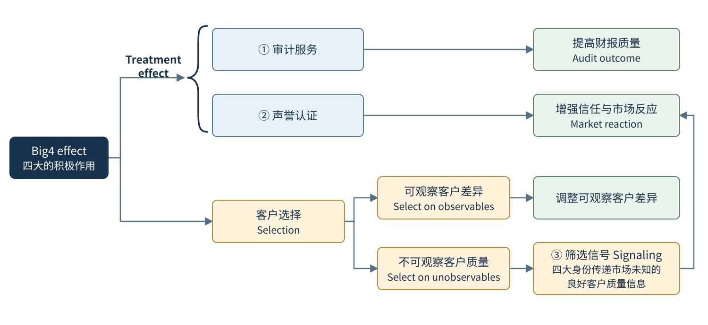
| 位置 | 研究问题 | 核心已有检验 | 证据 |
|---|---|---|---|
| 事实 | 四大客户财报质量更好、市场更认可、收费更高吗？ | 审计失败与其他质量代理、费用、好消息路径、ERC、PEAD、分析师信息及修正 | 财报质量： 严格综合失败的原始发生率为四大2.26%、本土八大6.47%、Other 7.84%；传统应计及真实盈余管理等财报质量的衡量没有一致证据。市场： 四大客户整体ERC较高，好消息（超预期10%以上组相对于中立组）市场反应更强，好消息后的长期PEAD较低（这体现了市场对超预期的财报更早反应，在金融里是对财报的信任）；分期与分析师指标并非一致。费用： 四大收费均值约为本土八大的3.7倍，同一客户换入后对数费用上升、换出后下降。 |
| 审计服务 | 换入四大是否改善财报？ | DID、PSM-DID、实际审计失败的分解、取消未来留任、风险路径匹配、经营对照、收购及人员迁移、IV | PSM-DID： 在[−4,+4]窗口，换入四大后的Fin、Raw未预警重述概率分别显著下降10.04个百分点（p<0.001）和8.29个百分点（p=0.044）；事前系数联合检验p分别为0.938、0.619，均未发现显著事前趋势。分解与补充： Fin实际重述也下降8.01个百分点（p=0.015）；取消未来留任要求后Fin、Raw下降仍显著，加入事前风险路径后Fin重述概率下降5.30个百分点（p=0.056）。其他盈余质量指标没有一致平均改善，安永和大华的合并及人员迁移未提供稳定的全面改善证据。 |
| 客户选择 | 四大如何接受、预警和调整客户？ | 进入前特征、公共变量调整、年度PSM、意见与风险、进入退出、报告日后三年检验 | 可观察选择： 未来四大客户在规模、亏损及风险上已有事前差异；公共变量调整与年度PSM后仍有质量差异。意见与流动： MAO与四大客户次年退出显著正相关，也与非四大客户次年进入负相关。三年风险检验： 未来进入者的历史违规较少，历史重述差异不显著。 |
| 市场价值 | 可观察调整后市场优势还在吗？声誉是否有独立作用？ | PSM＋ERC、安达信声誉事件、安永—大华市场DID／IV | PSM＋ERC： 可观察客户特征匹配后，Big4×UE在CAR[−1,+1]、[−2,+2]、[−3,+3]中分别为0.144033、0.198599、0.189861，均p<0.001；整体盈利消息反应优势保留。声誉与准实验： 安达信1月声誉事件未获得显著负向组间CAR；安永—大华市场IV的交互工具较弱，尚未获得稳健的独立声誉认证因果证据。 |
审计费用在故事中的位置。 价格溢价是事实，不是质量或声誉的证明。第一部分展示四大收费更高；第二部分展示同一公司换入／换出时收费随身份变化。随后问这笔溢价是否对应审计服务、独立声誉认证或筛选信息价值。当前结果没有把费用分解成三个渠道，也没有识别客户支付意愿。
核心结果
- 事实： 四大客户的严格综合失败率较低，市场在部分好消息规格中反应更强，整体ERC较高、好消息会带来更好的市场反应，好消息后的PEAD较低；传统盈余质量的财务报表的衡量和分析师指标并非一致占优。四大收费存在明显溢价。
- 审计服务： 换入及匹配DID的Fin重述结果较明确。实际重述也下降，取消未来留任要求后仍下降，加入事前风险路径后负向结果有所减弱但保留。其他盈余和财报指标未呈现改善。
- 客户选择： 未来四大客户在规模、亏损和违规等方面已有事前差异。新三年检验中，未来进入者的历史违规较少，仅10%显著；意见对Raw重述的组间预测差异显著，但并非所有重述或违规；退出者风险结果尚不足以确认四大主动剔除坏客户。
- 市场认证： 可观察客户特征PSM后，三个CAR窗口的整体ERC交互仍为正且p<0.001。它不能单独区分服务、声誉和不可观察选择。安达信及安永—大华市场检验尚未提供稳健的认证因果证据。
- 时间机制： 2012年前可能同时存在较强四大声誉和较稀缺的非四大优质审计，由此产生较强声誉作用与较高筛选信号价值。已有分期、滚动和三组比较用于考察这一解释，不把2012分组直接视为外生处理。
主要结果图表
主要证据形成三条相互联系的线索：四大客户的实际失败较少，换入四大后的重述下降支持审计服务的改善作用；客户在进入前已有差异，说明客户选择也参与形成质量优势；市场对四大客户的盈利消息反应更强、好消息后的漂移较低，且客户特征匹配后ERC优势仍保留。收费溢价与这些质量及信息优势同时存在。以下依次展示证据，各项标题链接至后文的完整分析。
财报质量、收费与市值
四大客户的严格综合失败率为2.26%，低于本土八大的6.47%及Other的7.84%。但应计及真实盈余管理指标没有一致优势，质量差异主要体现在实际失败指标。四大收费存在明显溢价，客户市值也更高，因此需要进一步区分服务改善与客户构成。
首先比较四大、本土八大和其他事务所的失败率及财报质量；收费与市值结果见1.2节。财报质量差异采用四大dummy回归；表中分别使用行业×年份FE及firm FE＋year FE，费用取\(\log(1+AuditFee)\)，市值取log。
\[ Y_{it}=\text{firm FE}+\text{year FE}+\beta Big4_{it}+\gamma^{\prime}X_{it}+\varepsilon_{it}. \]

四大客户的Strict综合失败率、重述率和违规率分别为2.26%、1.09%和1.53%，均低于本土八大及Other。Fin、Broad定义以及未预警失败的比较也呈相同排序，四大客户较少出现实际财报问题。

四大客户的MAO与GC比例分别为2.24%和0.92%，异常应计的原始均值也较低，REM均值则与Other相同。与此同时，四大的平均审计费明显更高，客户平均市值也更大，质量、价格与客户构成差异同时存在。
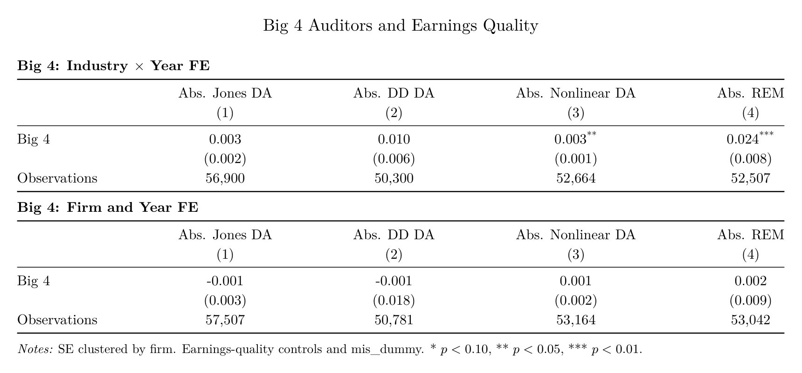
加入客户特征后，行业×年份FE规格中的非线性异常应计与REM系数显著为正；firm FE＋year FE规格中的四项系数均不显著。因此，传统盈余管理指标没有显示一致的四大质量优势。
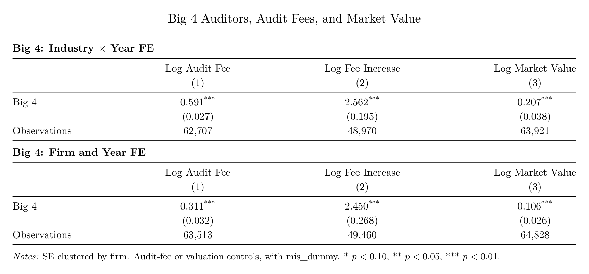
四大审计费、市值和费用增加额的系数在两套FE规格下均显著为正。firm FE＋year FE下，审计费和市值系数分别为0.311和0.106，说明价格溢价与四大身份相关，并非仅存在于原始均值比较。
好消息的公告反应与时间变化
好消息的四大相对反应优势在2012年前更明显，滚动窗口显示公告日差异总体随时间减弱。与后面的PEAD结果结合，这一模式与四大客户消息较早进入价格、非四大客户需要更长时间消化消息的解释一致。声誉与筛选信号是这一时间变化的两种可能来源。
以surprise>10%为好消息，±10%为中性消息，比较四大−非四大的公告路径差。事件路径采用10%门槛及第−1日基准；门槛扫描比较5%—25%的设定，每个门槛重新划分好消息与中性消息并估计。滚动图在各7年窗口分别估计公告日差值。
\[ \log P_{ift}=\text{firm}\times\text{year FE}+\text{event time FE}+\text{trading date FE}+\sum_{k\ne-1}\sum_{g\in\{Big4,NonBig4\}}\beta_{gk}A^g_{if}T_{if}D^k_{ift}+\varepsilon_{ift},\quad\Delta_k=\beta_{Big4,k}-\beta_{NonBig4,k}. \]
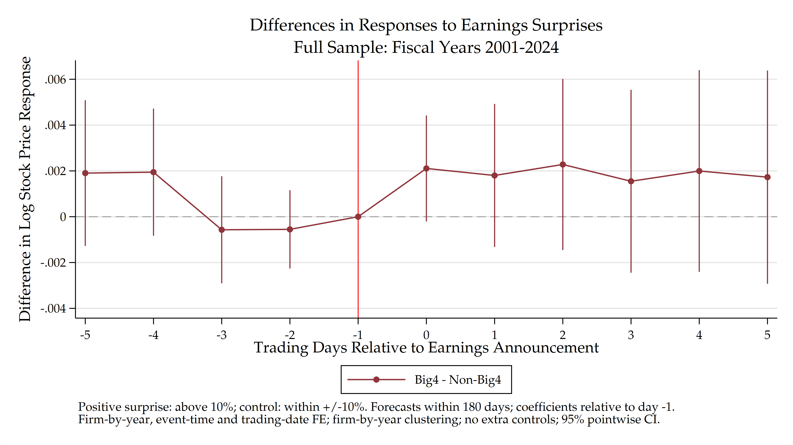
全样本中，公告后的四大−非四大反应差主要为正，差异集中在消息公布后的最初几天。这一短期路径体现四大客户好消息较早进入价格的模式。
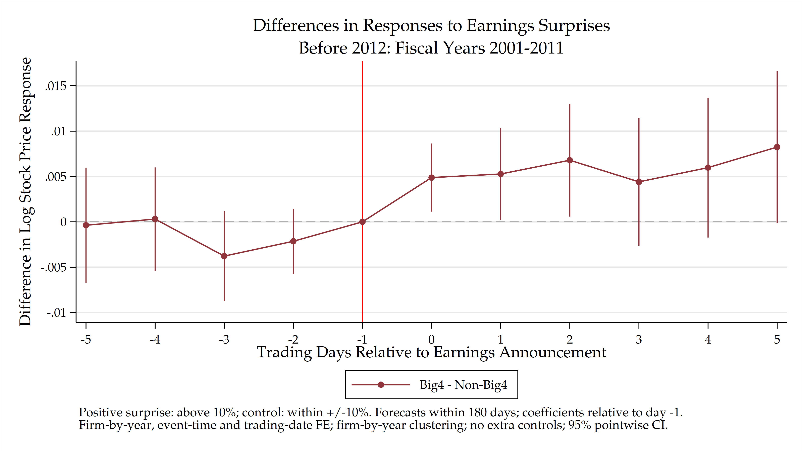
2012年前，公告后四大−非四大的正向差值更明显，与全样本相比呈现更强的早期反应优势。这是讨论改制前声誉与筛选信号价值的重要时间事实。
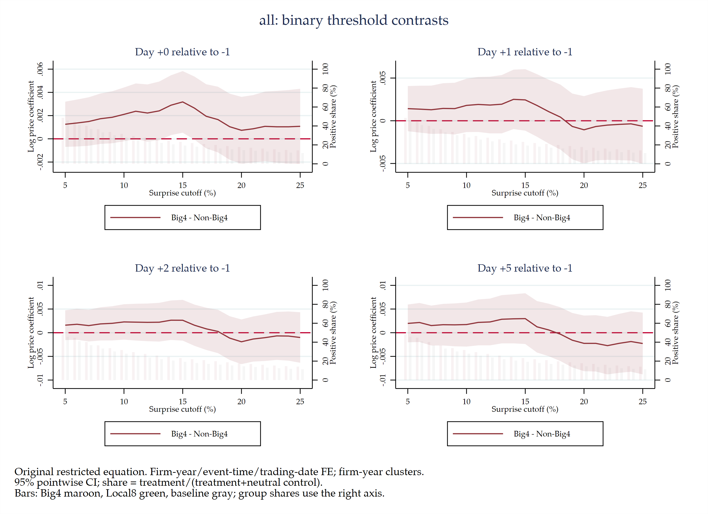
全样本的反应差随好消息门槛变化，支持程度并非在所有门槛下相同；提高门槛时，好消息事件占比也下降。10%主结果因此放在这一组门槛比较中理解。
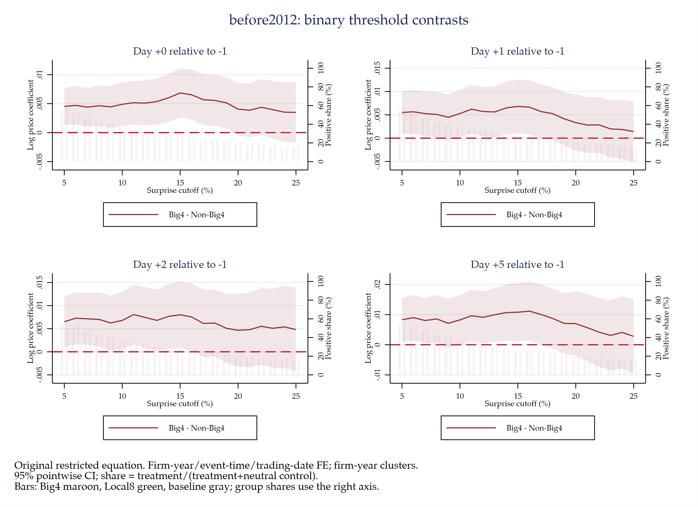
2012年前的门槛扫描在一系列设定下呈现四大的正向反应优势，同时显示高门槛对应的好消息样本更少。早期市场优势具有跨门槛的支持，但幅度会随消息划分变化。
7年滚动窗口的公告日差值早期较大，随后总体减弱，后期更接近零。它把2012前后的分期事实连接为随时间变化的市场反应模式。
ERC：对连续盈利消息的反应
三个CAR窗口的四大−非四大ERC斜率差均为正且达到5%显著水平，分别为0.113144、0.156270和0.128447。市场对四大客户的连续盈利消息更敏感，补充了好消息门槛检验的证据。
UE为实际EPS减公告前180天预测中位数，再除以公告前一交易日股价；Y为各公告窗口的市场调整CAR。表报告Big4×UE，即四大−非四大的斜率差。
\[ CAR_{it}=\text{firm FE}+\text{year FE}+\delta Big4_{it}+\beta UE_{it}+\theta(Big4_{it}\times UE_{it})+\gamma^{\prime}X_{it}+\varepsilon_{it}. \]
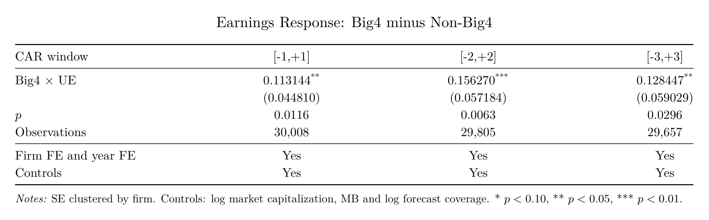
三个CAR窗口的Big4×UE分别为0.113144、0.156270和0.128447，均达到5%显著水平。相同幅度的盈利消息对应四大客户更强的公告期收益反应，整体ERC优势跨窗口保留。
PEAD：好消息的后续价格反应
两套路径均在公告后较晚阶段出现显著负差值，第+60日分别为−0.020188和−0.020489。四大客户好消息后的后续累计收益较低，与较少延迟反应、较低PEAD的解释一致。
Y为相对第−1日的累计市场调整收益，包含公告初期收益。A仅保留好消息；B同时使用好消息和中性消息，图示同一模型中的组间系数差。
\[ C_{ij}=\text{firm}\times\text{year FE}+\text{event time FE}+\text{trading date FE}+\sum_{k\ne-1}\theta_k Big4_iD^k_{ij}+\varepsilon_{ij}\quad(S_i>0.10). \]
\[ C_{ij}=\text{firm}\times\text{year FE}+\text{event time FE}+\text{trading date FE}+\sum_{k\ne-1}\left[\beta_{B,k}Big4_iT_iD^k_{ij}+\beta_{N,k}(1-Big4_i)T_iD^k_{ij}\right]+\varepsilon_{ij}. \]
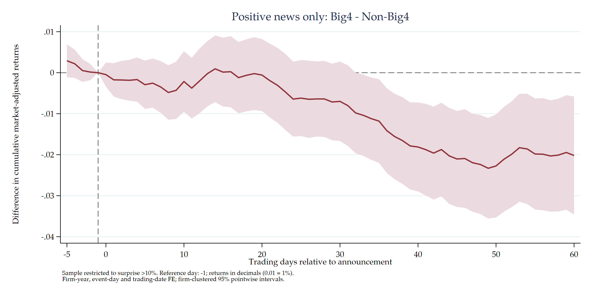
仅在好消息样本中，第+60日的四大−非四大累计收益差为−0.020188（p=0.0060），显著负差值主要出现在后段。四大客户好消息后的后续漂移较低，与较少延迟反应相一致。
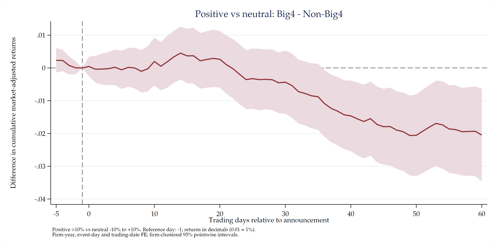
加入中性消息对照后，第+60日的组间反应差为−0.020489（p=0.0045），与好消息内部比较接近。两种比较共同支持四大客户较低的好消息后PEAD。
分析师：财报信息如何进入预期
共同信息权重的无控制差异为正，但加入四项控制后不显著；共同及私人信息精度也没有稳定优势。分析师结果因而没有形成与价格反应同样清楚的四大优势。
同一券商对同一下一财年EPS的公告前后预测用于构造\(\Delta\rho\)、\(\Delta h\)、\(\Delta s\)；分别衡量共同信息权重、共同信息精度和私人信息精度的变化。下表为完整信息样本的原值结果，不加固定效应。
\[ \Delta I_{it}=\alpha+\beta Big4_{it}+\gamma^{\prime}X_{it}+\varepsilon_{it},\qquad I\in\{\rho,h,s\}. \]
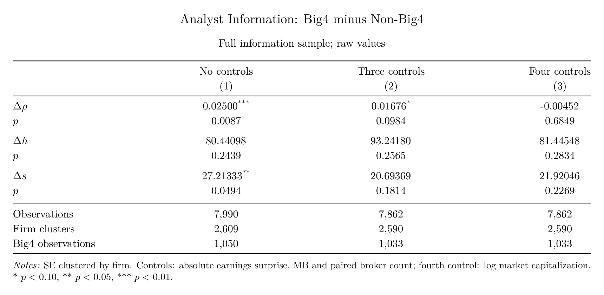
共同信息权重变化Δρ的无控制差异为0.02500（p=0.0087），加入四项控制后为−0.00452（p=0.6849）。Δh与Δs在四项控制下也不显著，分析师信息指标没有形成稳定的四大优势。
客户选择：事前差异与客户进出
未来四大客户在进入前已有规模、亏损及风险差异。当前四大客户获得MAO后次年退出概率显著较高，非四大客户获得MAO后次年进入概率较低。这些结果支持客户构成与风险调整参与形成四大客户组合，尚不能区分事务所辞任与客户改聘。
第一张表比较未来进入者与始终非四大客户的事前特征；第二张表考察当前客户收到意见或风险公告后的次年退出／进入。它们分别提供事前构成和组合调整证据。
\[ NextBig4_{it}=\text{firm FE}+\text{industry}\times\text{year FE}+\beta Signal_{it}+\gamma^{\prime}X_{it}+\varepsilon_{it}. \]

未来进入四大的客户在进入前三年已具有较大规模、较低亏损率与违规率、较高经营现金流。进入前一年，两组违规率为1.96%与5.45%；重述率则未始终保持同样排序，事前选择差异主要体现在规模与风险构成。
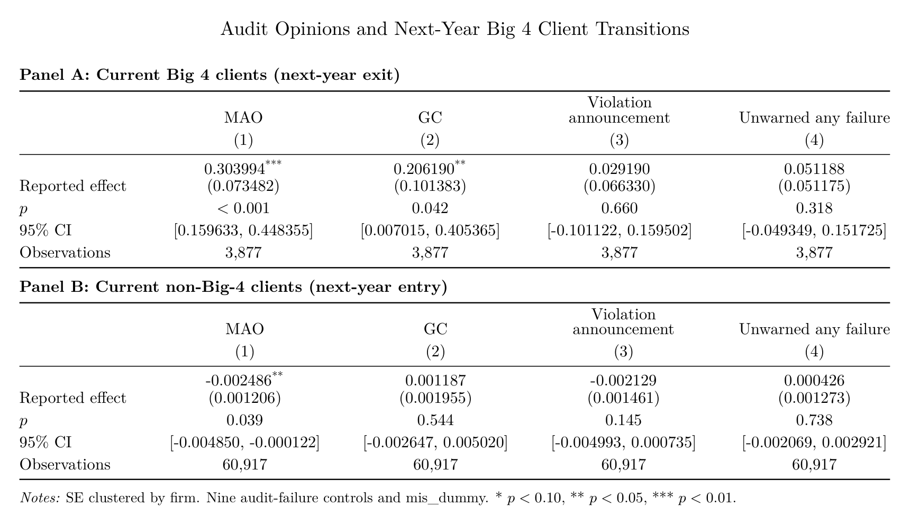
当前四大客户收到MAO和GC后，次年退出概率分别高30.40和20.62个百分点，均显著为正；非四大客户收到MAO后的次年进入概率低0.25个百分点（p=0.039）。意见与客户进出相关，表明客户组合会随风险信号调整。
审计服务：换所DID与PSM-DID
换入四大后，Fin重述在未匹配DID和匹配DID中均下降。扩展至[−4,+4]的加权PSM-DID中，Fin及Broad（Raw）未预警重述概率分别下降10.04个百分点（p<0.001）和8.29个百分点（p=0.044）；事前系数联合检验p值为0.938和0.619，未发现显著事前趋势。Fin的逐期下降更连贯，是审计服务部分最清楚的动态证据。
Y为各定义下的重述、违规及未预警综合失败dummy。换入与始终非四大比较，换出与始终四大比较；匹配DID使用既有事前客户特征与匹配权重。普通DID使用firm FE与行业×年份FE；下式为匹配后的stacked DID。
\[ Y_{ict}=\text{cohort}\times\text{firm FE}+\text{cohort}\times\text{industry}\times\text{year FE}+\tau(Treated_{ic}\times Post_{ct})+\gamma^{\prime}X_{it}+\varepsilon_{ict}. \]
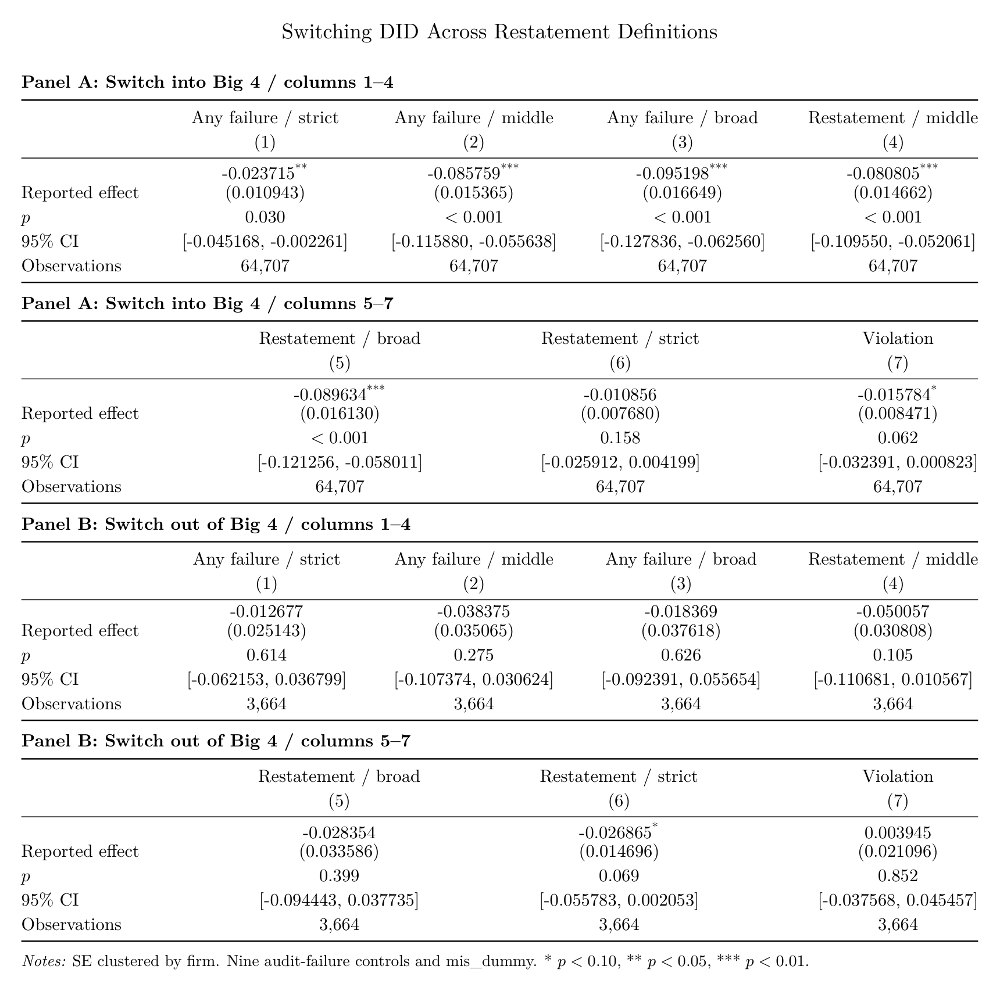
换入四大后的Fin和Broad未预警重述概率分别下降8.08和8.96个百分点，均p<0.001；Strict重述不显著，违规仅达到10%显著水平。换出结果没有呈现对称的风险上升，主要改善证据来自换入后的Fin与Broad重述。
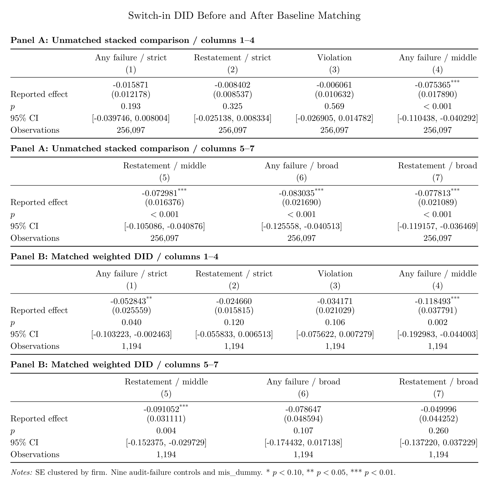
基准加权PSM-DID的Fin未预警重述概率下降9.11个百分点（p=0.004），Strict综合失败也显著下降；Broad重述系数为负但不显著。匹配后Fin改善仍保留，是这一窗口最清楚的质量结果。
动态回归将上式中的平均处理项替换为换所相对年份交互项，以换所前一年为基准：
\[ Y_{ict}=\text{cohort}\times\text{firm FE}+\text{cohort}\times\text{industry}\times\text{year FE}+\sum_{k=-4,\,k\ne-1}^{4}\tau_k\bigl(Treated_{ic}\times\mathbf{1}\{t-c=k\}\bigr)+\gamma^{\prime}X_{it}+\varepsilon_{ict}. \]
下列两张既有图均采用[−4,+4]窗口，上排为Fin，下排为Broad（Raw），左列为未预警综合失败，右列为未预警重述。未匹配与匹配回归分别使用各自样本；加权匹配回归包含1,763条堆叠观测、125家处理公司和107家对照公司，标准误按公司聚类。
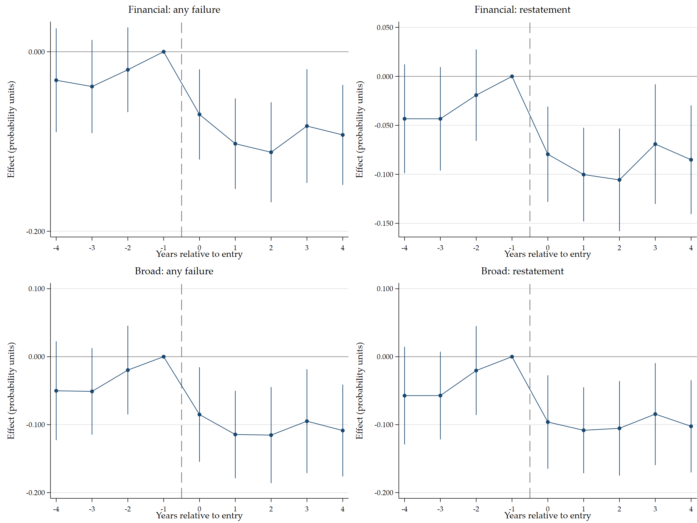
未匹配动态DID展示Fin与Broad综合失败和重述的换所前后路径，换入后的下降主要集中在重述及其综合失败指标。动态路径补充平均系数，说明变化发生在换入后的哪些年份。
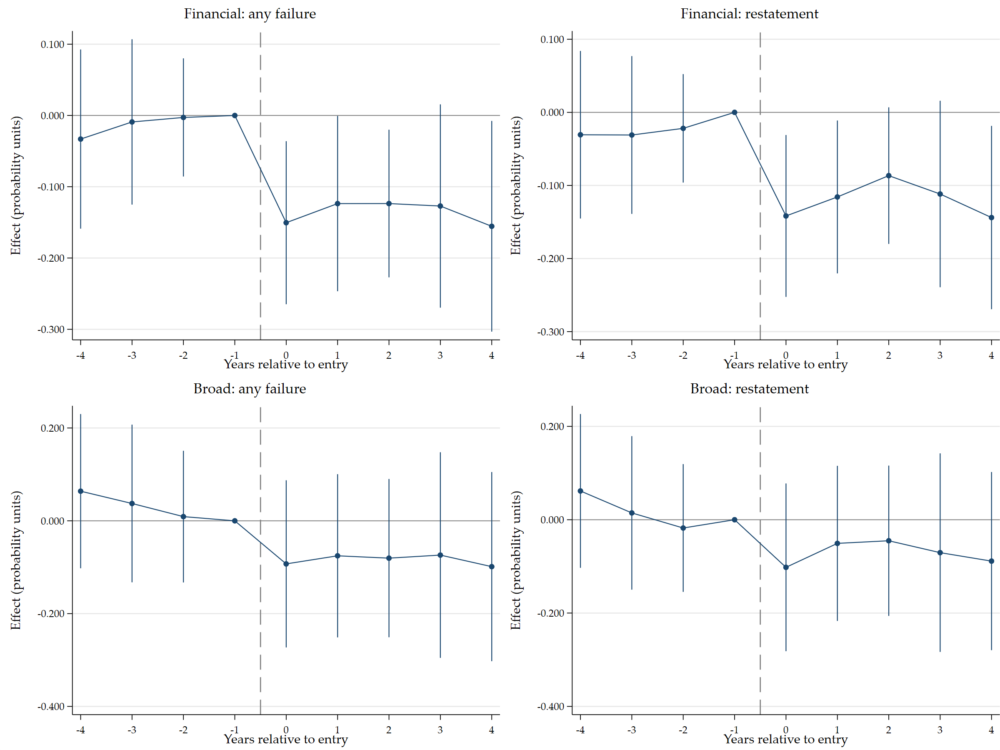
扩展窗口的加权PSM-DID中，Fin与Broad未预警重述概率分别下降10.04个百分点（p=0.0006）和8.29个百分点（p=0.0440），事前联合检验p值为0.938和0.619。两项均未发现显著事前趋势，Fin换入后的下降更连贯。
其他盈余质量与费用：换所后的变化
其他盈余质量指标没有一致平均改善；收费则随身份明显变化，换入四大后log费用上升、换出后下降。费用结果说明四大服务存在价格溢价，但质量改善的证据仍主要来自重述。
分别以异常应计／REM的绝对值、\(\log(1+AuditFee)\)及市值log为Y，比较换入和换出四大后的变化；控制项按各类结果设置。
\[ Y_{it}=\text{firm FE}+\text{industry}\times\text{year FE}+\tau DID_{it}+\gamma^{\prime}X_{it}+\varepsilon_{it}. \]
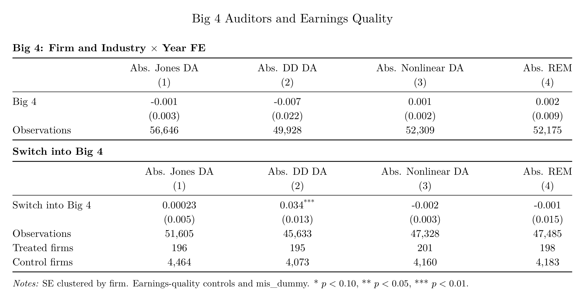
换入四大后，Jones异常应计、非线性异常应计和REM未显示显著改善，DD异常应计系数则显著为正。服务改善并未一致反映在这些盈余管理代理上，主要支持仍来自重述。
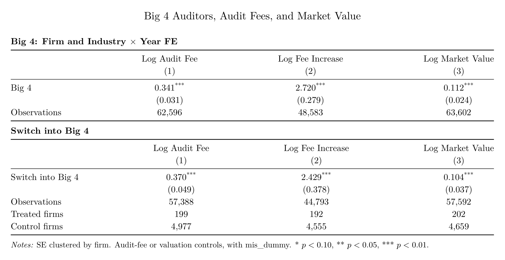
换入四大后，审计费系数为0.370，市值系数为0.104，均达到1%显著水平。四大身份变化伴随收费上升，价格结果与重述改善共同构成服务价值的证据。
实际重述与审计意见分解
Fin实际重述概率下降8.01个百分点（p=0.015），并非只有未预警重述下降；MAO总体变化不显著。这表明主要结果包含实际失败减少，不能仅由审计意见改变解释。
同一匹配DID比较实际失败及未预警、已预警分量，检验下降是否仅来自审计意见变化。
\[ Y_{ict}=\text{firm}\times\text{cohort FE}+\text{cohort}\times\text{industry}\times\text{year FE}+\tau(G_{ic}\times Post_{ct})+\gamma'X_{it}+\varepsilon_{ict}. \]
\(G\)为进入四大的处理组，\(Post\)从进入财年取1，九项控制及mis_dummy、公司聚类，窗口为[−4,+4]。
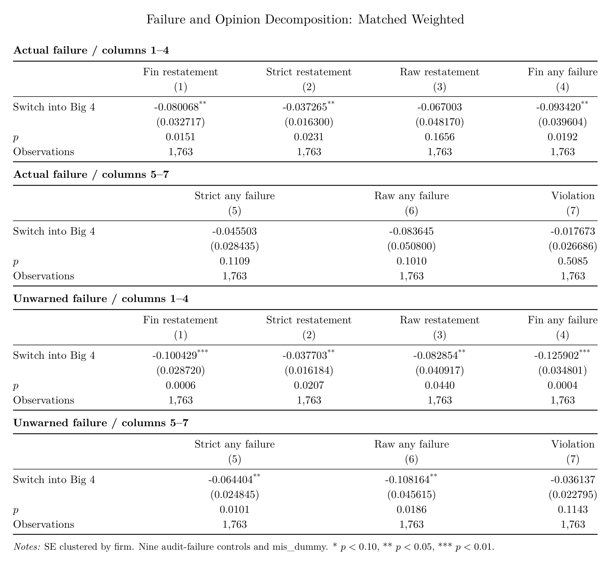
Fin实际重述概率下降8.01个百分点（p=0.0151），未预警重述概率下降10.04个百分点（p=0.0006）；Strict实际重述也显著下降。下降同时出现在实际问题与未预警问题中，结果包含实际财报失败减少。
取消未来留任要求
允许客户换入后再次退出四大，Fin与Raw重述的下降仍显著，说明结果并非完全由事后持续留任的样本要求驱动。
沿用换入DID，允许进入四大后再次退出，比较留任限制是否驱动结果。
\[ Y_{ict}=\text{firm}\times\text{cohort FE}+\text{cohort}\times\text{industry}\times\text{year FE}+\tau(G_{ic}\times Post_{ct})+\gamma'X_{it}+\varepsilon_{ict}. \]
\(G\)为进入四大的处理组，\(Post\)从进入财年取1，九项控制及mis_dummy、公司聚类，窗口为[−4,+4]。
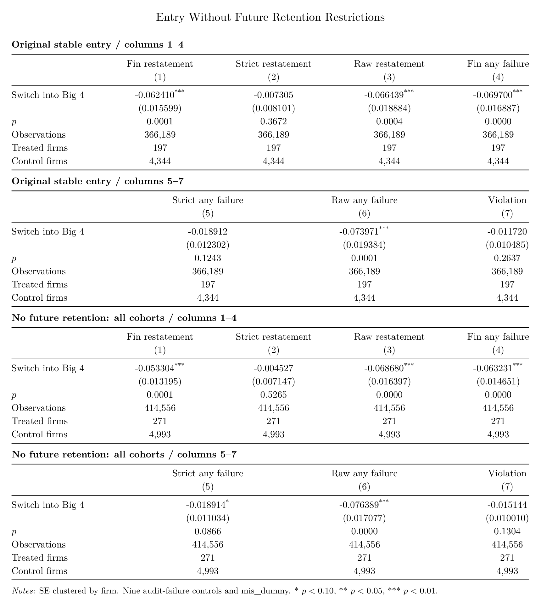
取消未来留任要求后，Fin和Raw未预警重述概率分别下降5.33和6.87个百分点，均达到1%显著水平。允许进入后再次退出，重述下降仍保留，持续留任筛选并非该结果的唯一来源。
事前风险路径匹配
事前风险路径匹配进一步要求处理与对照在进入前三年的财务和已公告风险上可比。下表在两种匹配的共同样本中直接比较，基准与风险路径匹配的重述结果均不显著。
沿用匹配DID，在共同样本比较基准匹配与事前风险路径匹配。
\[ Y_{ict}=\text{firm}\times\text{cohort FE}+\text{cohort}\times\text{industry}\times\text{year FE}+\tau(G_{ic}\times Post_{ct})+\gamma'X_{it}+\varepsilon_{ict}. \]
\(G\)为进入四大的处理组，\(Post\)从进入财年取1，九项控制及mis_dummy、公司聚类，窗口为[−4,+4]。
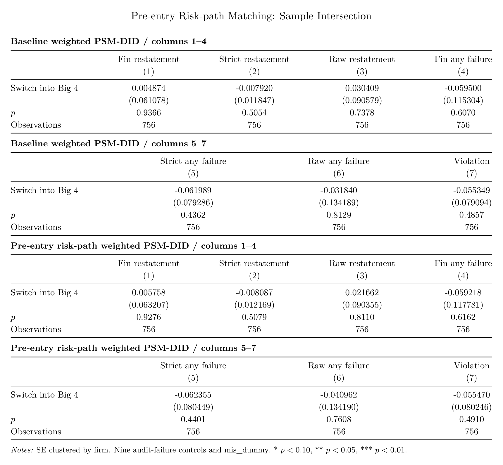
这张表使用756条共同样本观测；基准匹配和风险路径匹配中的Fin、Strict、Raw重述系数均不显著，两种匹配结果接近。共同样本本身没有显示明确的重述下降，需要与各自完整样本结果分开理解。
供应链IV
供应商冲击对四大采用的第一阶段有统计支持，但KP F为4.515；并集组KP F为0.970。弱工具限制使这组结果尚不能提供稳健的四大服务因果证据。
供应链冲击用于预测四大采用，再估计四大对审计失败dummy的作用。
\[ Big4_{it}=\text{firm FE}+\text{industry}\times\text{year FE}+\pi Z_{it}+\eta^{\prime}X_{it}+u_{it},\qquad Y_{it}=\text{firm FE}+\text{industry}\times\text{year FE}+\beta\widehat{Big4}_{it}+\gamma^{\prime}X_{it}+\varepsilon_{it}. \]
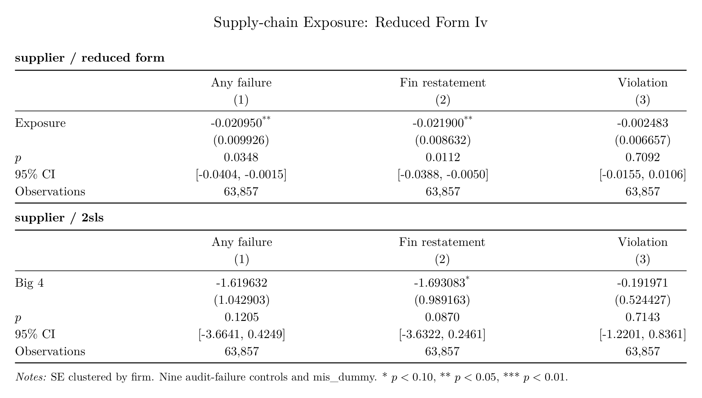
供应商冲击的简约式中，综合失败与Fin重述概率分别下降2.10和2.19个百分点，均达到5%显著水平。2SLS中的Fin重述仅达到10%显著水平，且第一阶段KP F为4.515，因果估计的精度受到弱工具影响。
安永—大华转入四大
收购提供了区别于主动换所的身份变化，但可用处理客户有限，现有结果未显示稳定的全面财报质量改善。它补充了准实验检验，主要质量证据仍来自换所DID与PSM-DID。
固定2001财年大华客户，按2002财年转入构造处理；表中同时列第一阶段、DID与IV。
\[ Big4_{it}=\text{firm FE}+\text{industry}\times\text{year FE}+\pi Z_{it}+\eta^{\prime}X_{it}+u_{it},\qquad Y_{it}=\text{firm FE}+\text{industry}\times\text{year FE}+\beta\widehat{Big4}_{it}+\gamma^{\prime}X_{it}+\varepsilon_{it}. \]
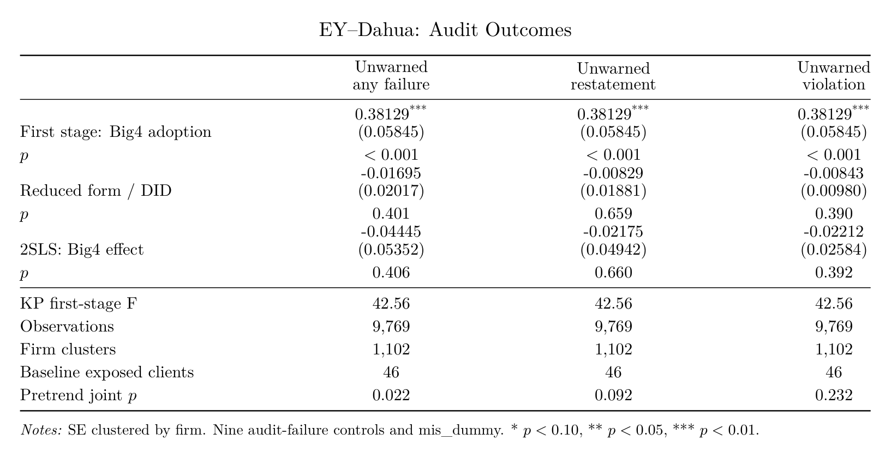
合并对应的四大采用概率上升38.13个百分点，KP F为42.56；但三个失败指标的DID和2SLS均不显著。综合失败的事前联合检验p=0.022，这一事件没有给出与换所DID同样清楚的质量改善证据。
同一签字人员—客户转入四大
保持人员—客户关系后，全部批次的主要失败结果不显著，且处理客户支持较少。现有结果尚未形成独立于人员与客户关系的全面四大平台改善证据。
固定既有人员—客户关系，在同一关系转入四大后比较审计结果。
\[ Y_{rct}=\text{relationship}\times\text{cohort FE}+\text{cohort}\times\text{industry}\times\text{year FE}+\tau(Treated_{rc}\times Post_{ct})+\gamma^{\prime}X_{it}+\varepsilon_{rct}. \]
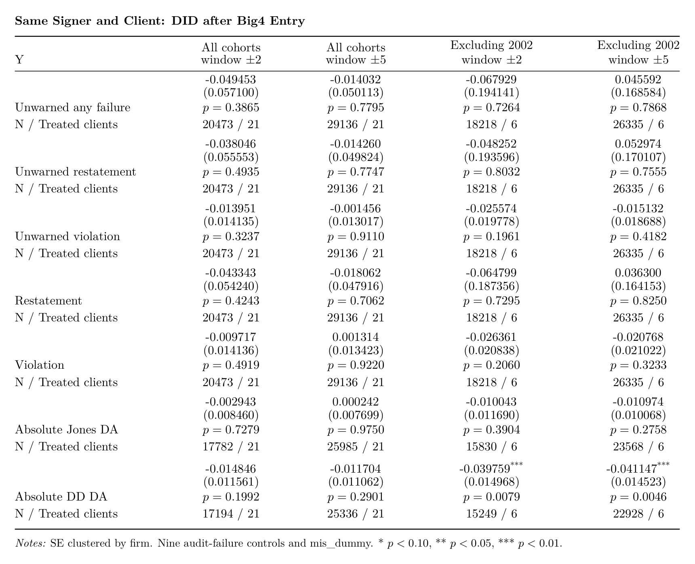
保持签字人员—客户关系的全部批次检验中，主要失败指标均不显著。排除2002年后DD异常应计显著下降，但失败结果仍不显著，四大平台作用的支持集中于个别指标。
匹配后的市场认证
匹配后，三个CAR窗口的Big4×UE分别为0.144033、0.198599和0.189861，均p<0.001。可观察客户特征调整后，市场对四大客户盈利消息的较高反应仍保留；这支持四大身份的信息价值，但尚未分离服务、声誉与不可观察选择。
在可估计ERC的共同候选样本匹配四大与非四大客户，保留匹配权重后估计Big4×UE。
\[ CAR_{it}=\text{firm FE}+\text{year FE}+\delta Big4_{it}+\beta UE_{it}+\theta(Big4_{it}\times UE_{it})+\gamma'X_{it}+\varepsilon_{it}. \]
以匹配权重估计，X为市值、MB及预测覆盖，按公司聚类。最终样本4,552条事件、774家公司；三个窗口共用样本。
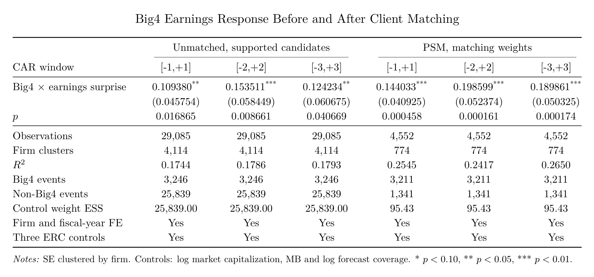
匹配后的三个ERC交互系数分别为0.144033、0.198599和0.189861，均p<0.001。调整可观察客户特征后，四大客户盈利消息的较高反应仍然存在，构成市场部分的主要结果。
安达信声誉事件
三个客户定义均未获得显著负向组间CAR，因此中国样本中的这次声誉事件尚未提供明确的市场认证因果证据。
Y为2002年1月11、14、15日三日市场调整CAR；分别比较安达信与Other Non-Big4、Big4。
\[ CAR_i=\text{industry FE}+\delta_A Andersen_i+\delta_B Big4_i+\varepsilon_i. \]
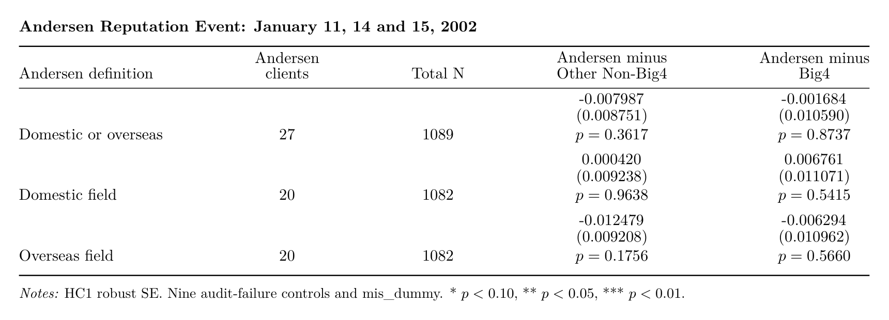
并集定义下，安达信相对其他非四大和四大的CAR差分别为−0.007987与−0.001684，均不显著；境内、境外定义也没有显著负差。中国样本的这次事件未呈现明确的声誉损失价格反应。
安永—大华的市场检验
转入四大后的市场消息斜率未形成稳健改善证据，交互工具也较弱。因而市场部分目前较清楚的是ERC及匹配后ERC优势，而非这一收购事件的认证效应。
检验转入后的消息反应斜率变化，分别使用分析师盈利意外和EPS变化代理。
\[ CAR_{it}=\text{firm FE}+\text{year FE}+\tau(Treated_i\times Post_t\times News_{it})+\text{lower-order terms}+\gamma^{\prime}X_{it}+\varepsilon_{it}. \]
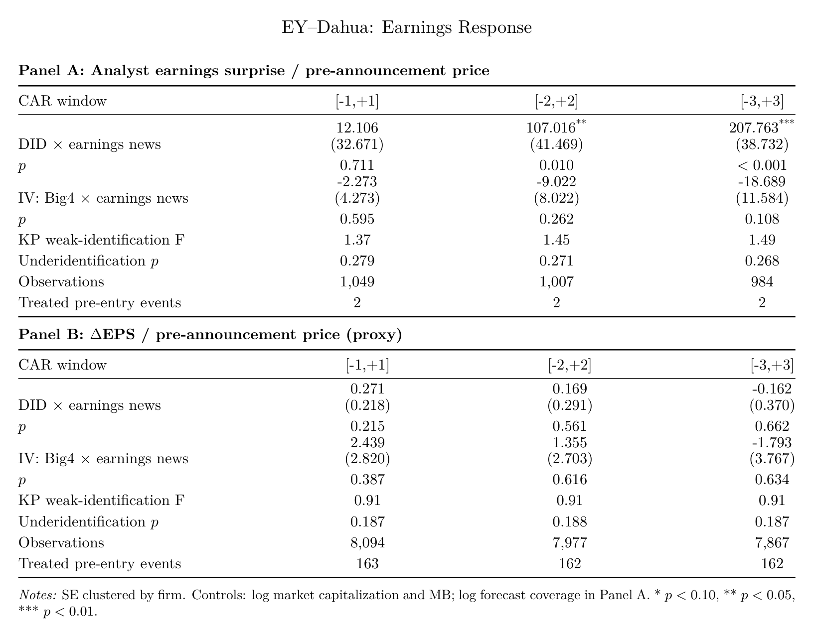
分析师消息的宽窗口DID为正且显著，但处理组转入前只有2个事件；EPS变化代理的DID与IV均不显著，两套交互IV的KP F均较低。因此，这次合并尚未形成稳定的市场认证改善结果。
文献与研究问题
文献中的 Big4 effect 包含三个不同问题：大所客户是否有更好的财报质量，差异有多少来自客户选择，以及大所身份是否改变市场对财报信息的使用；历史文献使用 Big 8、Big 6、Big 5 或 Big N，以下保留原文分类，不将这些历史品牌口径直接等同于今天的四大。
理论基础：审计服务、声誉与选择信号。 DeAngelo（1981）（JAE）不使用实证客户样本，而是在审计师发现并报告违约的理论模型中说明，拥有更多客户及未来准租金的大所更有维护独立性的动机，为大所质量优势提供理论解释，因而不属于实证因果识别。
Titman、Trueman（1986）（JAE）不使用实证数据，而是在新股发行的非对称信息模型中同时考虑审计信息精度和企业选择审计师的信号作用，说明高质量企业的选择可以向投资者传递私人信息，为选择的经济价值提供理论依据，但不直接证明四大主动筛选客户或年度盈利公告中的因果认证作用。
财报质量：早期大所优势及其制度条件。 Becker、DeFond、Jiambalvo、Subramanyam（1998）（CAR）使用美国10,379个 Big 6 客户年度和2,179个非 Big 6 客户年度，通过可操纵应计的客户特征调整比较发现非 Big 6 客户具有更高的增利应计和绝对应计偏离，支持大所与较少盈余管理相关，但这一比较没有利用外生的大所聘用冲击。
Lennox、Pittman（2010）（CAR）将美国1981—2001年上市公司财务资料与 SEC 会计执法所确认的舞弊发生年度连接，通过舞弊 Probit、审计师选择匹配、舞弊风险匹配及任期和换所时序检验发现 Big 5 客户的舞弊概率较低，增强了实际失败指标上的证据，但持续的客户选择仍未由外生审计师分配排除。
Francis、Wang（2008）（CAR）使用1994—2004年42个国家的公司财报及投资者保护制度资料，比较应计、亏损确认和稳健性与审计师类型及制度的交互关系，发现 Big 4 的盈余质量优势随投资者保护增强而扩大，说明品牌效果依赖制度激励，但跨国交互比较不等于外生聘用四大的处理效应。
Ke、Lennox、Xin（2015）（TAR）使用1995—2012年中国四大上市客户的年报、CSMAR 和审计师履历，在大陆单一监管与存在独立香港审计的 AH 客户之间进行控制及匹配比较，发现弱制度环境下四大配置的审计师经验较少、意见较宽松、费用较低且有符号异常应计较高，揭示同一品牌内部的质量差异，而非外生四大聘用实验。
客户选择：可观察调整是否消除 Big4 effect。 Lawrence、Minutti-Meza、Zhang（2011）（TAR）使用美国1988—2006年 Compustat、CRSP 和 I/B/E/S 数据，以规模、周转率、流动性、杠杆和 ROA 等客户特征进行 PSM，发现匹配后的异常应计、隐含资本成本和分析师预测准确度差异不显著、客户规模尤其重要，但匹配只调整纳入模型的可观察特征，不能证明审计服务无效或不可观察选择已消失。
DeFond、Erkens、Zhang（2017）（Management Science）使用美国1988—2006年及2004—2013年上市客户的财务和 Audit Analytics 数据，比较匹配比例、卡尺、放回规则及非线性选择模型等大量平衡设计，发现多数设计仍保留 Big N 在应计、重大向下重述及困境客户持续经营意见上的质量优势，说明一次匹配的不显著结果不足以断言差异完全来自客户特征，但同样没有外生聘用冲击。
Johnstone、Bedard（2004）（JAR）使用美国一家大型事务所2000—2001年超过7,000家上市及私人客户的内部风险评分与客户关系记录，通过接受、留任及主动终止的 Logit 比较发现事务所淘汰较高风险客户、接受相对较低风险客户，为事务所供给侧筛选提供直接资料，但不识别这些客户接受大所审计后的财报改善。
Wang、Wong、Xia（2008）（JAE）使用中国1993—2003年5,759个纯 A 股公司年度的所有权、审计师及地区制度资料，通过审计师选择 Logit 及所有权与制度交互发现国企尤其地方国企更倾向选择小型本地事务所、弱制度地区更明显，说明审计师选择有制度及产权基础，但不构成四大质量作用的因果检验。
较强识别：改变组织归属或审计环境。 Jiang、Wang、Wang（2019）（TAR）使用美国1976—1995年20次 Big N 收购非 Big N 所涉及的331家公众客户及其前后财报，通过收购 DID、匹配、安慰剂及以收购为工具的质量 IV 发现应计等质量指标改善，却未发现 ERC、隐含资本成本或收购公告 CAR 显著改善，提供减少客户主动换所选择的准实验，但仍需客户留任及收购冲击的识别假设。
Che、Hope、Langli（2020）（Management Science）使用挪威2004—2012年私人有限责任公司的财务、付款违约和实名合伙人资料，跟踪68名可用的非四大转入四大合伙人及随行客户，通过同一客户—合伙人组合、匹配 DID 与安慰剂发现持续经营判断、应计质量及费用提高，为四大组织环境的增量作用提供准实验线索，但合伙人招聘和客户随行仍有选择。
Lennox、Wu、Zhang（2016）（JAE）使用中国2006—2012年财政部私有审计前后报表及 CSMAR 资料，在同一套报表内比较审计调整前后的盈余性质，发现调整后持续性、平滑性及应计质量提高而盈余零点不连续未减少，直接展示审计调整的作用，但处理对象是审计调整，不能当作四大相对非四大的聘用因果效应。
Khurana、Lundstrom、Raman（2021）（CAR）使用美国2001—2010年 Compustat、Audit Analytics 及 PCAOB 首次检查时点构成的35,246个客户年度，以错开的首次检查进行 DID 并补充固定审计师匹配和熵平衡，发现四大在重述等质量指标上的检查后改善大于非四大，识别的是监管冲击对不同审计师的差异作用，而非随机聘用四大。
市场使用财报：消息反应与信息环境。 Teoh、Wong（1993）（TAR）使用美国1980—1989年 Compustat、CRSP 和 I/B/E/S 的行业—资产匹配客户及134次换所事件，以盈利意外与 Big 8 身份交互的 ERC 回归和换所前后比较发现大所客户的盈利反应斜率更高，支持市场感知的可信度差异，但匹配和主动换所没有完全排除选择。
Behn、Choi、Kang（2008）（TAR）使用美国1996—2001年 I/B/E/S 与 Compustat 的分析师覆盖客户，通过预测误差、分歧回归及审计师选择 Probit／IMR 发现 Big 5 客户预测更准确、分歧较低且非 Big 5 行业专家也有信息优势，但选择修正依赖排除变量和分布假设，原文没有将其视为已经识别的因果关系。
Francis、Ke（2006）（RAST）使用美国2001年首次非审计服务费披露前后3,133家公司、16,910个公司季度的费用、盈利预测及收益资料，以披露后、高非审计费与盈利消息的交互比较发现高非审计费客户的 ERC 在披露后降低，提供投资者利用审计独立性信息的制度事件证据，但处理对象是费用信息披露而非四大聘用。
Gipper、Leuz、Maffett（2020）（RFS）使用美国上市公司的盈利消息、市场反应及 PCAOB 监管资料，利用监管实施与审计师、财年及检查展开时点的差异发现盈利消息反应和年报交易反应增强，为监管提高报告可信度提供准实验依据，但不能直接将监管效应解释为四大品牌的处理效应。
声誉冲击：在既有客户中研究市场价值。 Chaney、Philipich（2002）（JAR）使用安达信公开承认销毁安然文件时美国其他既有客户的收益及审计关系资料，以短窗口异常收益事件研究发现客户负向反应、休斯敦办公室客户损失更大，为声誉具有市场价值提供冲击证据，但共同新闻及安达信客户事前构成仍需考虑，且不是 ERC 或四大聘用实验。
Weber、Willenborg、Zhang（2008）（JAR）使用德国2002年 ComROAD 丑闻期间 KPMG 其他上市客户的收益与后续审计师关系，以事件收益和客户流失分析发现负向价格反应及流失增加，在相对较弱诉讼环境中支持声誉渠道的重要性，但不直接识别四大服务对财报质量或盈利消息斜率的作用。
Skinner、Srinivasan（2012）（TAR）使用日本佳丽宝舞弊及2006年中央青山被暂停执业前后的既有客户审计关系，在低诉讼环境下分析客户更换发现声誉受损后大量客户离开，提供客户重视审计师声誉的事件证据，但其结果是客户流动而非公告 CAR、ERC 或随机四大聘用。
费用：市场溢价的事实与解释。 Craswell、Francis、Taylor（1995）（JAE）使用1,484家澳大利亚上市公司的审计费用及客户、事务所行业资料，通过品牌和行业专长的费用比较发现 Big 8 品牌及行业专长均有费用溢价，为本项目“更贵”的事实提供参照，但费用回归本身不能证明质量提升、声誉价值或客户支付意愿的因果来源。
与中国数据及分析师指标直接相关的补充研究。 Eshleman、Guo（2014）（AJPT）使用美国2000—2009年 Compustat 与 Audit Analytics 客户，在同年同业进行有放回 PSM 后比较重述及执法失败，发现四大客户失败较少，为实际失败指标上的匹配路线提供依据，但没有外生四大分配。
Chen、Krishnan、Li、Zhang（2022）（JIAR）使用中国2006—2011年 CICPA 私有审计前后报表及 CSMAR／Wind 的6,323个公司年度，通过审计前质量的选择回归、结果控制及熵平衡发现四大客户审前质量已经更好，控制审前质量后审后异常应计优势消失而重述优势仍保留，直接揭示进入审计前的选择，但仍不是外生聘用设计。
He、Sidhu、Taylor（2019）（JBFA）使用美国1985—2015年 I/B/E/S 和 Compustat 的25,111个公司年度，比较同一预测目标在盈利公告前后的共同及私人信息指标并使用 IMR、PSM、CEM 和 SOX 监管扩展，发现大所客户的信息环境改善更多、部分匹配结论对设定敏感，因而不能把其全部结果归为无条件的四大聘用因果效应。
识别方法的边界。 Lennox、Francis、Wang（2012）（TAR）通过会计研究中的选择模型方法评估说明样本选择与内生处理不同、排除变量和函数形式会影响结果，因此加入 IMR 不自动解决 Big4 effect 的选择问题。
Larcker、Rusticus（2010）（JAE）通过工具变量方法分析说明弱相关性或不成立的排除限制可能使 IV 比 OLS 更不可靠，因此收购、供给或网络变量需要分别证明第一阶段与外生性，不能因工具显著便认定其识别四大的处理效应。
这些文献如何组织本项目。 财报质量部分先呈现四大身份的条件差异，再用换所 DID、PSM-DID、安永—大华及人员迁移考察服务增量；客户选择部分区分公共特征调整与内部风险信息的线索；市场部分结合公告初期路径、ERC、PEAD、分析师修正和声誉事件讨论信息的使用速度与认证价值；费用溢价贯穿三种机制，但不替代质量或市场价值的检验。
四大效应的识别方法：文献、项目做法与证据
下表按识别方法逐项对应财报质量和市场作用：匹配与选择修正是依赖条件可交换性或模型假设的识别尝试，收购、人员迁移和声誉冲击是准实验路线，不能将它们一律称为已排除selection的因果证据；这里只列直接研究大所身份、组织平台或声誉作用的设计，PCAOB监管、一般审计调整、审计任期和分所扩张不作为四大聘用效应列入。
| 文献中衡量四大效应的方法 | 我们的对应做法 | 当前证据及实施限制 |
|---|---|---|
| 客户特征匹配：财报质量。 Lawrence、Minutti-Meza、Zhang（2011）、DeFond、Erkens、Zhang（2017）、Eshleman、Guo（2014）通过PSM比较可观察特征相近的大所与非大所客户；Lennox、Pittman（2010）另用舞弊风险匹配，均依赖未测量混淆不存在等假设。 | 已做五项／九项年度客户PSM、共同样本嵌套控制和实际失败指标比较；没有把年度匹配冒充换所设计，也未完整复制原文的舞弊风险匹配。 | 公共特征调整及年度PSM后仍保留部分失败差异，不能由剩余差异确认不可观察筛选或纯粹服务效应。 |
| 匹配后的市场信息反应。 Teoh、Wong（1993）以行业—资产匹配研究Big 8的ERC；Behn、Choi、Kang（2008）及He、Sidhu、Taylor（2019）研究预测信息并用选择修正或匹配调整客户差异。 | 已在可估计ERC的共同样本中用九项客户特征及缺失标记、行业和年份重新PSM，保留匹配权重，估计Big4×UE及firm FE、year FE；分析师信息与修正另列。 | PSM＋ERC最终4,552个事件、774家公司，三个CAR窗口的交互为0.144033、0.198599、0.189861，均p<0.001；部分协变量仍不平衡、对照权重集中，支持可观察调整后的市场优势，尚非独立认证的因果效应。 |
| 选择方程／IMR与直接审前质量调整。 Behn、Choi、Kang（2008）、He、Sidhu、Taylor（2019）以选择方程和IMR修正大所选择；Chen、Krishnan、Li、Zhang（2022）直接控制私有审前质量并熵平衡。 | 已用公共财务特征做选择Logit、结果控制和匹配；本报告未形成对应的IMR结果，也没有CICPA私有审计前报表，不能复制直接审前质量调整。 | 现有可观察选择证据不能替代私有审前报表；未找到可辩护的对应排除变量时，不能仅靠加入IMR宣称已解决内生选择。 |
| 主动换入大所的前后比较与匹配DID。 Teoh、Wong（1993）比较换所前后ERC；Jiang、Wang、Wang（2019）和Che、Hope、Langli（2020）的准实验另配合匹配DID，原Teoh换所比较并非现代DID。 | 已做公司换入四大的DID、九项PSM-DID及动态检验，另检查实际重述、取消未来留任要求和事前风险路径；这一项是主动换所设计，不能称为收购准实验。 | −4至+4匹配DID中Fin未预警重述概率下降10.04个百分点（p<0.001），联合事前检验p=0.938；Raw亦显著下降、联合事前检验p=0.619；Fin实际重述下降仍显著，其他盈余质量指标未一致平均改善，服务解释仍依赖平行趋势及无同期混淆。 |
| 收购准实验：财报质量DID。 Jiang、Wang、Wang（2019）利用Big N收购非Big N后的原客户转入，减少客户主动聘用的影响，比较收购前后质量。 | 安永—大华：固定2001财年46家大华客户，2002财年为实际记录转入时点，其中35家下一年记录为安永大华；保留事前名单，不只筛实际承接客户。 | 未预警综合失败的DID估计为概率下降1.70个百分点（p=0.401），重述与违规也不显著，综合失败事前联合检验p=0.022；只有一项可用中国对应事件，样本及独立批次支持有限；收购专用匹配Logit未收敛，按已确认决定暂停。 |
| 收购工具变量：四大身份的质量作用。 Jiang、Wang、Wang（2019）在质量附加检验中以收购暴露预测Big N身份，再估计质量结果。 | 同一安永—大华事前名单构造收购暴露工具，以本企业当年Big4 dummy为内生变量，报告共同样本第一阶段、约化式及2SLS。 | 第一阶段四大采用概率上升38.13个百分点（SE=5.85个百分点），KP F=42.56；综合失败2SLS估计为概率下降4.45个百分点（p=0.406），其余失败结果不显著；工具相关性较强，但事前趋势及收购其他直接影响仍限制因果解释。 |
| 收购后的市场作用：ERC与公告CAR。 Jiang、Wang、Wang（2019）分别检验原客户收购后的ERC和收购公告CAR，原文质量改善未伴随显著市场改善，且收购IV不是原文ERC的估计方法。 | 已做安永—大华市场DID和项目扩展IV；没有将本项目ERC-IV说成原文复制，当前也没有可展示的收购公告CAR结果。 | 最终分析师消息样本只有2条处理组事前事件，市场交互工具KP F约1.37—1.49，未形成稳健认证证据；不能用质量第一阶段较强代替市场交互工具的强度。 |
| 同一人员—客户跨入四大平台。 Che、Hope、Langli（2020）追踪同一合伙人及随行客户从非四大转入四大，用前后比较、匹配DID和安慰剂考察组织平台作用。 | 已做同一签字人员—客户转入四大DID及匹配DID，使用±2／±5财年、全部批次及排除2002批次；签字人员ID不等于已核实合伙人职位。 | 全部批次失败结果支持约21家处理客户、匹配约13家，主要结果不显著；排除2002后DD异常应计有局部负向支持，部分匹配结果被FE完全吸收、不可估计；缺少原文规模的客户随行支持，尚无全面平台改善证据。 |
| 审计师声誉冲击的客户价格反应。 Chaney、Philipich（2002）利用安达信销毁文件消息检验其他既有客户CAR，减少事件当日重新聘用审计师的选择问题。 | 已做中国安达信事件：美国2002年1月10日消息暂对齐中国1月11日，[0,+2]三日市场调整CAR，分别使用境内、境外及并集身份，剔除江西铜业上市首日。 | 并集27家安达信客户，对照四大40家、其他非四大1,022家；相对其他非四大CAR为−0.007987（p=0.3617），境内、境外及相对四大均不显著；消息到达时点、事件日名单及共同新闻仍有限制，这不是盈利消息ERC。 |
| 其他声誉冲击：价格与客户流失。 Weber、Willenborg、Zhang（2008）研究德国KPMG／ComROAD事件的其他客户价格及流失；Skinner、Srinivasan（2012）研究日本中央青山声誉受损后的客户离开，两者检验既有大所声誉价值而非随机聘用四大。 | 已有中国安达信价格检验和风险意见后的四大客户进入／退出，未实施德国、日本事件的原样复制，也未形成对应中国外生声誉冲击的客户流失设计。 | 中国公共风险意见与客户流动有关，但不等于外生声誉事件下的客户流失；缺少原事件的当地客户与收益面板，不能把现有MAO流动回归称为这两篇声誉准实验的复制。 |
| 本项目扩展：网络冲击作为四大身份IV。 这一项是项目候选工具，不是上述文献收购IV的直接复制，识别目标仍为本企业的Big4身份作用。 | 已做供应商／客户网络冲击IV，以对手方真实转入四大后的0—5年暴露预测本企业当年Big4，采用九项控制、firm FE和industry × year FE。 | 仅供应商与并集第一阶段分别约0.0129、0.0048，KP F为4.515、0.970；综合失败2SLS为−1.6196（SE=1.0429）、−2.7652（SE=3.1634），很不精确；重述约化式为负，但网络冲击的经营直接影响及弱工具问题尚未解决。 |
下表保留文献的数据、测量和识别方法，便于与本章比较；逐篇解释、原文定位、项目对应和方法差别在下方展开。
| 文献 | 国家、数据与样本 | 质量／市场结果与测量 | 选择处理与识别方法 |
|---|---|---|---|
| Lawrence、Minutti-Meza、Zhang (2011) | 美国上市公司，1988—2006；Compustat、CRSP、I/B/E/S。异常应计分析：匹配前72,600公司年度，匹配后21,130条（10,565对）；其他结果各用自己的样本。 | 业绩调整后的 modified Jones 异常应计绝对值、隐含权益资本成本、分析师预测准确度。应计调整减去同业同年中 ROA 最近客户的残差。 | 四大选择 Logit：资产、周转率、流动性、杠杆、ROA、结果特定控制、行业/年份。非四大向四大1:1匹配，无放回，原始得分卡尺0.03。应计结果使用行业/年份固定效应，公司聚类。 |
| DeFond、Erkens、Zhang (2017) | 美国上市公司；复制1988—2006，并扩展2004—2013；Compustat、Audit Analytics。样本量随结果和设计变化，无统一N。 | 绝对/正向异常应计、重大向下重述、困境客户的持续经营意见；同时比较平衡、保留样本与统计功效。 | 比较1:1、1:2、1:3、有/无放回、非线性选择模型及0—30%得分标准差卡尺；各放回条件形成1,500个平衡设计。结果特定控制，公司聚类。原始距离0.03不同于0.2倍标准差。 |
| Eshleman、Guo (2014) | 美国公众公司，2000—2009；Compustat、Audit Analytics。主保留样本37,488，匹配5,950；四大与 BDO/Grant Thornton 比较31,346，匹配3,248。 | 审计财年后来重述、向下重述和 SEC 会计执法公告（AAER）；与异常应计代理不同。 | 逐年审计师选择 Logit；非四大向四大在同年、两位 SIC 内有放回匹配，卡尺0.01。结果 Probit 加融资、治理、费用等控制及行业/年份固定效应；公司/年份双向聚类。 |
| Lennox、Pittman (2010) | 美国上市公司，1981—2001；SEC AAER、LexisNexis，发现记录到2006年10月。508家舞弊公司、1,109个舞弊公司年度、162,804个非舞弊年度；各回归N不同。 | 舞弊归属于发生年，而非发现年；另比较长期任期与事务所更换。 | 舞弊 Probit，年份/公司效应，公司聚类。聘用 Big 5 的匹配与舞弊风险匹配不同；后者用最后一个非舞弊年度。卡尺/放回细节未核实。跨层换所仅46/11次。 |
| Johnstone、Bedard (2004) | 美国一家大型事务所的内部客户组合，含上市与私人客户，2000—2001；超过7,000家，精确总数保密。事务所终止43家、新接424家，排除375条缺失。 | 事务所主动终止与留任、新客户接受与留任、终止与新接客户之间的比较。 | Logit 使用私有战略风险、财报风险、管理层诚信评分，以及公共财务、费用和行业变量。完整固定效应/标准误规则未核实，不能写成“没有”。 |
| Chen、Krishnan、Li、Zhang (2022) | 中国上市公司，2006—2011；CICPA 私有审计前后报表、CSMAR/Wind、审计师资料。初始10,466公司年度，保留6,323。 | 审计前异常应计/ROE、审后有符号异常应计、后续财年重述、MAO、向下利润调整；调整额按 CFO/审前资产缩放。 | 选择 Logit 加审前质量、财务、所有权、制度变量；结果模型加审前质量。熵平衡选择协变量均值；行业/年份固定效应、公司聚类、1%/99%缩尾。不是 PSM/IV。 |
| C16：Lennox、Wu、Zhang (2016) | 中国上市公司，2006—2012；财政部私有审计前后利润/资产及 CSMAR CFO。主样本11,486，含205个金融公司年度；持续性样本8,569。 | 配对审前/审后 ROA、平滑、持续性、应计质量；同一审后 CFO 分子分别按审前/审后资产缩放。 | 在同一套报表内比较审前后性质；平滑要求至少四个连续年份。持续性斜率按公司聚类，非本项目九项控制的固定效应 DID。处理对象是审计调整，而非四大聘用。 |
| Ke、Lennox、Xin (2015) | 中国四大上市客户，1995—2012；A/B/H 报告、CSMAR、CICPA。1,280公司年度：较弱环境910，独立 H 股审计师的 AH 较强环境370；各结果N不同。 | 相对审计师经验、意见、对数费用、有符号异常营运资本/Jones 应计；在四大内部比较制度环境。 | AH 选择 Probit 含18项财务、所有权、复杂度协变量；最近得分距离小于0.01，331对，排除39个处理观测。公司聚类、1%/99%缩尾。工作稿的放回/精确匹配及全部结果固定效应未核实。 |
| Xin、Liu、Tang (2023) | 中国四大与本土 Big 6 上市客户，2003—2019；CSMAR/Wind/CICPA、手工费用。16,261公司年度、2,886公司；重述排除2019，N=14,401。 | 境内审计费对数、客户 Z-score、后续重述、绝对业绩调整异常应计。竞争使用各事务所平均份额差，而非集团总份额。 | 行业/年份/省份固定效应，公司聚类。本土 Big 6 合并 DID：前后各三年、排除事件年，N=8,970。仅t+1的合并 IV 用于费用/Z-score的竞争及四大交互，不是质量 IV。 |
| Wang、Wong、Xia (2008) | 中国纯A股，1993—2003；年报、证券报、CSMAR、手工所有权及 NERI 2000制度基准。5,759公司年度。 | 选择“小型本地事务所”：按当年客户资产不在前十，且与客户同省；比较中央/地方国企及制度。 | Logit 含所有权/制度交互、财务、发行变量及行业/年份指示。主规格报告 Newey–West 一阶滞后；稳健性含年份聚类/Fama–MacBeth。转所表标准误尚未完整核实。 |
| Lisic、Silveri、Song、Wang (2015) | 中国非金融上市公司，1999—2005；CSMAR监管舞弊、财务、审计资料。方法核读2013年10月工作稿，正式版逐表N未完整核验。 | 按发生年归属的舞弊、严重性、收入舞弊；事务所按年度资产排名前十，并非四大或 Local 8。 | 监管处罚背景下的舞弊模型，以及审计师选择/IMR扩展。完整第一阶段、各列固定效应/标准误和最终版本对应未核实，保留空缺。 |
| Jiang、Wang、Wang (2019) | 美国公众客户，20次 Big N 收购非 Big N（1976—1995），331家处理客户；会计窗口1974—2000。收购名录与公开财务，不是主动换所。 | 收购前后 DA 与报表偏差；年度盈余 ERC、收购公告 CAR 是另两套设计。ERC样本8,749公司年度。 | 质量 DID：前后各五年、排除事件年，公司/年份固定效应、公司聚类；前五年得分1:5无放回匹配。收购 IV 只用于质量，不用于 ERC。ERC附录列年份及消息×年份效应，未列公司效应，标准误未说明。 |
| Che、Hope、Langli (2020) | 挪威私人有限责任公司，2004—2012；合伙人迁移2005—2012。税务/监管ID、Experian/Eniro/BI财务和付款违约。68名可用迁移合伙人、31,418客户年度。 | 持续经营准确性、年报后12个月违约、意见、负的业绩调整应计绝对值、费用；各结果N不同。 | 同客户—合伙人跨入四大。年份/行业/合伙人固定效应，非客户效应；OLS/Logit公司聚类、15项风险/复杂度控制。匹配 DID 最近邻、无放回，卡尺0.2量纲未充分核实；另有非四大迁移/安慰剂。 |
| Larcker、Rusticus (2010) | 工具变量方法分析；细节核读2004年11月工作稿，正式2010书目已核实。没有独立四大客户国家样本或项目N。 | 在工具强度、内生性、排除限制不完全成立时，比较 IV 与 OLS 的偏差、方差和可靠性。 | 第一阶段强度/偏R²与排除有效性不同；弱工具或轻微内生工具可使估计更不可靠。不是通用中国审计师工具来源。 |
| Lennox、Francis、Wang (2012) | 选择模型的方法综述，含75项会计研究；不是独立四大客户总体。 | 区分样本选择（只在入选者中观测结果）与内生处理（两类审计师客户均观测结果）。 | 需要排除限制、分布/函数形式假设及敏感性分析。单侧 IMR 不自动适用于全样本四大/非四大处理比较；IMR显著不证明因果。 |
| Teoh、Wong (1993) | 美国 NYSE/AMEX/NASDAQ，1980—1989；Compustat/CRSP/I/B/E/S。行业—资产匹配1,282公司年度对，控制缺失前潜在2,564条；换所134事件。 | 意外 EPS 按预测日股价缩放；从预测日到公告日累积对数市场调整收益，窗口长度可变；CAR2用预测日前市场模型。 | 非 Big 8 向 Big 8 同财年/SIC、最近资产匹配。合并 ERC 含消息与中位数二分 MB、beta、对数规模、分析师人数倒数的交互。无公司/年份固定效应；匹配 CAR1 用 White，其余 OLS t，未报告公司聚类。 |
| Du、Zhou (2014) | 中国 CSMAR：正文1995—2012、表从1996起；20,662公司年度，其中 Big 5 1,285。美国1983—2012，38,206；不能混用中美N。 | 中国意外盈余用盈余变动；正文以股价、变量表以账面权益为分母，存在不一致。三日 CAR；市场模型印刷符号也不一致。 | 年份/行业固定效应，非公司效应；稳健t未确认公司聚类。完整/简化 ERC 交互；选择 Logit+IMR中国N=10,139，不是2SLS或共同样本修正比较；IMR公式未完整说明。 |
| Francis、Ke (2006) | 美国2001年首次非审计服务费披露；1999—2002季度公告，各披露日前后一年。EDGAR/费用、I/B/E/S、Compustat/CRSP。3,133公司、16,910公司季度；Cook筛后主N=16,243。 | [-1,+1] CAR 相对规模十分位基准，乘100；实际季度EPS减一致预测、按股价缩放。高 NAS 同时要求金额高及费用份额高。 | 披露后×消息×高NAS的ERC比较；盈余/风险/规模/行业斜率控制，公司聚类。无公司固定效应、普通PSM或IV。首次费用披露与季度盈余日期不同。 |
| Behn、Choi、Kang（2008） | 美国有分析师覆盖的上市公司；I/B/E/S、Compustat，1996—2001。准确度9,261公司年度；分歧3,749。未来EPS扩展用到2003，非主审计样本延长。 | 准确度为实际EPS减平均预测的绝对误差取负，再除上一财年末股价；分歧为预测标准差除同一股价。公告前约两个月至前三日，各分析师最新预测；分歧至少4人。 | Big 5及按客户资产平方根计算的所内行业集中度。结果回归+Big 5选择Probit/IMR；选择含规模、资产构成、杠杆、亏损、ROA、债务发行。年份指示、公司聚类稳健标准误；不同结果控制不同。无已核实PSM/CEM；IMR依赖假设，未表列换所比较不是现代DID。 |
| Barron、Kim、Lim、Stevens（1998） | 分析师预测的测量模型；没有独立国家/年份/实证N，也没有审计师处理或客户总体。 | 用预测方差D、一致预测平方误差SE和人数N：\(V=SE+(1-1/N)D\)，\(C=SE-D/N\)，\(\rho=C/V\)；等私人精度下\(h=C/V^2\)、\(s=D/V^2\)。 | 用共同/私人信号假设连接预测矩和信息性质，“私人”不等于内幕信息。没有结果回归固定效应、标准误、匹配或DID/IV。偏差、从众及逐公司年度代入误差影响解释，负h不符合精度含义。 |
| He、Sidhu、Taylor（2019） | 美国上市公司，1985—2015；I/B/E/S未调整明细、Compustat。主样本25,111公司年度、5,353公司；SOX扩展为1998—2007美国/非美国上市公司，N=13,546。 | 年t公告前60/后30日，对同一t+1目标的BKLS性质变化，至少2位更新分析师。D/SE按下一年实际EPS绝对值缩放；排除绝对EPS<0.10美元和负h。 | Big N与4种行业份额/领先代理；Probit/IMR、最近得分PSM、autocuts CEM、公司效应检查。主变量在行业—年内排名，非吸收该效应；消息、规模、MB、覆盖控制，公司/年份双向聚类。PSM卡尺/放回/匹配N未披露于已核读稿；SOX处理是监管暴露，非四大聘用。 |
详细文献解读、原文定位与项目对应
文献专题 1：客户特征、匹配与失败指标
A．文献的数据与方法
| 文献 | 国家、资料与样本 | 结果及测量时点 | 选择处理、模型与推断 |
|---|---|---|---|
| Lawrence、Minutti-Meza、Zhang (2011) | 美国上市公司，1988—2006；Compustat、CRSP、I/B/E/S。异常应计分析：匹配前72,600公司年度，匹配后21,130条（10,565对）；其他结果各用自己的样本。 | 业绩调整后的 modified Jones 异常应计绝对值、隐含权益资本成本、分析师预测准确度。应计调整减去同业同年中 ROA 最近客户的残差。 | 四大选择 Logit：资产、周转率、流动性、杠杆、ROA、结果特定控制、行业/年份。非四大向四大1:1匹配，无放回，原始得分卡尺0.03。应计结果使用行业/年份固定效应，公司聚类。 |
| DeFond、Erkens、Zhang (2017) | 美国上市公司；复制1988—2006，并扩展2004—2013；Compustat、Audit Analytics。样本量随结果和设计变化，无统一N。 | 绝对/正向异常应计、重大向下重述、困境客户的持续经营意见；同时比较平衡、保留样本与统计功效。 | 比较1:1、1:2、1:3、有/无放回、非线性选择模型及0—30%得分标准差卡尺；各放回条件形成1,500个平衡设计。结果特定控制，公司聚类。原始距离0.03不同于0.2倍标准差。 |
| Eshleman、Guo (2014) | 美国公众公司，2000—2009；Compustat、Audit Analytics。主保留样本37,488，匹配5,950；四大与 BDO/Grant Thornton 比较31,346，匹配3,248。 | 审计财年后来重述、向下重述和 SEC 会计执法公告（AAER）；与异常应计代理不同。 | 逐年审计师选择 Logit；非四大向四大在同年、两位 SIC 内有放回匹配，卡尺0.01。结果 Probit 加融资、治理、费用等控制及行业/年份固定效应；公司/年份双向聚类。 |
B．项目对应与差别
| 文献 | 我们已实施的比较 | 定义与设计差别 | 当前状态及识别缺口 |
|---|---|---|---|
| Lawrence、Minutti-Meza、Zhang (2011) | 已估计五项/九项年度 PSM 及共同样本结果回归，比较当年四大与匹配非四大客户。 | 本项目估计四大 ATET，有放回、无卡尺；行业/年份进入得分模型而非精确匹配。失败指标不同于原文三类代理。 | 完成的是相关比较，未完全复现。匹配改变共同支持和比较总体；剩余差异不能量化不可观察选择。 |
| DeFond、Erkens、Zhang (2017) | 已估计获授权的五项/九项年度选择模型，记录平衡、对照复用和有效样本量。 | 未搜索1,500种设计，也不按结果符号选规格。九项进入事件匹配是独立基线，不能用年度 PSM 替代。 | 仅完成明确列出的设计比较。尾部不平衡和对照权重集中仍需解释；匹配成功不证明条件可交换性。 |
| Eshleman、Guo (2014) | 已构造重述/违规结果并估计年度四大 PSM；三种重述定义与未预警联合事件分别报告。 | 目前无精确同年同业限制或卡尺；AI 稳健标准误并非公司/年份聚类。违规不等于 SEC AAER，严格重述也更窄。 | 有对应的失败结果证据；未完全复制原文样本、控制、事件定义和推断。 |
Lawrence, Minutti-Meza and Zhang (2011)｜中文逐篇说明、原文定位
Alastair Lawrence、Miguel Minutti-Meza、Ping Zhang，Can Big 4 versus Non-Big 4 Differences in Audit-Quality Proxies Be Attributed to Client Characteristics?，The Accounting Review 86(1):259–286，正式发表。Lawrence、Minutti-Meza、Zhang（2011）。
- 国家、层级、数据；美国上市公司—年度，1988–2006；Compustat，收益与分析师相关Y另需CRSP/I/B/E/S。年度财务报表审计，不是事务所全客户总体
- 样本；DA分析全样本72,600公司年；主匹配21,130公司年＝10,565对。其他Y依赖各自数据，不能沿用这个N；其精确N本轮未逐表重核
- Y与时点；绝对可操纵应计、隐含权益资本成本、分析师预测准确度。DA按报告年度；资本成本/预测Y不能统一称为财报年度内发生的审计失败
- DA构造；行业—年modified Jones及Kothari式业绩调整：先估计应计残差，再减去行业—年内ROA最接近客户的残差；Y取绝对值。总应计和相应项按资产缩放，具体分母应按原式核对，不能替换为项目现有DA后称完全复刻
- 选择模型；Big4 logit：LOG_ASSETS、ATURN、CURR、LEV、ROA，加相应Y的控制、行业/年指示变量；重复控制在主设定处理，另有保留重复项/probit敏感性
- 匹配细节；主方法每个非四大找四大最近邻，1:1、无放回、原始倾向得分距离≤0.03。行业/年进入模型不等于精确同业同年匹配；另作精确匹配敏感性
- 结果模型；DA模型含Big4、log市场价值、滞后ROA/杠杆/流动比率、行业/年FE；公司聚类。其他Y模型控制不同，不应套用DA清单
- 额外尝试；RESET非线性项、单项客户特征匹配、核/加权、选择模型及bootstrap等。客户规模的作用是核心比较之一
- 原文定位；正式pp.262–265（附件PDF pp.4–7），§III、DA变量/回归式、匹配表及敏感性分析
原文主要用于说明客户特征尤其规模能解释部分审计质量代理差异；不能把“匹配后不显著”直接解释为真实处理效应为零。匹配改变了支持区间与估计总体，且未观察选择仍在；当年X也可能受审计/披露影响。
DeFond, Erkens and Zhang (2017)｜中文逐篇说明、原文定位
Mark DeFond、David H. Erkens、Jieying Zhang，Do Client Characteristics Really Drive the Big N Audit Quality Effect? New Evidence from Propensity Score Matching，Management Science 63(11):3628–3649。正式刊期2017，2016-09-07上线；出版商引用栏使用2016，本文按刊期2017登记，不把工作论文年份混入。DeFond、Erkens、Zhang（2017）。
- 样本/来源；美国上市公司—年度；复制1988–2006并扩展2004–2013，Compustat/Audit Analytics等。N随Y、匹配设计与放回规则变化，不能报告一个统一样本N
- Y；绝对/正向异常应计、重大向下重述、财务困境客户的持续经营意见；后两者分别是后续发现的报告问题与年度审计意见，GC仅在困境子样本解释
- 初始选择变量；规模、ROA、杠杆、流动比率、资产周转率；初始复制1:1无放回、得分距离0.03
- 设计变动；1:1/1:2/1:3；卡尺0–30%倾向得分标准差；随机二次/三次/交互项；有/无放回。0.03原始距离与0.2倍SD是不同量纲
- 平衡和功效；各有/无放回条件下形成1,500个平衡迭代；变量均值t检验p>0.10，并检查标准化偏差、L1、保留N和控制重复使用；另讨论中等效应的统计功效
- 结果模型；按匹配设计的概率权重估计，公司聚类；各Y回归控制见附录A/B。本轮未重新穷尽每个Y的全部控制名，不应从五项选择变量推定结果模型只有五项
- 数据处理；比较先对基础项目缩尾再构造比率与先构造比率再缩尾；讨论行业—年最小观测数、异常应计筛选及代理有效性。这些是复现差异，不是授权项目改口径
- 原文定位；正式pp.3631–3637，Table 2及设计敏感性表、附录A/B；附件PDF p.5对应p.3632
多数合格设计仍支持Big N质量优势的关联。本文反驳的是“某一次PSM消除差异足以证明完全选择解释”，并未通过随机冲击消除未观察选择。不同合格设计结果都应呈现；不能挑出最显著设计作主结果。
Eshleman and Guo (2014)｜中文逐篇说明、原文定位
John Daniel Eshleman、Peng Guo，Do Big 4 Auditors Provide Higher Audit Quality after Controlling for the Endogenous Choice of Auditor?，AUDITING: A Journal of Practice & Theory 33(4):197–219，正式发表。Eshleman、Guo（2014）。
- 国家/数据/期间；美国上市公司—年度，2000–2009，Compustat Fundamentals＋Audit Analytics；财务报表重述关联到原报告年度
- 筛选/N；90,634起始；依次减14,832金融、1,599重大内控缺陷、6,395换所年度、30,320缺失＝37,488。匹配后5,950；Big4对BDO/Grant Thornton另为31,346全样本、3,248匹配样本
- Y；RESTATE：某年度财务报表以后是否被重述；另检验向下重述和AAER。披露/查获年度不能替代原财报年度
- 选择；每年Big4 logit，LNASSETS、ATURN、ROA、LEV、CURR及结果控制；每个非Big4找Big4，同年同两位SIC，最近邻、有放回、得分卡尺0.01
- 结果模型；Probit；控制LNASSETS、ATURN、ROA、LEV、CURR、BM、FIN、EPSGROW、EP、FREEC、AGE、QUAL、INFLUENCE、LNFEE；行业/年FE，公司和年份双向聚类
- 敏感性；卡尺0.02/0.03/0.05/0.10/0.20/0.25，重复控制项、其他失败代理、Big4对第二梯队比较
- 分类；Andersen退出前属Big4/历史大所分类处理；不能直接按项目现行四大品牌定义代入历史样本
- 原文定位；正式pp.202–205（PDF pp.6–9），样本流程、Eq.(2)、主匹配表/表注
这篇结果说明更严重失败代理和匹配设定会改变结论；“controlling endogenous choice”是其研究目标，不等于随机化。排除换所年意味着主要不是聘用四大前后的进入设计。
文献专题 2：长期风险与事务所客户选择
A．文献的数据与方法
| 文献 | 国家、资料与样本 | 结果及测量时点 | 选择处理、模型与推断 |
|---|---|---|---|
| Lennox、Pittman (2010) | 美国上市公司，1981—2001；SEC AAER、LexisNexis，发现记录到2006年10月。508家舞弊公司、1,109个舞弊公司年度、162,804个非舞弊年度；各回归N不同。 | 舞弊归属于发生年，而非发现年；另比较长期任期与事务所更换。 | 舞弊 Probit，年份/公司效应，公司聚类。聘用 Big 5 的匹配与舞弊风险匹配不同；后者用最后一个非舞弊年度。卡尺/放回细节未核实。跨层换所仅46/11次。 |
| Johnstone、Bedard (2004) | 美国一家大型事务所的内部客户组合，含上市与私人客户，2000—2001；超过7,000家，精确总数保密。事务所终止43家、新接424家，排除375条缺失。 | 事务所主动终止与留任、新客户接受与留任、终止与新接客户之间的比较。 | Logit 使用私有战略风险、财报风险、管理层诚信评分，以及公共财务、费用和行业变量。完整固定效应/标准误规则未核实，不能写成“没有”。 |
B．项目对应与差别
| 文献 | 我们已实施的比较 | 定义与设计差别 | 当前状态及识别缺口 |
|---|---|---|---|
| Lennox、Pittman (2010) | 已有按涉及财年归属的失败、进入前轨迹、意见与客户流动证据。 | 重述/违规比 SEC 舞弊更宽；稳定合格进入不同于原文舞弊风险匹配或全部换所。 | 可对照事件时点与风险集；没有精确舞弊风险匹配或随机审计师分配。 |
| Johnstone、Bedard (2004) | 已有公共数据的相邻年度进入/退出、MAO/GC 回归及变更公告案例。 | 退出四大不能辨明谁发起更换；公开公告不能恢复内部评分及完整接受/终止风险集。 | 已估计选择相关关联；当前退出指标尚未识别事务所主动拒收或终止。 |
Lennox and Pittman (2010)｜中文逐篇说明、原文定位
Clive Lennox、Jeffrey A. Pittman，Big Five Audits and Accounting Fraud，Contemporary Accounting Research 27(1):209–247，使用正式版。Lennox、Pittman（2010）。
- 数据/期间；美国上市公司年报，1981–2001；SEC AAER、LexisNexis追查至2006-10-31，识别舞弊实际发生年，Compustat客户特征
- 样本；508舞弊公司、1,109舞弊公司年、162,804无舞弊公司年；加控制后的回归N可能更少，不将这些数直接等同每一列e(sample)
- Y；Fraud：报告年度是否涉及会计舞弊；不是查获年度、审计意见，也不是普通盈余预测误差
- 基础模型；Fraud probit，Big5及年/公司效应、客户控制；标准误公司聚类。控制涉及log资产、log公司年龄、审计任期、负权益、收购、重大债/股融资、亏损等；完整逐列清单本轮未穷尽
- 匹配A；估计聘用Big5倾向，对非Big5客户匹配Big5客户；完整第一阶段结果未表列。卡尺/是否放回本轮未确认，不沿用其他论文设定
- 匹配B；按最后一个无舞弊年度特征估计舞弊倾向，匹配舞弊与非舞弊公司后重新检验Big5；这不是再次匹配Big5选择
- 时序/更换检验；区分长短聘任（中位任期5年）；查看舞弊年及此前3年更换方向、辞任/解聘。46次更换中11次非同梯队更换，需注意检验功效
- 原文定位；正式版数据/研究设计、Table 3匹配、Table 7任期与Table 8更换；不沿用早期稿表号
长任期与舞弊前的更换分析削弱某些反向因果故事，但不能排除持续的客户质量差异和审计师长期筛选。原文较强因果表述与本报告识别评价应分开。
Johnstone and Bedard (2004)｜中文逐篇说明、原文定位
Karla M. Johnstone、Jean C. Bedard，Audit Firm Portfolio Management Decisions，Journal of Accounting Research 42(4):659–690，正式版。Johnstone、Bedard（2004）。
- 国家/总体；美国一家大型审计所内部客户总体，含上市及私人客户；2000–2001客户接纳/续约期间，不是只含上市年报的公开数据库
- N/筛选；缺失资料剔除375；保留超过7,000客户，精确总N因保密未披露；43个所方终止、424新客户、其余继续，不根据模糊总量反推确数
- Y；终止对继续、终止对新接纳、新接纳对继续的二元选择；不是审计后DA、舞弊或四大采用
- 私有风险指标；STRATEGICPOSITION为14项1–5风险响应均值；CONTROLS为内部控制有效性1–5评分；FINRPTNG为19项财报风险是/否求和；MGTINTEG为9项管理层诚信风险求和
- 其他X；上市客户财务杠杆/ROA，PUBLIC、计划费用/小时BILLRATE、资产及零售/金融/制造/高科技/其他行业；财务指标±3SD处理，不是1/99缩尾
- 模型/FE-SE；二元logit；本轮未确认FE/聚类完整细节，不能写作“公司聚类”或“无FE”
- 原文定位；客户分类、内部风险量表、研究设计与接纳/继续/终止结果表；细分私有量表不能用公开ROA替代并称同一指标
所方主动终止高风险客户说明供给端筛选真实存在。它不证明所有四大质量差异都由筛选引起，也没有估计接受四大的平均处理效应。
文献专题 3：中国：审计前质量、审计调整与制度环境
A．文献的数据与方法
| 文献 | 国家、资料与样本 | 结果及测量时点 | 选择处理、模型与推断 |
|---|---|---|---|
| Chen、Krishnan、Li、Zhang (2022) | 中国上市公司，2006—2011；CICPA 私有审计前后报表、CSMAR/Wind、审计师资料。初始10,466公司年度，保留6,323。 | 审计前异常应计/ROE、审后有符号异常应计、后续财年重述、MAO、向下利润调整；调整额按 CFO/审前资产缩放。 | 选择 Logit 加审前质量、财务、所有权、制度变量；结果模型加审前质量。熵平衡选择协变量均值；行业/年份固定效应、公司聚类、1%/99%缩尾。不是 PSM/IV。 |
| C16：Lennox、Wu、Zhang (2016) | 中国上市公司，2006—2012；财政部私有审计前后利润/资产及 CSMAR CFO。主样本11,486，含205个金融公司年度；持续性样本8,569。 | 配对审前/审后 ROA、平滑、持续性、应计质量；同一审后 CFO 分子分别按审前/审后资产缩放。 | 在同一套报表内比较审前后性质；平滑要求至少四个连续年份。持续性斜率按公司聚类，非本项目九项控制的固定效应 DID。处理对象是审计调整，而非四大聘用。 |
| Ke、Lennox、Xin (2015) | 中国四大上市客户，1995—2012；A/B/H 报告、CSMAR、CICPA。1,280公司年度：较弱环境910，独立 H 股审计师的 AH 较强环境370；各结果N不同。 | 相对审计师经验、意见、对数费用、有符号异常营运资本/Jones 应计；在四大内部比较制度环境。 | AH 选择 Probit 含18项财务、所有权、复杂度协变量；最近得分距离小于0.01，331对，排除39个处理观测。公司聚类、1%/99%缩尾。工作稿的放回/精确匹配及全部结果固定效应未核实。 |
B．项目对应与差别
| 文献 | 我们已实施的比较 | 定义与设计差别 | 当前状态及识别缺口 |
|---|---|---|---|
| Chen、Krishnan、Li、Zhang (2022) | 已有审后应计、意见、三种重述及共同样本嵌套回归。 | 项目没有原文私有审前报表/调整；公共协变量不直接测量审前盈余质量。有符号应计也不同于绝对值。 | 未声称完成私有审前后复现或熵平衡估计；剩余结果差异不证明没有不可观察选择。 |
| C16：Lennox、Wu、Zhang (2016) | 已有审后 DA/CFO 及多种盈余质量指标，普通和匹配换所比较已经估计。 | 缺少私有审前报表配对；更换事务所不同于测量本次审计已入账的调整。 | 公共数据不能恢复这项直接审计前后比较；原文是测量参照，不是已完成的四大因果复现。 |
| Ke、Lennox、Xin (2015) | 已有事务所类别、费用、意见、DA；官方审计师 ID 支持覆盖诊断。 | 四大/非四大不同于四大内部 AH 与纯A/AB比较；独立 H 股审计师分类及相对经验排名未复现。 | 没有精确制度环境匹配样本；正式2015书目已核实，方法细节按已指明工作稿登记。 |
Chen, Krishnan, Li and Zhang (2022)｜中文逐篇说明、原文定位
Songsheng Chen, Gopal V. Krishnan, Wenying Li, Yinqi Zhang. Do Big 4 Auditors Enhance Audit Quality in China? A “Behind the Scenes Look”. Journal of International Accounting Research 21(2), 31–56，正式发表2022；本地附件为正式排版。在线核验：Chen、Krishnan、Li、Zhang（2022）、作者机构CV。本轮出版商/完整CV访问有限，但实时搜索可检索作者CV记录；正式全文首页提供作者、年份、卷期页码。SSRN 3577732的旧工作论文题目不同，不能混同其结论与正式版。
全文依据：本地原文核对件；PDF6—8（刊页36—38）样本及模型，PDF12/表3—4结果，PDF21—22/表7审前后质量，PDF26—27变量附录。
数据与样本。 CICPA私有数据记录审计前后资产、权益、税前利润、应付税款及签字人属性；CSMAR用于财务与审计所信息，重述亦用Wind，事务所合并手工查CSRC/CICPA。2006—2011初始10,466公司年，删H股371、金融197、审计师属性缺失1,145、其他变量缺失2,430，留下6,323。作者没有提供可由本文逐行恢复的完整公司名单；不能将其视为CSMAR全客户宇宙。
Y构造。 审前NI=审前税前利润×(1−法定税率)。审前总应计用审前NI−CFO，并以审前资产标准化，通过modified Jones得到PREDAC；其分母与本项目上一年资产不同，完整第一阶段分组和实现细节未充分披露。PREROE=1表示审前NI/审前权益在[0,.02]或[.06,.08]。POSTDAC为审后有符号DA，不能直接以绝对DA替代。RESTA=当前财年的报表随后被重述，不要求本项目严格口径中的“盈余调整方向明确非零”。MAO包含带解释段的无保留、保留、无法表示、否定意见。
直接调整Y为DWNAJ_DUM、DWNAJ_CF、DWNAJ_TA：是否向下调整NI、(审前NI−审后NI)/|CFO|、(审前NI−审后NI)/审前资产。直接调整与事后重述含义不同：前者是在本次审计中发现并入账，后者是后续披露的报表问题。
选择模型（原文式1）。 Logit的因变量BIG4，独立变量为PREDAC、PREROE、SIZE、LEVERAGE、ROA、ATURN、LLOSS、LMAO、CURR、GROWTH、ISSUE、SOE、FOREIGN、CONTROL、GEO，另加年和行业。SIZE为log当年资产；ROA/ATURN分别以当年资产标准化；LLOSS/LMAO是上一年；CURR为流动资产/流动负债；ISSUE为当年发行；FOREIGN为B/H股；CONTROL为主导股东份额；GEO为省级市场发展指数的log。负PREDAC或PREROE系数指向较高审前质量客户与Big4匹配，不区分供需两侧筛选。
结果模型（式2—3）。 POSTDAC/RESTA先用BIG4与财务控制，再加入PREDAC/PREROE；MAO/调整模型直接控制审前质量。控制包括SIZE、LNAGE、LEVERAGE、ROA、LOSS、ATURN、ISSUE、SUBSID、SOE、FOREIGN、CONTROL、GEO、TENURE、AUDITMA、MROTFIRST、MROTFINAL、SPECIALIST、INFLUENCE；重述模型加LRESTA，意见模型加LMAO。年与行业FE、公司聚类；连续变量1%/99%缩尾。SUBSID为log(1+子公司数)，TENURE为所任期log；SPECIALIST考虑任一签字人在行业内按客户资产的份额领先，INFLUENCE指客户为任一签字人的最大收费客户。不能把签字人专长误当审计所专长。
熵平衡（PDF8）。 平衡式1全部独立变量的均值，估计式2—3，并比较全样本和四大/本土Top4组成的Top8样本。原文并未在此说明高阶矩平衡，不能自行补成方差、偏度约束；这也不是PSM、Heckman或IV。处理前质量测量有噪声，且年度审计之前四大可能已参与中期工作；“审前”并非必然完全未经当期审计影响。
document与边界。 在主要全样本及Top8比较中，加审前质量后，Big4与较低POSTDAC的关系消失，较低RESTA关系保留；四大向下调整更少。PDF8脚注11说明，与非Top4本土所比较时，控制PREDAC后POSTDAC关系仍可保留，不能声称所有对照选择下均消失。表7又比较审前后持续性、应计质量。结果说明衡量不同Y会得到不同判断，不能选其中一个Y写成普遍因果效果，也不能用“加入审前质量后仍显著”排除所有反向因果。
C16：Lennox, Wu and Zhang (2016)｜中文逐篇说明、原文定位
Clive Lennox, Xi Wu, Tianyu Zhang. The effect of audit adjustments on earnings quality: Evidence from China. Journal of Accounting and Economics 61(2–3), 545–562；2015-08-28 online，正式2016-04-01。Lennox、Wu、Zhang（2016）。本地为2015 online-first排版，下面用PDF页码，不强行映射正式刊页。
本地原文核对件；PDF5—6样本与报表核对，PDF9—11/表3—5平滑、持续性、应计质量，PDF17讨论。
数据与样本。 MOF私有审前/审后税前利润与资产，2006—2012；2012另有负债和权益调整；CSMAR提供CFO。CSMAR13,231、MOF12,495公司年，交集12,258；审后利润在两库不一致超过约±5%者772条被排除，最终11,486，含205金融公司年。另做±1%核对敏感性；人工核查发现部分母公司/合并范围混淆等。年度Big10按上市客户资产排名，不是固定Big4，也不是项目本土八大。
指标与方程。 PRE_ROA=审前税前利润/审前当年资产；POST_ROA同理用审后资产。两个CFO指标使用同一审后CSMAR现金流分子，但分别除以审前/后资产；须保留这一假设，不能说观察到了审前CFO。
- 平滑：比较|ΔPRE_ROA|与|ΔPOST_ROA|，再各除以|ΔPRE_CFO|/|ΔPOST_CFO|。需要相邻两年；公司层面的SD(ΔROA)及SD(ΔROA)/SD(ΔCFO)至少四个连续年份。与项目四年水平NI/CFO标准差比率并非同一Y，也不能直接以“平滑越高质量越差”解释本文。
- 持续性：PRE_ROA[t+1]=a0+a1PRE_ROA[t]+e；POST_ROA[t+1]=b0+b1POST_ROA[t]+e，检验a1=b1。表4是简单持续性方程，没有把项目九项控制、公司FE加到原文模型中。8,569公司年，总样本审前斜率0.333、审后0.413，差异检验p<.001；标准误公司聚类。
- 应计质量：PRE_ACCRUALS=a0+a1PRE_CFO[t−1]+a2PRE_CFO[t]+a3PRE_CFO[t+1]+u_PRE；POST同式。比较残差绝对值和波动；分母分别为对应审前/后资产，使用的是文中定义的总应计，不自动等于CSMAR WCA-DD模型。
- 另比较有符号及绝对应计和零盈余分布。审计调整对signed与absolute accruals的影响不同，使用|DA|可能漏掉方向变化。
表3变化指标标准误公司聚类；公司标准差比较为公司层面。其他检验的SE不应一概套同一说明。该文没有用PSM或IV工具化Big4分配；没有证据时不补写输入缩尾规则。
识别与项目对应。 配对消除了把不同公司基准混为调整的问题，直接观察已入账调整，但没有随机分配客户到Big4。项目只能计算审后持续性/平滑等可比描述，无法实施原文私有审前后配对。与陈文相同，私有数据只解释识别边界，不列为当前必须补购的公共变量。
Ke, Lennox and Xin (2015)｜中文逐篇说明、原文定位
Bin Ke, Clive S. Lennox, Qingquan Xin. The Effect of China’s Weak Institutional Environment on the Quality of Big 4 Audits. The Accounting Review 90(4), 1591–1619；2014 online、正式2015。Ke、Lennox、Xin（2015）。本地51页附件为SSRN工作论文2510211，不能把下面实现细节都声称已在最终版核对。
本地原文核对件；PDF19—23原始模型/样本，PDF29—30式7匹配，PDF39—42变量/样本表，PDF49—51表8匹配；印刷页码通常比PDF小2。
数据、报告与筛选。 中国上市公司Big4年度A股审计，1995—2012；CSMAR、年报及A/B/H报表、CICPA个人资料。1,414删金融125、新加坡7、香港非四大2，剩1,280。弱环境910=纯A553+AB331+没有独立H审计的AH26；强环境370为有独立H审计的AH。经验Y可用1,185；意见1,280；费817（2001前未披露166、未披露23、A/H/B费未单列274）；应计1,214。不是每个回归N均为1,280，更不是全部审计客户。
Y构造。 EXPERIENCE为两名签字人相对经验均值；经验按签过至少一个上市审计的年份积累，在所×年内排名，REL_YEARS=100−(rank−1)/(Njt−1)×100。OPINION为非干净意见；费用取log；AWCA及DA_Jones为有符号应计。正文Jones与附录modified Jones表述并不提供可逐行复算的完整第一阶段，不能编写其AWCA/DA精确公式。
匹配模型与操作（式7/表8）。 表8明确probit，AH为1；变量SIZE、LEV、ROE、LOSS、MB、SALESGROWTH、SOE、CAPE、LSHARE、NSUB、FOROPS、log segments、CURRENT、ARINV、RETURN、CASH、VOL、PC。CAPE=资本支出/资产，LSHARE最大股东份额；PC为董事长或CEO当前/曾经的政府或军队任职。VOL是市场模型残差方差，不应换成标准差；NSUB为子公司数平方根，不是log。找到每个AH观测的最近概率，绝对差严格<0.01，删39对，留下331强+331弱。原文未明确有放回与否、额外年/行业精确匹配，不能自行补写。平衡表报告均值/中位数差异检验，不是本项目SMD≤10%的硬门槛。
结果回归。 匹配后仍估计意见、经验、费用、应计模型，各Y控制集合不同；包含SIZE、LEV、ROE/LOSS、SOE及视模型而定的CURRENT、ARINV、RETURN、CASH、VOL、CFO、MB、NSUB、FOROPS、segments、DOUBLE等，不能把18项AH模型变量机械当成所有结果方程控制。公司聚类；连续变量1%/99%缩尾；年/行业处理应依各表，未逐表确认的规格不统一宣称。SHORT按上市/交叉上市初期分组的检验也不是外生随机处理。
识别与项目对应。 已有签字人、费、意见、signed DA并不表示已有本文相对经验、AWCA和DOUBLE。还须核验A/B/H和独立H报告、两地办公室、境外上市日期、segments、政治关联。当前29是四大/非四大选择Logit，34是换入四大DID；都不是本文AH/制度环境匹配。本文PSM不能排除未观察跨境融资需求与治理质量的选择。
文献专题 4：中国：竞争、所有权与监管背景
A．文献的数据与方法
| 文献 | 国家、资料与样本 | 结果及测量时点 | 选择处理、模型与推断 |
|---|---|---|---|
| Xin、Liu、Tang (2023) | 中国四大与本土 Big 6 上市客户，2003—2019；CSMAR/Wind/CICPA、手工费用。16,261公司年度、2,886公司；重述排除2019，N=14,401。 | 境内审计费对数、客户 Z-score、后续重述、绝对业绩调整异常应计。竞争使用各事务所平均份额差，而非集团总份额。 | 行业/年份/省份固定效应，公司聚类。本土 Big 6 合并 DID：前后各三年、排除事件年，N=8,970。仅t+1的合并 IV 用于费用/Z-score的竞争及四大交互，不是质量 IV。 |
| Wang、Wong、Xia (2008) | 中国纯A股，1993—2003；年报、证券报、CSMAR、手工所有权及 NERI 2000制度基准。5,759公司年度。 | 选择“小型本地事务所”：按当年客户资产不在前十，且与客户同省；比较中央/地方国企及制度。 | Logit 含所有权/制度交互、财务、发行变量及行业/年份指示。主规格报告 Newey–West 一阶滞后；稳健性含年份聚类/Fama–MacBeth。转所表标准误尚未完整核实。 |
| Lisic、Silveri、Song、Wang (2015) | 中国非金融上市公司，1999—2005；CSMAR监管舞弊、财务、审计资料。方法核读2013年10月工作稿，正式版逐表N未完整核验。 | 按发生年归属的舞弊、严重性、收入舞弊；事务所按年度资产排名前十，并非四大或 Local 8。 | 监管处罚背景下的舞弊模型，以及审计师选择/IMR扩展。完整第一阶段、各列固定效应/标准误和最终版本对应未核实，保留空缺。 |
B．项目对应与差别
| 文献 | 我们已实施的比较 | 定义与设计差别 | 当前状态及识别缺口 |
|---|---|---|---|
| Xin、Liu、Tang (2023) | 已有费用、Z-score、DA、重述，以及普通四大换所和盈余质量比较。 | Local 8 不等于原文随时间变化的本土 Big 6；尚未实施省级竞争构造、合并设计或竞争 IV。 | 原文识别的竞争处理不同。第一阶段F较强不验证排除限制，不能推为可用的四大聘用 IV。 |
| Wang、Wong、Xia (2008) | 已有较宽事务所类别、所有权字段；年度选择模型使用已授权财务控制。 | Other 不等于小型本地事务所，二元 SOE 不等于中央/地方所有权；需独立构造历史排名、省份和制度。 | 提供审计师选择背景，不是四大处理结果；未复制精确历史选择模型。 |
| Lisic、Silveri、Song、Wang (2015) | 已有发生年违规、严重/未预警失败代理及事务所组比较。 | 事件标记和固定类别不同于原文舞弊分类及逐年前十；尚未实施 IMR。 | 作为中国监管背景；工作稿不改称正式表证据，也不提供外生审计师选择工具。 |
Xin, Liu and Tang (2023)｜中文逐篇说明、原文定位
Qingquan Xin, Yu Liu, Yiheng Tang. China’s audit market competition and the competitive strategies of the international Big 4 audit firms. China Journal of Accounting Studies 11(3), 574–601；2023-08-01 online，正式2023。Xin、Liu、Tang（2023）、Xin、Liu、Tang（2023）。
本地原文核对件；PDF9—11样本/竞争/控制，PDF18刊页590表6 DID/IV，PDF19—21其他分析，PDF29变量附录。
样本与来源。 2003—2019，Big4与本土Big6上市客户；CSMAR财务/审计，缺失费从年报/聘任公告补，Wind治理，CICPA年度排名识别本土Big6。剔金融、ST、缺失，16,261公司年、2,886家公司；原文没有初始N及逐步删除N。后续重述回归删2019，N=14,401；不能将1,860条差额全部归因某一步而猜补流程。
Y与竞争。 Fee=log年度境内费；ZScore=1.2(流动资产−流动负债)/A+1.4留存收益/A+3.3EBIT/A+.6市值/负债+.999收入/A。RESTA为本年度随后重述。绝对DA用Kothari2005 modified Jones，但ROA回归控制还是performance matching及第一阶段阈值顺序未充分披露，不能把当前CSMAR Jones当成原文同一指标。Comp_af/ta为前一年省级四大和本土Big6平均事务所份额差绝对值的负值（分别收费/客户资产）；不是两组总份额简单相减。竞争越接近为0越强。
控制与规格。 Switch、意见及部分复杂度变量用于费模型，质量模型的控制集合不同；附录包括第二签字人行业/省份收费专长、Lnsub、上市Age、Dual、SOE、SIZE、LEV、ROI、LOSS、Cata、Quick、长期债、INV、intang、growth、省GDP、市场化。年/行业/省份FE，公司聚类，连续变量1%/99%缩尾。没有公司FE的省级竞争回归不能写成项目公司FE规格。
DID（表6）。 本土Big6首次合并、省内Big4与Big6差异反应；pre=t−3、t−2、t−1，post=t+1、t+2、t+3，删t=0。窗口要求限制样本期2006—2016，8,970公司年；多次合并仅以首次定Post。Fee的Big4×Post=−.097（t=−2.64），ZScore为−.547（t=−2.76）。控制同表，年/行业/省份FE，公司聚类。原表星号与正文显著性概述可能不同，采用表内数值，不自行推精确p值。未提供现代分期DID的动态lead/lag联合检验，因此不能描述成已检验充分的平行趋势。
IV（表6）。 Merger在省内合并后第一年t+1为1，否则0；用Merger及Merger×Big4对应竞争及其Big4交互，第二阶段仍解释Fee/ZScore。表中Cragg–Donald F为22.974、22.862；交互系数分别−7.139（t=−2.30）、−6.433（t=−2.06）。F说明相关性检验结果，不能证明排除限制。作者理由是本土Big6合并由本土所决定、不直接改变Big4行为；这是一项需要辩护的假设。合并可能直接改变审计资源、客户流动、收费或能力，所以不能不加论证把它移作客户Big4选择的IV。
进一步新客户子样本和change-on-change检查客户风险/收费变化，仍不等于随机客户筛选；2007前后异质性也不自动构成外生Big4处理。
Wang, Wong and Xia (2008)｜中文逐篇说明、原文定位
Qian Wang, T. J. Wong, Lijun Xia. State ownership, the institutional environment, and auditor choice: Evidence from China. Journal of Accounting and Economics 46(1), 112–134，正式2008；T. J.保持发表记录写法，不猜扩全名。Wang、Wong、Xia（2008）。
本地原文核对件；PDF4—8/表3—4样本变量模型，PDF21刊页132因果限制及稳健性；附件显示article-in-press，但具有相应期刊分页。
数据与样本。 纯A上市公司1993—2003，初始8,627删B/H1,205、当地无事务所112、产权缺失1,483、财务信息不足68，剩5,759。审计身份/意见/收费手工来自年报或三大证券报年报摘要，CSMAR主要提供财务；费用只在2001—2003可得。2001起控制权来自年报，早期按2001最终控制人回溯，遇控制权变化另核历史年报。NERI基准用2000年信用市场、政府分权、法律环境指标，并非每年滚动观察。乡镇/村集体归类须遵原文，不应由项目二元SOE替代央地控制分类。
Y构造。 Small local auditor=非全国Top10（年度上市客户资产排名）且与客户同省。合并事务所继承原所和新所登记省份的本地身份；不是“其他所=small local”。核心Y是选择，并不是报表质量。
模型、变量与标准误。 基准Logit以地方/中央SOE、制度指标及交互解释small-local选择，控制增长、股权发行、规模、ROA、负债率、流动比率、AR/A、INV/A等，年与行业虚拟变量。Growth是下一年收入/本年收入−1；股权发行也涉及未来一年，不能与项目当期growth/financing机械对应。基准只对Growth做1%/99%缩尾；附录对所有财务变量1%或2%处理。PDF7说明除表5转换模型外，Logit/OLS使用Newey–West一阶滞后；稳健性另加按年聚类及Fama–MacBeth年度估计，不能统一写为公司聚类。表5转换模型SE未在本轮确认，标记未核实。
审计所转换为ordered结果：small local转其他、未变/同类内变、其他转small local；产权转换辅助检验也可能内生。PDF21明确指出所有权与审计师选择内生，不可由基准推因果，产权转换也非天然外生。
Lisic, Silveri, Song and Wang (2015)｜中文逐篇说明、原文定位
Ling Lei Lisic、Sabatino (Dino) Silveri、Yanheng Song、Kun Wang，Accounting fraud, auditing, and the role of government sanctions in China，Journal of Business Research 68(6):1186–1195。本地为2013年10月工作稿，以下方法细节来自该稿，不把草稿样本/系数标为正式版数值。Lisic、Silveri、Song、Wang（2015），Lisic、Silveri、Song、Wang（2015），Lisic、Silveri、Song、Wang（2015）。
- 总体/数据；中国非金融上市公司，1999–2005舞弊发生年度；CSMAR监管舞弊、财务/审计资料；精确回归N本轮未重核
- 大所定义；每年上市客户总资产规模排名Top10及所规模连续指标；不是四大，也不是本项目本土八大固定分类
- Y；会计舞弊及严重度/收入舞弊；发生年对准报告，不以处罚年代替；行业政府监管是情境/异质性
- 选择尝试；根据已有审计选择模型估计Top10选择，构造IMR加入舞弊回归；第一阶段完整变量、函数形式及可验证排除限制未充分表列，不能反推一个有效IV
- 其他检验；剔除跨境上市、替代舞弊指标、严重度、收入舞弊、治理控制、受监管行业比较
- FE-SE/控制；完整第一阶段、逐列结果控制、FE/聚类本轮未确认；不能从相似美国文献借用清单
- 定位；本地2013稿的研究设计、自我选择稳健性、舞弊分类和治理控制段；正式版需另作逐表版本对照
政府惩罚有助于解释大型所激励，但不是本文已建立的随机惩罚工具变量。项目可借用严重失败代理与供给激励讨论，不把Top10结果直接称Big4效应，也不把IMR当识别已经完成。
文献专题 5：组织变化与同一客户的处理比较
A．文献的数据与方法
| 文献 | 国家、资料与样本 | 结果及测量时点 | 选择处理、模型与推断 |
|---|---|---|---|
| Jiang、Wang、Wang (2019) | 美国公众客户，20次 Big N 收购非 Big N（1976—1995），331家处理客户；会计窗口1974—2000。收购名录与公开财务，不是主动换所。 | 收购前后 DA 与报表偏差；年度盈余 ERC、收购公告 CAR 是另两套设计。ERC样本8,749公司年度。 | 质量 DID：前后各五年、排除事件年，公司/年份固定效应、公司聚类；前五年得分1:5无放回匹配。收购 IV 只用于质量，不用于 ERC。ERC附录列年份及消息×年份效应，未列公司效应，标准误未说明。 |
| Che、Hope、Langli (2020) | 挪威私人有限责任公司，2004—2012；合伙人迁移2005—2012。税务/监管ID、Experian/Eniro/BI财务和付款违约。68名可用迁移合伙人、31,418客户年度。 | 持续经营准确性、年报后12个月违约、意见、负的业绩调整应计绝对值、费用；各结果N不同。 | 同客户—合伙人跨入四大。年份/行业/合伙人固定效应，非客户效应；OLS/Logit公司聚类、15项风险/复杂度控制。匹配 DID 最近邻、无放回，卡尺0.2量纲未充分核实；另有非四大迁移/安慰剂。 |
B．项目对应与差别
| 文献 | 我们已实施的比较 | 定义与设计差别 | 当前状态及识别缺口 |
|---|---|---|---|
| Jiang、Wang、Wang (2019) | 已有普通换入/换出 DID、九项进入前匹配 DID；组织事件覆盖目前为描述诊断。 | 普通采用不等于继承收购处理；没有实施收购工具或 Hou 模型预测。不能把质量模型的固定效应/标准误套给 ERC 附录。 | 作为准实验比较基准，非项目已完成识别策略；接受稿中的样本计数不一致保留说明。 |
| Che、Hope、Langli (2020) | 已检查客户—审计师ID连续覆盖：37次四大进入至少保留一名已验证签字人；未新估计平台效应。 | 中国上市客户及两名签字人与挪威私人客户—合伙人不同；同ID保留未解决覆盖、存续及同期客户变化。 | 仅完成可行性诊断；不能提升为已估计的 Che 式处理效应，也不由此新增人员机制方案。 |
Jiang, Wang and Wang (2019)｜中文逐篇说明、原文定位
John (Xuefeng) Jiang、Isabel Yanyan Wang、K. Philip Wang，Big N Auditors and Audit Quality: New Evidence from Quasi-Experiments，The Accounting Review 94(1):205–227。本地为2018年3月接受稿，以下页序按附件；正式书目按2019。Jiang、Wang、Wang（2019），Jiang、Wang、Wang（2019）。
- 国家/事件/来源；美国上市公司；Who Audits America、Public Accounting Report、Audit Analytics寻找1976–2014收购，Compustat财务、LexisNexis公告。最终主事件20次、1976–1995，331个转入Big N客户
- Y；有符号/绝对应计残差；FSD财报数值首位数字偏离Benford分布。另研究市场类结果，不应把其财报证据外推为所有市场指标都改善
- 处理与窗口；原非Big N所被Big N收购且客户转入；主−5至−1、+1至+5，排除0；另±3、含0、全期敏感性
- 对照/FE/SE；与始终非Big N、始终Big N等比较，另PSM对照及非Big N收购非Big N的安慰剂；公司/年FE、公司聚类
- 控制；log资产、滞后ROA、滞后杠杆、滞后流动比率、围绕当年的五年现金流波动；后一变量不是纯事前信息，复制时需保留其时间定义并说明
- 样本N；331是处理客户数，不是回归行数。Table 7 FSD不同对照设定N为23,144、23,182、114,130；不可拼成统一样本
- IV；附录Table A3：Acquisition指被收购客户的收购后状态；正文2SLS定义为处理客户收购后五年取1，其他取0。第一阶段BigN~Acquisition＋控制，第二阶段以预测BigN解释质量；样本为1974–2000曾用非Big N的Compustat公司
- 定位；接受稿研究设计、主结果/稳健性；PDF p.25的2SLS说明、PDF p.49 Table A3。正文五年范围比表注“收购后时期”更明确，不能忽略
收购使客户进入大所不完全出于主动择所，因此比常规换所更强；但被收购所本身、人员保留、客户是否继续委托仍可能选择。原文约96%受影响客户转入大所，也不意味着剩余选择为零。IV还需无并购直接效应与无其他同步变化，强第一阶段不证明排除限制。
同一论文的市场设计：质量 DID、盈余 ERC、收购公告 CAR 分开。
Online Appendix A6 PanelC，Online p.9 / PDF页55：
[ CAR_{it}=a+b_1S_{it}+b_2Treat_i+b_3S_{it}Treat_i+ b_4BigN_{it}+b_5S_{it}BigN_{it}+YearFE_t+S_{it},YearFE_t+e_{it}. ]
CAR为年度盈余公告中心三日[-1,+1]单因子市场模型异常收益之和；alpha/beta用250日、截至公告前10日估计。S=(实际EPS−预期EPS)/财年末股价；预期EPS引用Hou等(2012)模型方法，不是I/B/E/S一致预测。所读接受稿未展开该引用方法的完整EPS预测方程、滚动估计和样本处理，不能替它补造；不新扩展Hou文章任务。稿中未明确给市场收益数据库/指数产品和这一面板最低估计日数；不能凭美国研究惯例自动填成CRSP等权。
Treat定义处理公司；BigN=处理且post，因此b5衡量处理组相对对照的消息斜率在收购后是否变。ERC式明确含年度FE及S×年度FE，未列公司FE；不要套用主质量DID的公司FE。A6该面板没有明确写SE的聚类口径；主表和其他附录明确公司聚类，但本稿不据此填补此面板未写细节。
BigN收购ERC N=8,749；b5=−.026，t=−1.33，不显著。非BigN M&A对照类检验N=8,336，S×NonBigN M&A=.008，t=.30。稿p.26将ERC和隐含资本成本列为感知类指标，未发现显著改善。它支持“主报表质量改善未必同时在感知指标中检出”，不是所有四大客户的ERC都无差异，也不是已证明市场不在乎审计。
5.4 市场检验二：收购公告事件收益
稿pp.23–24；Online A7，Online p.11 / PDF页57。从LexisNexis、Factiva、Google/新闻找到9事件公告日，覆盖236处理公司（331的71%）；用首次公开谈判新闻日替代时结论相同。模型同为250日截至公告前−10日的单因子市场模型，但事件是事务所收购公告，不是年报或审计意见签署日，不包含S。
- [0,+1]；236；−.26%；−.66；−.31
- [-1,+1]；236；−.54%；−1.00；−.31
- [-2,+2]；236；−.17%；−.68；−.18
- [-3,+3]；236；−.67%；−.68；−.31
作者把此项解释为改善审计质量与更高费用等成本的净效应；样本时期审计费未公开，因此不是实际费用分解。Table7在此接受稿是规模分类的主质量分析，市场公告检验位置是Online A7，不要照现有主报告书目备注误引Table7。
Che, Hope and Langli (2020)｜中文逐篇说明、原文定位
Limei Che、Ole-Kristian Hope、John Christian Langli，How Big-4 Firms Improve Audit Quality，Management Science 66(10):4552–4572，正式版。Che、Hope、Langli（2020）。
- 国家/客户/期间；挪威私人有限责任公司，2004–2012，人员转入2005–2012；不是上市公司样本，也不是只观察两个签字位次的中国面板
- 数据与身份；税务资料姓名与金融监管局执业人员名册人工匹配，约72%全部LLC可识别；Experian AS/Eniro AS提供所、报告、意见、费用等，BI数据库财务；Experian付款违约记录
- 样本；77位迁移合伙人，68位满足同客户前后观察/控制要求；总31,418客户年。不同Y：GC准确性31,331、GC31,327、修改意见数31,418、应计质量31,325、费用30,862
- Y；GC判断准确性以年报发布后12个月内公开付款违约衡量：正确取1，Type I/II错误取0；不是破产替代。修改意见数；Kothari式−绝对异常应计；审计费
- 主要比较；同一客户—合伙人组合转入Big4，单列转入年、首个之后年度、其后年度，区分即时与学习过程
- FE/估计/SE；Eq.(1)年、行业、合伙人FE；连续Y OLS、二元Y logit，公司聚类Huber–White。不要把主规格改写成客户FE
- 控制清单；ln资产、ln员工、ln年龄、行业数量、存货＋应收/资产、无形资产/资产、杠杆、杠杆变化、破产概率、ROA、销售增长、现金流、亏损、短期投资/资产、流动比率；个别Y有相应改式，按原表注确认
- 匹配DID；§5.1/Table 10：迁移且同配对客户对未迁移的非Big4客户—合伙人组合；全部Eq.(1)控制入logit、最近邻无放回、卡尺0.2；均值、t、标准化偏差、L1检查。卡尺量纲本轮未再确认，不写成0.2原始得分或0.2SD的既定事实
- 选择/反向因果检验；非Big4→非Big4迁移安慰剂，合并子样本，跟随/未跟随客户；客户ROA/杠杆/增长/亏损、国外业务与上市需求等变化检验
- 定位；正式研究设计§3，PDF p.8控制；§5.1/Table 10、§5.4–5.7/Table 12，正式pp.4566–4568
保持客户和人员身份能削弱“客户不同”“四大招到更好人”这两种解释。仍须考虑谁被招入、哪些客户跟随、同步需求变化；财务健康未显著改善也不能证明任何潜在混杂都不存在。该文的时序和安慰剂是机制辨别证据，不是完全随机指派。
文献专题 6：选择模型与工具变量的适用条件
A．文献的数据与方法
| 文献 | 国家、资料与样本 | 结果及测量时点 | 选择处理、模型与推断 |
|---|---|---|---|
| Larcker、Rusticus (2010) | 工具变量方法分析；细节核读2004年11月工作稿，正式2010书目已核实。没有独立四大客户国家样本或项目N。 | 在工具强度、内生性、排除限制不完全成立时，比较 IV 与 OLS 的偏差、方差和可靠性。 | 第一阶段强度/偏R²与排除有效性不同；弱工具或轻微内生工具可使估计更不可靠。不是通用中国审计师工具来源。 |
| Lennox、Francis、Wang (2012) | 选择模型的方法综述，含75项会计研究；不是独立四大客户总体。 | 区分样本选择（只在入选者中观测结果）与内生处理（两类审计师客户均观测结果）。 | 需要排除限制、分布/函数形式假设及敏感性分析。单侧 IMR 不自动适用于全样本四大/非四大处理比较；IMR显著不证明因果。 |
B．项目对应与差别
| 文献 | 我们已实施的比较 | 定义与设计差别 | 当前状态及识别缺口 |
|---|---|---|---|
| Larcker、Rusticus (2010) | 本章没有已验证的四大选择 IV；供给/收购覆盖属于独立描述工作。 | 分所、合并或市场份额可能直接影响结果；第一阶段非零不证明排除限制。 | 仅用于适用条件约束；不新增 IV 模型或工具。 |
| Lennox、Francis、Wang (2012) | 两类客户均观测失败结果；控制、PSM、DID是明确比较，不是 Heckman 修正。 | 两组结果均可见的审计师选择，不只是结果缺失的样本选择；目前没有已辩护的排除条件或核实的 IMR 实施。 | 用于解释边界；未新估计选择模型，也不称其已经解决识别缺口。 |
Larcker and Rusticus (2010)｜中文逐篇说明、原文定位
David F. Larcker、Tjomme O. Rusticus，On the use of instrumental variables in accounting research，Journal of Accounting and Economics 49(3):186–205。本地为2004-11-29工作稿，方法定位按该稿§3/§6；不能将工作稿调查样本或段落编号当正式版。Larcker、Rusticus（2010）。
- 类型；IV方法研究，不是Big4客户样本；没有提供一枚已验证适用于中国Big4聘用的Z
- 相关性；关注排除工具联合强度、partial R²与弱工具；工具很多或第一阶段某项显著不够
- 外生性；允许轻度内生的工具即可使IV偏误很大；强第一阶段也不解决Z直接作用于Y
- 比较对象；IV的偏误/方差相对于OLS是否改善，需要工具与误差相关性、强度等条件，不能因使用2SLS就升格证据
- 项目应用；分所进入、距离、地区四大份额、SOE、人员流动、竞争合并若作为Z，各自写清直接路径；前述几篇不能替本项目证明排除限制
- 定位；本地工作稿§3、§6；正式版书目实时核对，未重做工作稿到正式版全篇版本比对
Lennox, Francis and Wang (2012)｜中文逐篇说明、原文定位
Clive S. Lennox、Jere R. Francis、Zitian Wang，Selection Models in Accounting Research，The Accounting Review 87(2):589–616，正式版。Lennox、Francis、Wang（2012），Lennox、Francis、Wang（2012）。
- 证据类型/样本；方法研究，审查75篇会计文章；不是一个国家Big4客户的审计结果样本，没有可套用的财报Y或客户N
- 两类问题；结果只在选中子样本可见的sample selection，与全样本可见Y但D内生的treatment selection不同；Big4/非Big4通常更接近后者，不直接套用只用于D=1样本的单边IMR
- 排除限制；第一阶段影响选择、却不直接影响结果的变量需经济解释；只有非线性函数形式也能参数识别，但结论依赖分布/规格，不能因此声称获得可信外生性
- 模型诊断；第一阶段规格、共线性、排除限制与结果敏感性；IMR不显著不是“没有选择”，显著也不是“修正后处理因果”
- 原文定位；正式pp.591–593及§VI–VII，pp.610–612；方法批评和实施建议
对参数化内生二元处理，示意（不是本轮已执行模型）为：
[ D_i=1{W_i+v_i>0}, Y_i=X_i+D_i+u_i. ]
在相应正态设定下，全样本的选择修正项形式为
[ _i=D_i -(1-D_i). ]
该表达只说明为何两边选择不同，不表示任何logit预测概率均可直接塞入正态IMR。R03原文logistic＋IMR的复现问题应明确保留。项目未找到并批准可信排除限制前，不新增“以函数形式解决选择”的主因果模型。
文献专题 7：连续盈利消息与市场反应
A．文献的数据与方法
| 文献 | 国家、资料与样本 | 结果及测量时点 | 选择处理、模型与推断 |
|---|---|---|---|
| Teoh、Wong (1993) | 美国 NYSE/AMEX/NASDAQ，1980—1989；Compustat/CRSP/I/B/E/S。行业—资产匹配1,282公司年度对，控制缺失前潜在2,564条；换所134事件。 | 意外 EPS 按预测日股价缩放；从预测日到公告日累积对数市场调整收益，窗口长度可变；CAR2用预测日前市场模型。 | 非 Big 8 向 Big 8 同财年/SIC、最近资产匹配。合并 ERC 含消息与中位数二分 MB、beta、对数规模、分析师人数倒数的交互。无公司/年份固定效应；匹配 CAR1 用 White，其余 OLS t，未报告公司聚类。 |
| Du、Zhou (2014) | 中国 CSMAR：正文1995—2012、表从1996起；20,662公司年度，其中 Big 5 1,285。美国1983—2012，38,206；不能混用中美N。 | 中国意外盈余用盈余变动；正文以股价、变量表以账面权益为分母，存在不一致。三日 CAR；市场模型印刷符号也不一致。 | 年份/行业固定效应，非公司效应；稳健t未确认公司聚类。完整/简化 ERC 交互；选择 Logit+IMR中国N=10,139，不是2SLS或共同样本修正比较；IMR公式未完整说明。 |
| Francis、Ke (2006) | 美国2001年首次非审计服务费披露；1999—2002季度公告，各披露日前后一年。EDGAR/费用、I/B/E/S、Compustat/CRSP。3,133公司、16,910公司季度；Cook筛后主N=16,243。 | [-1,+1] CAR 相对规模十分位基准，乘100；实际季度EPS减一致预测、按股价缩放。高 NAS 同时要求金额高及费用份额高。 | 披露后×消息×高NAS的ERC比较；盈余/风险/规模/行业斜率控制，公司聚类。无公司固定效应、普通PSM或IV。首次费用披露与季度盈余日期不同。 |
B．项目对应与差别
| 文献 | 我们已实施的比较 | 定义与设计差别 | 当前状态及识别缺口 |
|---|---|---|---|
| Teoh、Wong (1993) | 已估计年度 CAR 和日度路径的连续消息×事务所交互，报告非线性斜率与固定消息差。 | 消息按预测值缩放、固定公告窗及A股市场基准均不同；未精确复制行业—资产匹配、二分控制或换所 ERC。 | 已实施相关 ERC 比较；斜率差不能独自分开现金流消息、可信度与时变客户选择。 |
| Du、Zhou (2014) | 已有四大/本土八大/Other的预测消息交互、多种 CAR 窗口及公开信息检查。 | 消息分母、审计师历史、市场权重、窗口、协变量不同；固定三分类并非历史 Big 5。 | 作为中国 ERC 对照，保留原文定义疑点；不能由该文证明本项目的因果品牌效应。 |
| Francis、Ke (2006) | 已有公告 CAR 与连续消息—类别交互，图区分斜率与水平差。 | 没有首次 NAS 披露季度面板或费用份额处理；年度事务所类别差异不是 NAS 披露效应。 | 仅比较消息交互结构；未复制披露冲击和原文配对稳健性。 |
Teoh and Wong (1993)｜中文逐篇说明、原文定位
完整书目：Siew Hong Teoh；T. J. Wong. Perceived Auditor Quality and the Earnings Response Coefficient. The Accounting Review 68(2):346–366，1993年4月，正式发表。保留发表名 T. J. Wong，不推测展开姓名。
原文来源：Teoh、Wong（1993）；Teoh、Wong（1993）。
2.1 数据与样本
- 覆盖；1990 Compustat annual industrial tape的PST、full coverage、research files；NYSE、AMEX、NASDAQ；年度盈余，作者明确选择年报因为要求外部审计；pp.351–352，fn.9
- 初始公司年；PST 12,940；FCI 10,465；research 4,579。主样本1980–1989；research可用1981–1988，并排除删除前3年以降低退市等情形的影响；pp.351–352
- 预测可用；I/B/E/S跟踪且最新一致预测距年度盈余公告不超过200交易日：PST 9,624、FCI 5,215、research 2,604；p.352
- 收益可用；预测日至公告日须有CRSP日收益：PST 9,264、FCI 4,998、research 2,513。其后作者报告Big8 15,480、非Big8 1,297；逐文件和与审计师组和相差2例，不能替作者重构未提供的去重过程；p.352
- 匹配；先要求行业有两种客户；每个非Big8客户匹配同财年、同四位SIC、资产最近的Big8客户，必要时退到三位/两位SIC；没有公布PSM模型或一般caliper；p.352
- 异常UE；删除 (UE>1)；pp.352、356
- 最终匹配；四位SIC 1,263对、三位4对、两位15对，共1,282公司年对，即2,564条潜在公司年记录；不是1,282家唯一公司。原文后续说明控制缺失另去约2%，不能把2,564称为每个最终模型N；p.352；p.359 fn.21
- 换所来源；1977–1985 Who Audits America；1973–1976 Disclosure；补Compustat的1985–1988变更；p.353
- 换所筛选；前后各两年财务/CRSP可用；非子公司；前两年和后两年分别保留同一审计师；预测I/B/E/S可用，1976以前15事件补Value Line；p.353
- 最终换所；134事件：非Big8→Big8 114、反向20；1973–1988。前后各两年估计，控制缺失另去约3%；134不是回归公司年数；Table1，p.353；Table4注，p.362；fn.21
原文没有可复用的完整证券代码清单、匹配权重/是否重复用同一Big8匹配者的程序或逐条连接代码。本稿不补造。匹配依客户资产，回归规模控制则用年初市值，二者要区分。
2.2 消息与Y的构造
[ UE_{it}=, CAR1_{it}={d=IB}^{ED}(1+R{id}-R_{md}). ]
IB是一致预测日、ED是年度盈余公告日；股价缺失改用财年末股价。I/B/E/S每月第三个周四更新中位数一致预测：公告在该日之后则取本月，否则取上月，最大预测提前200交易日；100日上限为敏感性分析。实际EPS及公告日期来自Wall Street Journal Index。CAR从预测日到公告日累计，不能改写为统一三日CAR。匹配样本累计窗平均Big8 28.80日、非Big8 29.21日；中位数18与16日；换所样本均值27.65与30.98日（Table2，p.354）。
市场收益：NYSE/AMEX用CRSP等权指数，NASDAQ用NASDAQ市场指数。CAR2对同一累计窗累加单因子市场模型异常收益的log；alpha/beta用预测日前360日估计，至少100个日收益（pp.357–358）。扫描式需按原图理解残差符号，不用Du–Zhou印刷错误倒推此式。
2.3 模型、选择处理与推断
原文式(6)，用D=1表示非Big8：
[ CAR=a_0+a_1D+a_2UE+a_3UE,D+ _{z{MB,,LMV,1/N}}(c_zUE,z+d_zUE,z,D)+e. ]
MB为年初市值/账面权益；beta来自市场模型；LMV为年初市值对数；N是一致预测的分析师人数。实际回归将MB、beta、LMV和1/N各转为“高于中位数”的0/1变量（p.359），不是直接使用连续控制。没有直接时间序列盈余持续性估计：作者解释过长的年报历史要求会大量丢样本（p.358 fn.18）。给定z的非Big8−Big8斜率差为 (a_3+d_zz)；a3是控制指标全为0的残余差。
行业资产匹配调整可观测客户差异；换所样本利用同一公司的前后观测，但依然是上述pooled OLS，不是公司FE、外生事件DID或IV。原文没有PSM、IMR。Table4报告常规OLS t；匹配CAR1因异方差另报White z（p.362），没有说明公司聚类。不要把现代聚类规则套给旧文。
方向与结果：匹配CAR1的UE×D=−.401，White z=−1.972，表中双侧p=.0486；CAR2=−.317，t=−1.776，双侧p=.0759，正文按事前单侧预测称5%显著。换所CAR1=−.974，t=−4.290；CAR2=−1.015，t=−3.874（Tables4、pp.361–363）。Table4注却把D写成Big8=1，与式(6)定义、正文预测及负系数解释不一致；本稿按正文定义解释，并保留该印刷冲突。
识别边界：p.350模型 (ERC=v/(v+)) 同时取决于事前基础价值不确定性v及消息噪声eta；结论是审计师规模/可信度和信息精度模型的联合证据。作者在p.365明确承认未控制的ERC决定因素及组间差异化测量误差会造成偏差。同公司比较不能自动排除换所前财务改善或时变选择。
Du and Zhou (2014)｜中文逐篇说明、原文定位
完整书目：Jun Du；Gaoguang Zhou. Big N Auditors and Earnings Response Coefficients – A Comparison Study between the US and China. China Accounting and Finance Review 16(2):183–201，2014，正式发表，DOI 10.7603/s40570-014-0014-2。Du、Zhou（2014）；Du、Zhou（2014）。
3.1 中国样本的可追踪流程
- 1；从CSMAR取1995–2012上市公司；1995起能识别国际Big5；未给具体CSMAR子库/表/字段编号、下载日期或版本；年表实际第一年1996
- 2；要求市值、财务报表、日度价格可计算CAR；排除金融业；没有初始N与各步删除数；没给ST、退市、IPO年、A/B/H股等额外筛选的明确规则，不得自行加上
- 3；国际Big5包括Andersen、PwC、Deloitte、EY、KPMG；国内Top10及国内Big5按每年审计客户资产总额排名；未列逐年客户证券名单或完整大所排行；不能用现代固定Local8代替
- 4；最终20,662公司年：Big5 1,285、其他19,377；Big5占6.22%公司年和43.25%合计客户资产；不是20,662唯一公司；未提供逐字段缺失连接、重复财报处理、审计所更名谱系规则
- 5；中国结果段写连续变量在“5% level”缩尾；没有充分明确全样本还是逐年、是否双尾及对每个变量的执行；不能直接移用美国上下1%规则
- 6；完整/简化ERC回归；Table9另加选择校正；Table9降至10,139，未给逐步减少10,523例的解释；不能把显著性变化全部归于IMR
来源：pp.186–190、194–199。年表Table1B（p.189）的非Big5/Big5公司年数为：1996 286/20；1997 483/27；1998 688/28；1999 785/33；2000 873/38；2001 991/50；2002 1045/69；2003 1062/110；2004 1114/102；2005 1198/89；2006 1180/90；2007 1222/91；2008 1332/96；2009 1409/96；2010 1498/95；2011 1824/111；2012 2107/125。这是可核查的年度覆盖，不是具体企业代码清单。
3.2 Y、消息、行情与控制
- CAR1；CSMAR公司日收益减CSMAR等权市场收益；公告附近三日累加 ((1+R_i-R_m))；p.186、Table2；正文仅写around，不像估计窗那样给明确整数端点，不擅自当作者代码指定[-1,+1]
- CAR2；单因子市场模型；公告前−256至−7日估计，至少100日；p.187；印刷式为 ((1+R_i-_i+_iR_m))，beta前为加号，与标准残差不同；需作者代码/勘误确认
- UE2；中国无充分分析师资料，以当年earnings减上年earnings代替意外盈余；p.187写除公告前一日股价，缺失用年末价；Table2 p.190写除账面权益；earnings为总利润还是EPS未在此处明确，不替作者决定
- MB；市值/账面权益，成长及持续性proxy；p.187
- BETA；上述市场模型收益斜率，风险proxy；p.187
- LMV；客户市值自然对数；p.187
- 1/N；分析师人数倒数；美国用，中国不纳入；p.187
- 年报消息；年度盈余公告，与财报及审计师按公司年连接；未给公告字段、延期公告、非交易日或收盘后公告的完整映射规则
中国消息变量只能按原文写为两个未统一版本：
[ UE2^{text}{it}=, UE2^{Table2}{it}=. ]
前者股价缺失采用财年末价；第二个只是Table2明示的另一种缩放。不能把它们拼成一种合法且已确认的实现。正文在中国另试300日窗口未得到Big5 ERC更高的证据，并提出业绩预告可能提前反映信息的解释（p.186 fn.2）；这是作者的可能解释，不是已经识别的渠道。
3.3 ERC模型与选择方程
中国完整式：
[ CAR=a_0+a_1UE+a_2B5+a_3UE,B5 +_{z{MB,BETA,LMV}}(c_zUE,z+d_zUE,z,B5) +YearFE+IndustryFE+e. ]
完整式给定X的斜率差为 (a_3+d_zz)。p.196因部分VIF超过500、二重与三重交互相关接近1，另删除所有三重交互；不能将简化式的a3与完整式的a3看作同一平均对象。年和行业FE分别列入，不是行业×年，也未列公司FE。表注报告robust t，没有明确公司聚类和两阶段重抽样规则。
第一阶段选择logit的九项变量及其定义（pp.198–199）：
[ (B5=1Z)=(b_0+b_1SIZE+b_2GROWTH+b_3ROA+b_4LEVERAGE+ b_5CACL+b_6OTHREC+b_7INVENTORY+b_8SOE+b_9LARGEHOLDING). ]
SIZE=ln资产；GROWTH=销售收入年度增长；ROA=净利/资产；LEVERAGE=负债/资产；CACL=流动资产/流动负债；OTHREC=其他应收/资产；INVENTORY=年末存货/资产；SOE=国企；LARGEHOLDING=第一大股东持股。作者将生成的IMR放入第二阶段ERC，不是用预测B5替换实际B5的工具变量2SLS。Table9称“Heckman’s two-stage least square”，但正文第一步明确是logit、第二步加IMR。IMR从logit构造的确切式、排除变量的经济论证及有效排除限制没有完整给出；不能将名称当作已消除未观测选择或反向因果的证据。
- Table7A完整交互，全样本；UE×Big5：CAR1 .758(t=1.01)、CAR2 .324(t=.42)；单项不显著，且三重交互使其不是平均ERC差
- Table7B删三重交互，全样本；.072(t=1.72)、.090(t=2.10)；简化后有弱/显著差异；后半列标题重复写CAR1，正文对应CAR2，保留疑点
- Table7B post-2001；.056(t=1.38)、.073(t=1.75)；不能说两种收益口径均5%显著
- Table9 IMR，N=10,139；完整 .251(t=.30)、−.244(t=−.29)；简化 .062(t=1.30)、.074(t=1.53)；不显著；应另在同样10,139样本估计未校正式，才可区分失样与校正影响；原文未完成此分解
另有样本冲突：Table7A post-2001 N=16,082，7B为17,126，而总样本和pre-2001未变；未解释。BIG5的若干表注又写成“top5 auditors in China”，而p.187明确列国际Big5；本稿以方法正文定义为准并提示表注不一致。上述原文疑点决定它不是可一键准确复刻的中国四大因果证据。
3.4 美国部分及项目差别
美国正文1983–2012、I/B/E/S预测＋Compustat财务＋CRSP收益，删除少于100日收益、四位SIC行业BigN占100%、模型缺失，上下1%缩尾后38,206公司年（p.187）；摘要却写1984起。美国UE1用实际−一致预测/股价，收益为公告日起300日累计（p.186原文from，未完整列方向及端点），不是中国三日与年度差分消息。对照只能解释不同制度和不同定义下的关联，不能直接作同尺度因果强弱排名。
项目市场基准是滞后一交易日流通市值加权A股收益，非原文等权；项目连续S用券商中位数/绝对预测EPS，非中国UE2；61为三组、共同UE×控制斜率而无审计师三重控制交互；74为日度FE，80为公司/财年FE的年报CAR曲线。项目没有按本篇构造九项logit-IMR并验证其排除限制。R03应在表中标为“已核验原文、方法可参考、公式/样本有待作者确认”，不能用它保证我们的选择已经被排除。
Francis and Ke (2006)｜中文逐篇说明、原文定位
完整书目：Jere R. Francis；Bin Ke. Disclosure of fees paid to auditors and the market valuation of earnings surprises. Review of Accounting Studies 11(4):495–523，2006，正式版，在线2006-11-03。DOI 10.1007/s11142-006-9014-z。Francis、Ke（2006）。
4.1 样本与事件的严格区分
SEC首次费用披露要求针对2001-02-05起提交的proxy statements；每家公司的首次实际披露日期决定Post，不是全样本统一用该法定日期分组（pp.498、501）。季度盈余公告在首次披露前后各一年；2001首次费用来自EDGAR公开proxy，主要由Standard & Poor’s整理、辅以The Emerson Company；季度财务、收益、预测分别需Compustat、CRSP、I/B/E/S可用。最终3,133家公司、16,910公司季：披露前8,559、后8,351，财季结束日落在1999–2002，93%落在2000/2001。不排除金融业或其他行业（pp.505–506）。不是事务所全部客户，也不是只选四大。
主回归再按Cook’s distance删除影响观测，Table3列(1)实际N=16,243，不应把16,910写成主回归N（pp.509、512）。没有给本稿可确认的具体Cook阈值，不能补成4/N或其它规则。另有同公司同财季配对、仅披露前后紧邻两次公告、剔除紧邻两次、仅第四季、排除Enron时期等敏感性分析，不是PSM。
4.2 Y、消息与分组
[ CAR3_{iq}=100{d=-1}{+1}(R_{id}-R{size decile}{md}), FERR_{iq}=. ]
收益基准是对应规模十分位内的NYSE/AMEX/NASDAQ价值加权收益，分组使用测试年度1月1日市值；不是简单全市场等权或价值加权指数。Y单位是百分数。五日窗口是敏感性分析。实际EPS来自I/B/E/S；每位分析师取上一季度盈余公告之后、本季度公告之前最近预测再算中位数，60日预测限制为敏感性分析（pp.501–503）。股价分母的原文表述是“fiscal year end stock price for quarter t−1”（正文p.501与Table1注p.508）；这一表述未充分明确为普通上季度末还是另一财年末取价规则，本稿保留 P^{paper}_{q−1}，不自行改成明确代码。
HighNAS=1须同时满足非审计费>样本75分位$1,074,000，且非审计费/总费用>中位数.574（pp.502–503）。用首次披露所报告的费用定义前后相同的分组。非审计费是审计客户支付给在任审计师的非审计服务费。它不是Big4 dummy。
4.3 模型、控制、选择与推断
式(5)，p.501：
[ CAR3=a+b_1Post+b_2FERR+b_3Post,FERR+b_4FERR,NAS +b_5Post,FERR,NAS+FERR,X’b_6+e. ]
b5表示高NAS相对低NAS的ERC差在披露后改变多少；b4为披露前的ERC组别差。前后样本有助于调整与NAS相关的不变、未观测ERC因素，但没有完全排除时变差异。主式没有NAS和X的独立主效应，也没有公司或年度FE；作者补入主效应后结论相同（p.502 fn.8）。行业进入FERR×行业的斜率交互，只对样本≥1,000公司季的行业允许独立斜率，不应笼统写成“行业固定效应”。Post控制共同前后变化；不是行业×年度FE。
- GROWTH；当前季度分析师5年长期盈利增长预测中位数（百分比）；成长
- STDRET；公告前−7日结束的90日日收益标准差，至少10日；风险/基础现金流不确定性
- DE；短期＋长期负债/权益；风险
- LNMV；季初普通股市值对数；规模
- ABSFERR；绝对FERR；ERC非线性
- LOSS；当前季亏损；持续性
- RESTRUCTURE；Compustat季度special item #32/资产≤−5%；重组及持续性
- FQTR4；第四财季；季度盈余/年度公布性质差别
- INDUSTRY；文中采用的行业分组，满足上述N要求；行业消息斜率
没有在主规格直接用长时间序列持续性估计，另加为敏感性分析；分析师分歧因25%缺失不纳入主式，补充加入仍保持结论（pp.503–504）。高/低应计分组用季度净利减经营现金流的绝对值/资产，按同季度样本中位数分类（pp.505、508），不是DA。
SE允许异方差和同公司任意相关，即公司聚类，跨公司独立；各模型Cook删除、双侧检验（p.509 fn.17；Table3注p.512）。没有第一阶段选择模型、PSM、IV。主表b5=−156.064、SE39.452，p<.01；b4=64.036、SE35.242，10%显著。因为CAR是百分数、FERR股价缩放，不能与项目绝对预测分母的斜率直接比数值。
原文限制：p.501 fn.6说明首次费用披露也可能改变对盈利持续性、风险和增长的预期，研究设计难将其完全拆开；p.498 fn.3及pp.520–521承认费用与其他不可观测客户特征相关，感知独立性变化不能证明实际独立性受损。本文较适合说明“新审计师相关信息的披露如何改变消息定价”，不能作为四大审计改善真实报表的直接证据。
文献专题 8：分析师预测与公告前后信息环境
预测误差、预测分歧与 BKLS 信息性质回答不同问题。现有公告前后更新结果已经估计，但我们的 broker 配对、原始单位与控制规格不同于 He 等的行业—年排名模型；不能称为其完整复现。
A．文献的数据与方法
| 文献 | 国家、资料与样本 | 结果及测量时点 | 选择处理、模型与推断 |
|---|---|---|---|
| Behn、Choi、Kang（2008） | 美国有分析师覆盖的上市公司；I/B/E/S、Compustat，1996—2001。准确度9,261公司年度；分歧3,749。未来EPS扩展用到2003，非主审计样本延长。 | 准确度为实际EPS减平均预测的绝对误差取负，再除上一财年末股价；分歧为预测标准差除同一股价。公告前约两个月至前三日，各分析师最新预测；分歧至少4人。 | Big 5及按客户资产平方根计算的所内行业集中度。结果回归+Big 5选择Probit/IMR；选择含规模、资产构成、杠杆、亏损、ROA、债务发行。年份指示、公司聚类稳健标准误；不同结果控制不同。无已核实PSM/CEM；IMR依赖假设，未表列换所比较不是现代DID。 |
| Barron、Kim、Lim、Stevens（1998） | 分析师预测的测量模型；没有独立国家/年份/实证N，也没有审计师处理或客户总体。 | 用预测方差D、一致预测平方误差SE和人数N：\(V=SE+(1-1/N)D\)，\(C=SE-D/N\)，\(\rho=C/V\)；等私人精度下\(h=C/V^2\)、\(s=D/V^2\)。 | 用共同/私人信号假设连接预测矩和信息性质，“私人”不等于内幕信息。没有结果回归固定效应、标准误、匹配或DID/IV。偏差、从众及逐公司年度代入误差影响解释，负h不符合精度含义。 |
| He、Sidhu、Taylor（2019） | 美国上市公司，1985—2015；I/B/E/S未调整明细、Compustat。主样本25,111公司年度、5,353公司；SOX扩展为1998—2007美国/非美国上市公司，N=13,546。 | 年t公告前60/后30日，对同一t+1目标的BKLS性质变化，至少2位更新分析师。D/SE按下一年实际EPS绝对值缩放；排除绝对EPS<0.10美元和负h。 | Big N与4种行业份额/领先代理；Probit/IMR、最近得分PSM、autocuts CEM、公司效应检查。主变量在行业—年内排名，非吸收该效应；消息、规模、MB、覆盖控制，公司/年份双向聚类。PSM卡尺/放回/匹配N未披露于已核读稿；SOX处理是监管暴露，非四大聘用。 |
B．项目对应与差别
| 文献 | 我们已实施的比较 | 定义与设计差别 | 当前状态及识别缺口 |
|---|---|---|---|
| Behn、Choi、Kang（2008） | 已有 CSMAR 预测、实际EPS、披露日期、价格和事务所类别；公告前后配对更新已估计，设计不同。 | 项目配对同broker，最新不限前后窗口，固定下一年盈余（旧60/30窗口归档）；原文是公告前准确度/分歧、个体分析师、上年末股价分母及4人限制。 | 精确原文窗口/结果、行业集中度与完整Probit/IMR尚未核实为已完成；字段可得不等于已经实施，不能自动复现美国定义。 |
| Barron、Kim、Lim、Stevens（1998） | 已用相同broker构造\(\rho,h,s\)及公告后减公告前变化；早期样本4,183公司年度、1,733公司、2007—2023，至少2个共同broker；有数值一致性检查。 | broker不等于独立个体分析师；实现矩替代期望矩，EPS缩放改变h/s单位但不改变\(\rho\)。排除负实际EPS，未用0.10美元阈值或缩尾。 | 测量已实施，但潜在精度未直接观测；broker依赖、EPS修订/拆股及未来实际盈余缺失约束解释。不是四大处理识别。 |
| He、Sidhu、Taylor（2019） | 已配对同broker，前60/后30日、固定t+1，前最后/后最早、排除公告日。控制回归N=4,170，无额外固定效应；绝对surprise、对数市值、MB、预测数控制，公司/年份双向聚类，自由度16。 | 保留原始单位而非行业—年排名；broker代替分析师，原文后期选序未核实。四大/Local 8/Other代替5种代理；当前绝对消息与收益研究有符号消息不同。 | 已估计四大−Other：\(\Delta\rho=0.014621\)（SE=0.007698，p=0.0757）；\(\Delta h=21.576\)（p=0.6477）；\(\Delta s=94.638\)（p=0.1400）。并非三项显著改善。精确排名、PSM/CEM/IMR及SOX设计未完成复现。 |
Behn, Choi and Kang (2008)｜中文逐篇说明、原文定位
完整书目：Bruce K. Behn；Jong-Hag Choi；Tony Kang. Audit Quality and Properties of Analyst Earnings Forecasts. The Accounting Review83(2):327–349，2008年3月，正式版。DOI10.2308/accr.2008.83.2.327。Behn、Choi、Kang（2008）；Behn、Choi、Kang（2008）。
- 数据、单位；美国I/B/E/S预测及实际EPS、Compustat财务；审计年度1996–2001，公司年；t+1/t+2预测检验需数据至2003；最终准确度9,261、分歧3,749（p.334）
- 预测；对目标盈余公告前两个月起至公告前3日，各分析师只用最近预测，求均值；实际EPS是I/B/E/S的before extraordinary items（p.332）
- ACCY；(ACCY=-mean(FEPS)-EPS^{actual}/P_{t-1})，P为前期末股价；越大/越接近0越准确（p.332式2）
- DISP；(DISP=sd(FEPS)/P_{t-1})；至少4位分析师，越小分歧越少（p.333式4及fn.13）
- 删极值；ACCY<−1.5删除；DISP>1.5删除14例；ZMIJ、EL cap在±5；不是所有连续变量统一1%缩尾（pp.332–333）
- 审计分类；AUDITOR=Big5；ISPEC=某所某两位SIC行业客户资产平方根之和/该所全部客户资产平方根之和，用整个Compustat客户计算；少于10客户的所年ISPEC置0（p.331）
- 准确度方程；AUDITOR、ISPEC及两者交互，SIZE、SURPRISE、LOSS、ZMIJ、HORIZON、STDROE、NANA、EL、INVMR、年dummies（pp.332–334）
- 分歧方程；上述类似，但不含NANA、LOSS、EL；依旧含IMR与年dummies（p.333）
- 信息/财务控制；SIZE=市值log；SURPRISE为年度盈余变化/股价的绝对幅度控制（正文p.333），不是预测误差S；HORIZON=预测日至实际公告日平均日数的log；NANA=覆盖人数log；STDROE表注为过去5年earnings标准差；ZMIJ财务困境分数；EL实际EPS。表注/名称与更细代码未全部披露，勿凭名称重构未给细节
- 选择第一阶段；probit Big5 on SIZE、CAPINT长期资产/资产、INVREC存货及应收/资产、LEVE负债/资产、LOSS、ROA、ISSUE过去两年长期债发行超过原长期债20%；再计算IMR，所有主要模型加入（p.332 fn.10）
- FE/SE；年dummies，公司聚类、White异方差稳健；没有报告公司FE或行业FE（p.332）
- 换所敏感性；Big5→非Big5准确度变差；非Big5→Big5准确度改善不显著、分歧下降仅边际t=1.71；这些为untabulated，不是外生换所DID（p.346及fn.25）
论文p.347明确说没有显示因果关系，未知遗漏因素不能排除。probit-IMR也不是已经验证的外生IV；没有充分经济论证的第一阶段变量不能直接当我们的排除工具。
项目差别：当前abs_surprise_60用绝对实际EPS作分母，不是原文股价；主S用180日中位数，原文ACCY两月均值；项目当前行情预测去重按券商，而原文按分析师；项目BKLS数据比较同券商对同一下一财年、公告前60天/后30天的预测（部分信息样本要求正实际EPS），不是原文当年公告前ACCY/DISP。63_information_quality.do输出delta_rho、delta_h、delta_s、修正及误差变化，是其他信息指标。可以说数据支持做邻近的预测性质检验，但不能称已复现R02，不能把分歧较小等同于审计师造成报告更准。
Barron, Kim, Lim and Stevens (1998；BKLS)｜中文逐篇说明、原文定位
完整书目： Orie E. Barron; Oliver Kim; Steve C. Lim; Douglas E. Stevens (1998). Using Analysts’ Forecasts to Measure Properties of Analysts’ Information Environment. The Accounting Review 73(4), 421–433。 Barron、Kim、Lim、Stevens（1998）。核读模型、应用局限与结论（pp.423–429）；未逐式核验附录扫描证明。
这是一篇模型和测量方法文章，不是一个Big4 treatment设计。没有属于其自身的国家样本、公司年N、选择方程、匹配、结果回归controls/FE/SE、DID处理组或IV。
原文 pp.423–424 eq.(1)–(8)：共同先验/信号精度为h，个体私有信号误差正态、独立，私有精度可以在一般模型中不同；预测是条件期望。模型的重要条件是任意两位分析师共同的信息对全部分析师共同。所谓“私人”不等于内幕，也可来自对公开材料的不同加工。
原文 pp.425–428，Proposition 1/2/3与Corollary 1：
[ D=E[],SE=E[(实际盈利-平均预测)^2],N=. ]
[ V=SE+(1-1/N)D,C=SE-D/N,=C/V. ]
V为总体不确定性，C为共同误差的协方差部分。若进一步假定各分析师私人信息精度相同，得到：
[ h=C/V^2,s=D/V^2,=h/(h+s). ]
不能因预测分歧变小就认定信息质量改善，也不能因rho增加就认定h增加。C<0会产生负h，不符合模型精度条件；有限样本实现误差本身不一定符合理论期望。
应用局限在p.429，第III节：预测偏差会污染误差和共同程度；从其他分析师行为学习的herding模糊共同/私人信息区分；理论D和SE是无条件期望，实际研究需要多个观测的聚合来减少测量误差。He的公司年plug-in值和本项目的公司年指标是实证实现，不是直接观察到真实h/s。
项目实现差别
本项目基于同券商而非独立个人分析师，用公司年两侧实现分歧/平方误差代入，且按He将二者除以目标年实际EPS绝对值。归一化不改变rho，但会改变h/s单位；不同研究缩放口径下的精度系数不可直接比较。原EPS的拆送股口径和修订值仍未统一，不能把条件一致性检查等同于潜在信息精度被无误差测量。
He, Sidhu and Taylor (2019)｜中文逐篇说明、原文定位
完整书目： Wen He; Baljit Sidhu; Stephen Taylor (2019). Audit quality and properties of analysts’ information environment. Journal of Business Finance & Accounting 46(3–4), 400–419；在线2018。 He、Sidhu、Taylor（2019） · He、Sidhu、Taylor（2019）。方法核读2018年8月接受稿内部pp.9–21，而非正式刊页。
以下页码为接受稿内部页码，不是正式400–419页：内部p.10=PDF第12页，内部p.18=PDF第20页。原文方法见§3、selection见§4.4、SOX见§4.5；附表1/4/5在稿末。
5.1 样本、时点、Y与审计代理
- 美国上市公司，I/B/E/S unadjusted detail年度预测+Compustat；1985–2015，最终25,111公司年、5,353公司（§3.2，内部p.10；表1）。表1从至少两位前侧预测56,621公司年，进入前后更新34,854，再按信息精度和财务资料筛选至最终样本。
- 在第t年盈利公布前60天、后30天，考察分析师对同一个t+1年盈利的更新，至少两位更新者；剔除陈旧预测并使两侧信息事件更可比。原文未在本轮明确核实多个post预测是第一份还是最后一份，故不能声称项目“最后pre/最早post”逐字来自原文。
- 构造D为个人预测EPS样本方差、SE为平均预测相对t+1实际EPS的平方误差，再分别除以|t+1实际EPS|；剔除绝对实际EPS<0.10美元，剔除负h；Y为公告后−公告前的rho、h、s（§3.3 eq.4–6，内部pp.11–12）。
- 审计代理五种：BigN、全国两位SIC行业的客户销售额市场份额Share、客户数份额Sharecl、对应行业最大份额Leader/Mostcl（§3.1，内部pp.9–10；附录）。不是Behn的事务所自身客户组合比重。
5.2 主回归
Δ信息指标 = Audit + Surp + Size + MB + Analysts。Surp为t年度实现EPS与前侧均值预测差的绝对值／|t实际EPS|；Size为市值对数（附录定义），MB为市场账面比，Analysts为计算信息指标的预测人数。正文对Size有一般“市场规模”描述，编码应以附录对数定义核对。它不是项目价格图的有符号surprise，也不以预测中位数作分母。
由于h/s偏态，主回归使用每年每个两位SIC行业内部的变量排序，不直接拿原始h/s作OLS。作者在内部p.13脚注13将排序解释为控制行业/年度差异，主式不另列这些FE；不要改写成常规行业×年度吸收FE。SE按公司和年度双向聚类（内部p.13、表4）。
表4的BigN项（排序变量尺度）：Δrho=0.537，t=16.35；Δh=0.523，t=16.40；Δs=0.447，t=15.69；均标为1%显著、N=25,111。它们不是原始rho变化0.537或精度增加0.523，不能和中国原尺度系数直接比大小。其余行业代理方向一致。
原文自述与表格的一处不一致： 正文描述三个变化均值为正，但接受稿表2中Δs均值为−14.712，中位数0.002。因此不可声称该稿的三个原始变化均值全为正。回归条件关系与原始均值是不同对象。
5.3 selection处理与可复制细节
- 公告前后变化；审计师身份在短窗口内固定，以变化而非水平为Y；能减轻部分稳定水平混杂；不能控制企业披露能力对公告增量信息的影响
- Heckman/IMR；第一阶段选BigN或行业专家/leader；变量规模、PPE/总资产、应收+存货/总资产、杠杆、亏损、ROA、当期债务发行；第二阶段加入IMR。只有规模在原结果控制中重叠，其余被当作主要排除变量；依赖选择方程、分布与排除限制。融资/资产结构可能影响盈利预测；原文明确承认排除变量选择影响selection结论。不是经过外生性验证的IV
- PSM；两组选择变量：①规模+年度/行业FE；②再加PPE、应收存货、杠杆、亏损、ROA、债务发行。probit估计选择概率，按最接近倾向得分匹配；文字具体举行业专家选择；按条件可忽略选择和共同支持解释；不能控制未观测选择。精确caliper、替换方式、treatment/control比例网格及各匹配N未在存档正文披露；不能猜成1:1或0.01
- CEM；同两组特征；变量分箱，在同箱中匹配，用Stata
autocuts选箱；依赖选择特征和分箱。没有在正文核实具体箱边界、每格处理对照权重或匹配后N，不能补写 - 匹配后结果；重估表4；PSM对caliper/处理对照比例敏感，CEM对特征集合敏感；有的行业专家结果明显减弱，有的稳健；应报告设定敏感，不是“匹配彻底解决选择且所有结果稳健”
- 公司FE；重估eq.6加公司FE，移除年度/行业FE；作者报告方向显著；只能控制时间不变混杂，未解决时变选择。相关补充多未制表
- 重加权；没有核实主文采用IPW、overlap weighting、entropy balancing；可作为后续设计讨论，不能列为该文已完成方法
5.4 SOX DID
§4.5，内部pp.19–21；表5：1998–2007美国与非美国上市公司，公司年N=13,546；非美资料Compustat Global和I/B/E/S，沿用前后预测筛选。USA为受SOX约束美国公司，PostSOX为2002之后，估计USA、Post、USA×Post并控制Surp、Size、MB、Analysts；变量按行业年度排序，USA/Post除外；SE按公司/年度双向聚类。文中另报告3年/10年窗口方向类似。
表5交互项：Δrho=4.875，t=2.14；Δh=4.440，t=2.21；Δs=3.652，t=2.07，均5%显著。都是该表排序尺度。eq.7正文还列Audit控制，但表5模型标题和表内没有Audit，报告应保留“正文与表格列式不同”，不能断言表5确实估计了Audit项。
本轮未核实动态leads/lags、事前趋势检验、错位处理、国家特定趋势或对照市场名单。因此这是美国/非美的政策前后DID，不是现代交错处理事件研究。要解释成SOX作用，需要可比趋势、无其他美国差异冲击、对照不受SOX直接或间接影响等条件；SOX同时改变披露、监管等，政策效应不能直接转换为聘用四大效果。本项目没有同一美国/非美监管处理对照体系，不能直接复制此识别。
其他敏感性：§4.3的放宽前侧预测、异质私人精度方法、行业划分、audit×surprise，以及费用/任期/报告滞后，大多未制表；未核实精确N、SE和所有模型设置。没有在本记录另引入新机制文章。
补充：两篇早期中国 ERC 文献（仅核实摘要，未补造方法细节）
Ferdinand A. Gul; Sunny Y. J. Sun; Judy S. L. Tsui (2003). TRACKS: Audit Quality, Earnings, and the Shanghai Stock Market Reaction. Journal of Accounting, Auditing & Finance 18(3), 411–427。Gul、Sun、Tsui（2003）。摘要报告上海1996—1997年659观测及审计质量、盈余与市场反应的联系。完整样本单位、控制、FE、SE与窗口未核实，故不进入上面的已核读方法对照。
Z. Jun Lin; Ming Liu; Zhemin Wang (2009). Market Implications of Audit Quality and Auditor Switches: Evidence from China. Journal of International Financial Management & Accounting 20(1), 35–78。Lin、Liu、Wang（2009）。摘要涉及 Top 10 换所及正负异常盈余下的 ERC；未核实原文完整N、控制、FE、SE，不把二手报道的2002—2004年区间作为已核验主样本。
与后文的对应。 第一部分展示质量、市场反应与费用差异；第二部分考察同一客户换所、事前匹配、收购与人员转入；第三部分比较公共特征、审计意见与客户流动；第四部分检查匹配后的市场优势及声誉事件。各节分别连接审计服务、声誉认证和筛选信号三条作用路径。
1. Big4 effect 的事实：财报、市场反应与价格溢价
本部分先比较四大与非四大客户的财报质量、市场反应和收费，再通过后续的换所、匹配及事件检验区分经济作用的来源。
本报告使用中国上市公司年度审计与财务资料，并将年报公告连接到分析师预测和交易日收益。公司年度是审计结果与年度市场回归的观测单位；日度事件研究则将每份年报展开为公告前后的交易日记录。
变量与表格的统一口径。 \(Big4=1\)表示当年聘用四大；Non-Big4合并本土八大与Other，Other只包含四大及本土八大以外的事务所。MAO为非标准审计意见，GC为持续经营相关意见。Strict、Fin和Broad（Raw）是由窄至宽的重述定义：Strict要求明确财务数据更正并影响盈余，Fin为财务更正口径，Broad保留更广泛的重述记录。实际综合失败为重述或违规；未预警失败为实际失败且MAO=0，均是0/1变量。
控制变量与推断。 审计失败的九项客户特征为规模、杠杆、亏损、资产回报率（ROA）、财务困境评分（Z-score）、杠杆变化、报告时滞、经营现金流（CFO）及上市年限。盈余质量的七项控制为规模、杠杆、亏损、CFO、收入增长、市净率（MB）及应计。mis_dummy表示对应特征原值缺失；控制变量按年份中位数插补，年份内无法插补时使用全样本中位数。结果变量不按这一规则插补。firm FE与year FE分别为公司与财年固定效应，行业×年份FE吸收同一行业当年的共同变化；聚类标准误允许同一聚类单位内误差相关。表中N为实际估计观测数，括号为标准误，星号采用 * p<0.10、** p<0.05、*** p<0.01。
1.1 财报质量：四大客户与非四大客户的差异
本节先比较实际失败和未预警失败发生率，再用客户特征与固定效应调整后的回归检查差异。原始均值比较的方程为
\[ Y^m_{it}=a_m+b_m Big4_{it}+e^m_{it}. \tag{1}\]
\(b_m\)为四大与合并非四大的原始均值差；三组比较以Other为基准，同时加入Big4和Local8两个指示变量。带控制或固定效应的表列报告调整后的差异。
| Y类型 | 定义与方向 | 样本与解释限制 |
|---|---|---|
| 实际失败 | 该财年是否对应合格重述或违规，综合为二者并集 | 按问题所属财年归属，可能以后才公告；末期存在发现窗口不足 |
| 未预警失败 | 实际失败×(1−MAO) | 联合事件，不是只保留MAO=0样本后的条件失败率 |
| Strict／Fin／Raw重述 | 严格要求明确财务更正且盈余影响；Fin为财务更正中间口径；Raw更宽 | 三种包含口径，不能把Raw全部视为已确认的盈余差错 |
| 应计及真实盈余管理 | 既有Jones、DD、非线性异常应计及REM绝对指标 | 绝对偏离越大通常表示质量越差；指标各自需要有效财务输入，N不同 |
| 门槛与其他质量 | ROE门槛指示及交互、REM分项、存货减值、平滑度、激进度、稳健性、ICC | 方向按指标解释；ICC是资本成本，不直接归为财报质量 |
审计面板覆盖71,584个公司年度。每个指标使用其有效财务与审计记录，固定效应回归再删除无法参与组内比较的单例观测；各列实际样本数列于表中。
三种重述定义按既有规则保留：严格、中间（Fin 财务更正口径）和宽口径，三者为包含关系，不是互斥类型。失败按被更正或违规涉及的财年归属；意见为当年审计报告的MAO。
\[ P(Y=1),\qquad P(Y=1,\ MAO=0),\qquad P(Y=1\mid MAO=0). \]
回归中的未预警失败为“失败且MAO=0”的联合事件，在全部有效公司年度中估计。严格综合失败率，四大、本土八大、Other分别为2.26%、6.47%、7.84%；未预警联合率分别为1.99%、5.37%、5.94%。四大客户在两种口径下的失败率均较低。
旧重述公告库覆盖2001—2021、新库覆盖2017—2026；旧库盈余方向大量缺失，影响严格定义的早期覆盖。重述公告与被更正财年的中位间隔约1—2年，违规公告间隔中位3年。2021是旧库公告末年，不是事件发生年的无缝拼接点；末期较低率也可能包含以后才发现的问题。
补充：原图、长期趋势与客户—事务所排序
中国审计市场的分层与长期趋势
将事务所分为四大（Big 4）、本土八大（Local 8）和其他事务所（Others）。按审计费用衡量的市场份额展现了市场结构的演化轨迹；而质量比较则以公司—年为基本观测单元。

四大客户在资产规模、审计费用及风险结构上明显不同。由此，四大与其他事务所的结果差异可能同时来自客户选择、审计服务以及事件被监管发现的过程。
市场质量的宏观趋势
为考察全市场审计质量的长期演进，模型采用三基线检验：
\[ Y^m_{it} = \text{firm FE} + \sum_{\tau \ne 2000} \eta^m_{\tau, s} \mathbf{1}\{t=\tau\} + \mathbf{X}_{it}'\gamma_m + \varepsilon^m_{it}. \]
以 2000 年为基期，吸收公司固定效应并按公司聚类。三条基线分别对应：(1) 全部非平衡活跃公司；(2) 长期存续基线（2000—2024 年观测不少于 22 年）；(3) 本地五年连续基线（\([t-2, t+2]\) 窗口连续观测）。
审计失败趋势
综合失败率在各基线下均呈现 2008 年后上升、2016—2018 年达到阶段高点后逐步回落的非单调模式；长期存续样本的上升幅度更为明显。

财务重述与财务违规趋势提供了失败率的结构性拆解：单个指标的变化既反映审计质量，也受到监管披露政策与执法力度的影响。


盈余管理与指标覆盖率
Jones 异常应计绝对值也展现出类似的宏观演变特征：

主要审计质量指标在 2000—2024 年间的覆盖率如下：违规、重述与审计意见指标保持全覆盖；审计费用在 2012 年后基本全覆盖；而应计盈余管理等财务指标覆盖率受披露完备性约束呈现一定波动。

事务所类型横截面特征
下表汇报不同事务所层级的客户群特征比较。四大客户的非标意见率仅为 2.24%，显著低于本土八大（4.51%）与其他事务所（9.44%）；审计收费均值约为本土八大的 3.7 倍，客户市值均值约为 6.9 倍。
重述披露时滞与原分层图
下图展示披露时滞及原分层指标；Strict、Fin、Broad的精确发生率见本节概率表。


客户与事务所AKM排序
客户与事务所的 AKM 排序
为了分离公司、事务所和年份三个层面的稳定差异，我们估计公司、事务所和年份三向固定效应的 AKM 模型：
\[ Y_{ift} = \mathbf{X}_{it}'\gamma + \text{firm FE} + \text{auditor FE} + \text{year FE} + \varepsilon_{ift}. \]
其中auditor FE和firm FE分别为事务所与公司固定效应；Y为未预警综合失败、重述、违规或Jones绝对应计，使用各指标有效记录，并控制相应客户特征，按公司聚类。事务所效应描述剔除客户及年度成分后的稳定差异。

事务所 FE 的分布
以下四张原图分别展示综合未预警失败、重述、违规和 Jones 异常应计绝对值的 audit-firm FE 分布。黑色虚线为 Other 组均值，彩色实线为各组均值；保留原图的固定效应尺度。


客户 FE 与事务所 FE 的联合散点图
每个点代表一家事务所：横轴是 audit-firm FE，纵轴是该事务所客户的平均 client FE，每名客户等权。虚线标示 Other 组在两个维度上的均值，点的大小反映有效客户数。这组图展示客户与事务所的匹配分布，不能直接解释为换所的因果效应。


注：第二张按原程序保留事务所 FE 与客户 FE 均满足 p<0.10 的记录，再聚合到事务所层面；该图是显著性筛选后的展示，与全样本图的覆盖不同。

补充的类别回归。 以Other为基准、控制客户和年份FE后，四大与本土八大的未预警综合失败概率分别低3.41个百分点（p=0.001）和1.52个百分点（p=0.020）；四大相对本土八大低1.89个百分点（p=0.052）。四大相对Other的违规概率低2.70个百分点（p=0.002），重述概率低1.26个百分点（p=0.064）；Jones异常应计绝对值系数为−0.0040（p=0.187）。综合失败和违规差异在5%水平显著，重述差异在10%水平显著。
结果与研究问题。 上述截面比较与 AKM 排序确立了四大客户更少发生审计失败的经验事实。但这究竟源于四大对企业财报生产的“直接治理改善（Treatment Effect）”，还是源于“优质客户与顶级事务所的主动匹配（Selection / Sorting）”？回答这一问题的关键在于检验企业在更换事务所前后的动态变化。
类别回归方程。 客户、年份与事务所类型的比较为
\[ Y_{it}=\text{firm FE}+\text{year FE}+\beta_4 Big4_{it}+\beta_8 Local8_{it}+\varepsilon_{it}. \]
Other为基准，\(\beta_4\)和\(\beta_8\)分别为四大与本土八大的调整后差异；标准误按公司聚类。
其他财报质量代理：差异并不一致
盈余质量方程。
\[ Y_{it}=FE+\beta Big4_{it}+\gamma'X^{EQ}_{it}+\varepsilon_{it}. \]
\(FE\)分别取行业×年份FE，或firm FE与year FE；\(X^{EQ}\)为规模、杠杆、亏损、CFO、收入增长、MB及应计和相应mis_dummy。\(\beta\)为四大−非四大的调整后指标差异。
盈余质量比较以Jones异常应计、Dechow–Dichev（DD）异常应计、非线性异常应计及真实盈余管理（REM）的绝对值为Y。异常应计是实际应计与模型预测正常应计之间的残差，REM指标衡量经营现金流、生产及费用相对正常水平的偏离；绝对值越大表示偏离越大。四项指标使用各自非缺失样本，行业×年份FE规格的N依次为56,900、50,300、52,664、52,507，公司及年份FE规格为57,507、50,781、53,164、53,042。控制七项盈余质量特征及mis_dummy，标准误按公司聚类。
1.2 价格事实：四大收费更高
收费的Y为\(\log(1+AuditFee)\)，保留非缺失且非负的境内审计费用；费用增加额为相邻财年审计费之差，Y取\(\log(1+FeeIncrease)\)，只保留增加额大于−1的有效记录。市值比较的Y为市场价值自然对数。费用控制规模、杠杆、亏损、ROA及mis_dummy，市值控制九项客户特征、收入增长及相应缺失标记。收费类别方程为
\[ \ln Fee_{it}=a+bBig4_{it}+X^{fee\prime}_{it}\gamma+FE+e_{it}, \quad X^{fee}_{it}=(size,lev,loss,roa,\text{mis\_dummy}). \tag{2}\]
表中分别报告行业×年份FE及公司、年份FE规格，标准误按公司聚类。log费用两套规格分别使用62,707及63,513个公司年度，log市值使用63,921及64,828个公司年度。原始四大平均收费约为本土八大的3.7倍，客户规模也更大；调整后的log费用系数衡量可比特征下的收费差异。
更贵提供研究动机：溢价可能对应更多服务投入、声誉认证和筛选信号。 现有费用差异不能分解这些来源；市值方程的Y为市值log，与费用及质量分别解释。同一客户换入／换出后的收费变化在第二部分展示。
1.3 超预期财报：正向消息的股价反应
正向消息检验比较财报超预期时不同事务所客户的价格路径；连续消息模型进一步比较消息敏感度和固定消息大小下的收益差异。门槛、参照组和时期分别保留。
1.3.1 最基准结果：10%门槛的完整事件路径
消息与事件样本。 \(S_{if}=(EPS_{actual}-EPS_{forecast,180})/|EPS_{forecast,180}|\)，预测取年报公告前180天券商预测中位数，实际EPS以年报记录为主、缺失时补算。仅保留实际EPS、有效非零预测分母、公告交易日映射及[−5,+5]价格路径有效的年报事件。\(S>0.10\)为好消息，\(-0.10\leq S\leq0.10\)为中性消息；大负消息不进入这套比较。Y为日度收盘价对数，以公告前第−1个交易日为基准。
先看总体与分组反应，再直接检验组间差值。 下图采用180天预测窗口、10%惊喜门槛和完整公告前后路径：左侧是总体好消息相对中性消息的反应，右侧分别展示四大、本土八大与Other客户的反应；纵轴为对数股价系数，基准为公告前第−1个交易日，不能读成四大身份本身带来的估值溢价。

这张分组图估计了什么？ 令\(T_{if}=1\{S_{if}>0.10\}\)，保留\(S_{if}\geq-0.10\)，在全样本或每个事务所子样本\(\mathcal S_g\)内分别估计：
\[ \log P_{ift}=\text{firm × year FE}+\text{event time FE}+\text{trading date FE} +\sum_{k\in\mathcal K}b_{gk}T_{if}D^k_{ift}+e_{ift},\qquad(i,f,t)\in\mathcal S_g. \tag{3}\]
右图每条线表示该事务所组内好消息相对中性消息的反应。各组分别估计，事件日和交易日期效应也各自确定，因此下文使用共同回归直接检验组间差值。
为什么增加共同回归的interaction？ 下文把事务所组别、好消息指示和事件日放进同一个模型，直接估计并检验组间反应差，保持共同样本内的事件日与交易日期效应；原来的三组比较是“四大−Other”和“八大−Other”，这里的二组比较则是“四大−非四大”，其中非四大包含八大与Other，两者的参照对象和重新估计的系数不同，二组图并不是把原图的Other简单改名。
共同模型直接检验组间反应差。基准式约束中性消息组的组间路径差为零；允许不同中性路径的模型在补充结果中另列。
共同回归方程。 令\(i\)为公司、\(f\)为财年、\(t\)为实际交易日期，\(k(i,f,t)\)为相对公告交易日，\(D^k_{ift}=\mathbf{1}\{k(i,f,t)=k\}\)，\(\mathcal K=\{-5,-4,-3,-2,0,1,2,3,4,5\}\)。\(A^g_{if}\)表示该公司财年属于事务所组\(g\)。正向组指示变量记为\(T_{if}\)，每个估计样本\(\mathcal S\)中拟合：
\[ \log P_{ift} =\text{firm × year FE}+\text{event time FE}+\text{trading date FE} +\sum_{k\in\mathcal K}\sum_{g\in\mathcal G} \beta_{gk}^{\mathcal S}A^g_{if}T_{if}D^k_{ift} +\varepsilon_{ift},\qquad (i,f,t)\in\mathcal S. \tag{4}\]
\(\text{firm × year FE}\)、\(\text{event time FE}\)、\(\text{trading date FE}\)依次为公司×财年、事件日和交易日期固定效应；标准误按公司×财年聚类。二组回归取\(\mathcal G=\{NonBig4,Big4\}\)；三组回归取\(\mathcal G=\{Other,Local8,Big4\}\)，两种分组各自重新估计。图中报告同一模型的系数差：
\[ \Delta_k^{4-N}=\widehat\beta_{Big4,k}-\widehat\beta_{NonBig4,k},\qquad \Delta_k^{4-O}=\widehat\beta_{Big4,k}-\widehat\beta_{Other,k},\qquad \Delta_k^{8-O}=\widehat\beta_{Local8,k}-\widehat\beta_{Other,k}. \]
第−1日不进入交互项，其差值规范为零。这里显式写出所有组的正向消息系数，即事务所组别、正向消息指示与事件日指示的交互项；没有\(A^g_{if}D^k_{ift}\)单独项。全样本与2012年前仅改变\(\mathcal S\)，共用 式 4，不重复列方程。
正向组为 \(S>0.10\)，中性组为 \(-0.10\leq S\leq0.10\)；\(S<-0.10\) 的大负消息不进入这套比较。两类事务所均以同一10%比率门槛划分正向与中性组。10%不是组内分位点，也不是EPS差额0.10元。
全样本
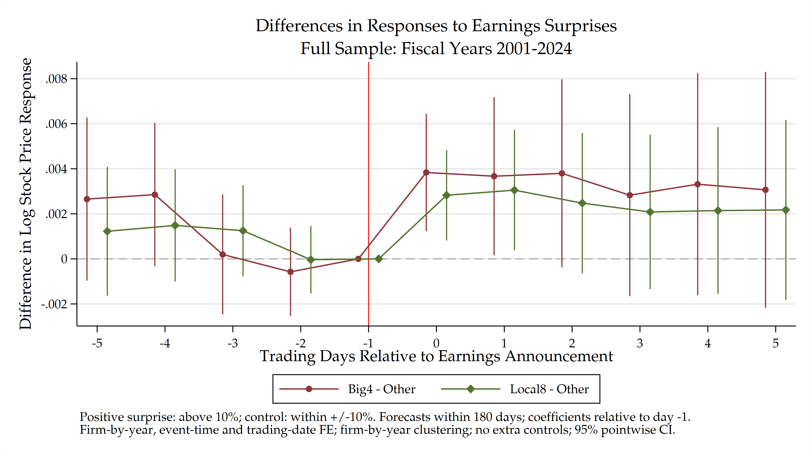
2012年前
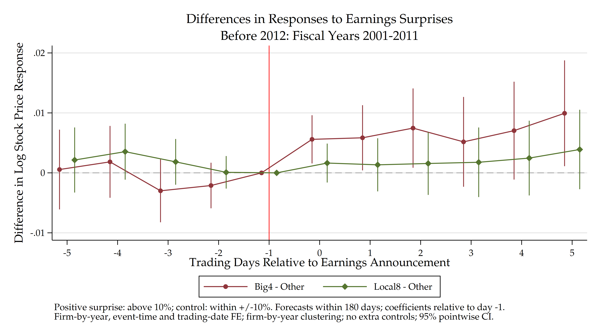
这一时间模式有两条经济解释：改制前四大的国际声誉可能带来更强的独立认证作用；同时，四大以外特别是本土八大的优质审计替代供给可能较少，使四大身份所传递的未知客户质量更稀缺、筛选信号更有价值；现有分期证据用于连接这两条假说，尚未分别识别声誉和筛选的贡献，制度背景与机制说明见2012前后机制。
把公告初期与后续PEAD连起来。 我们希望表达的是“反应速度不同”：四大客户的好消息在公告最初几天被更快地计入价格，而非四大客户可能需要更多时间消化，并非市场完全不接受非四大的超预期财报；这与后文PEAD中四大相对非四大约+40至+60日的较低累计收益相一致，也为较早反应、较少后续调整提供线索。
短期与PEAD使用不同有效样本，且PEAD累计收益包含公告初期；两者共同支持反应速度的解释，尚未直接检验最终价格是否追平。
1.3.2 共同分位数组：完整事件路径
沿用 式 4，只将\(T_{if}\)改为\(\mathbf{1}\{S_{if}>P75\}\)，并在\(\mathcal S\)中保留\(S_{if}\geq P25\)；固定效应、聚类与系数差定义保持一致。
共同分位点从全时期30,064个完整候选年报事件一次计算：P25为−15.3014%，P75为5.9474%。正向组为全样本top25%（\(S>P75\)），中性组为中间50%（\(P25\leq S\leq P75\)），最低25%排除。全样本与2012年前、二组与三组均沿用这两个固定门槛；不按组别、时期或滚动窗口重新计算分位点。因此，这一设计统一分组界限，但不强制每组正向事件占比相同，也不消除正向组内部惊喜大小的差异。
全样本
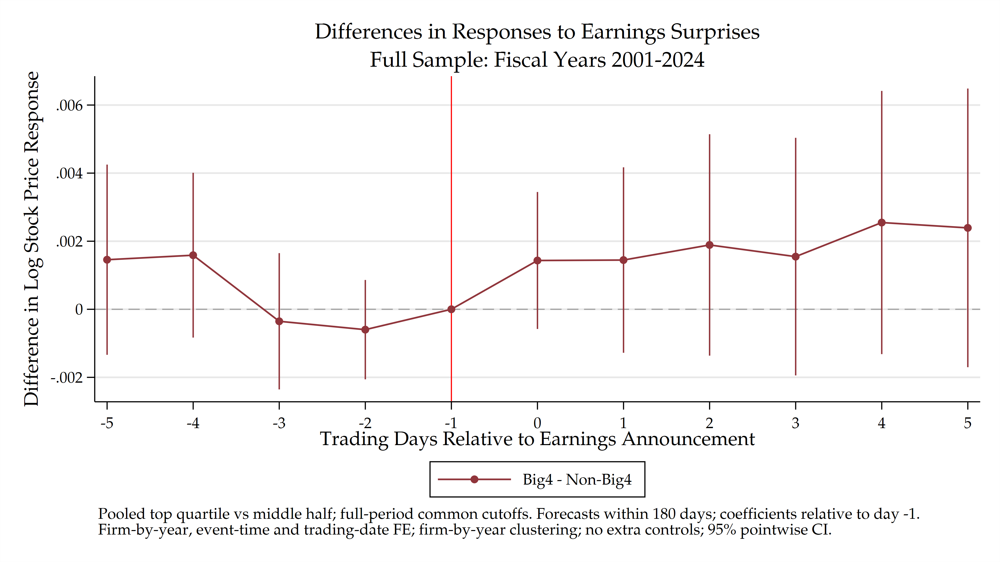
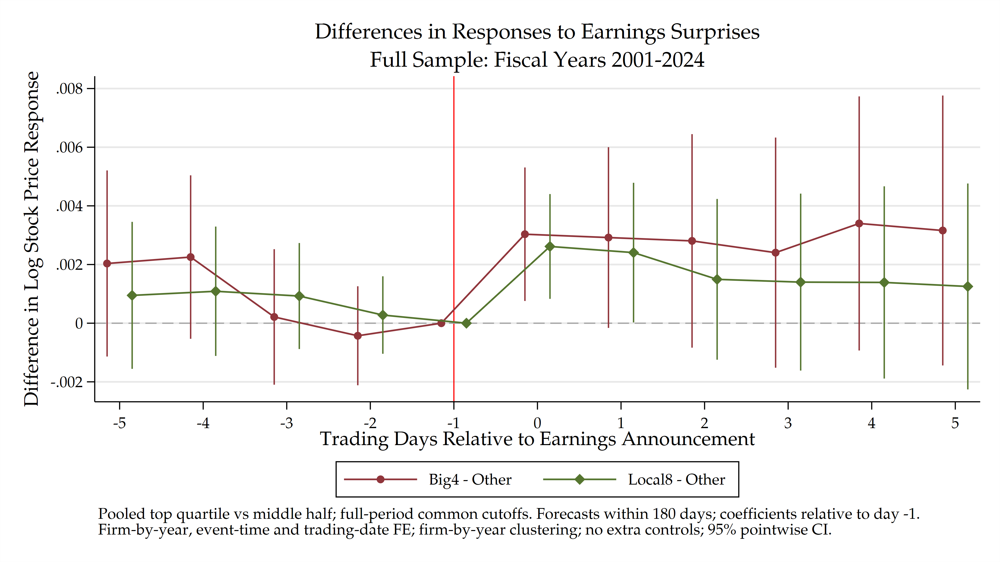
2012年前
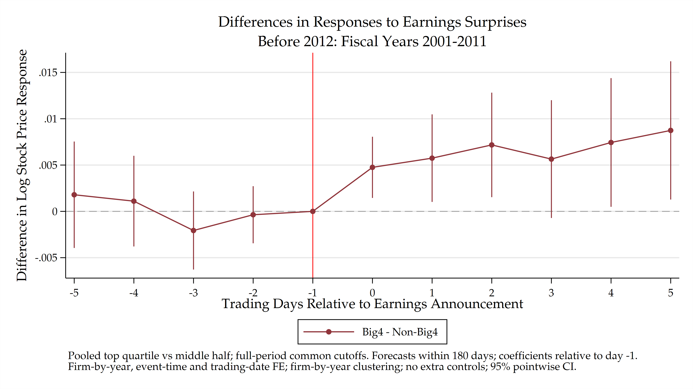
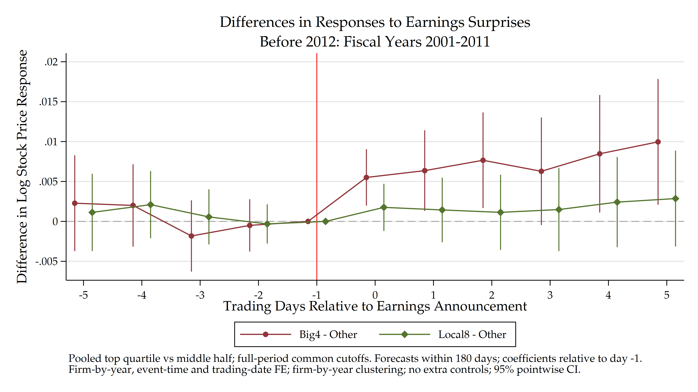
1.3.3 消息门槛扫描：全样本与2012年前
对每个\(c\)分别估计 式 4，令\(T_{if}(c)=\mathbf{1}\{S_{if}>c\}\)，样本限定为\(S_{if}\geq-c\)。因此扫描图画的是\(\Delta_k(c)\)；每个\(c\)都重新拟合，不是从一条连续回归曲线上取点。全样本与2012年前不另写方程。
横轴为固定surprise比率门槛 5%—25%。每个门槛\(c\)重新定义正向组\(S>c\)和中性组\(-c\leq S\leq c\)，分别展示第0、+1、+2和+5日相对−1日的组间反应差值。右轴为各组实际回归样本中“正向／（正向＋中性）”的比例，不是惊喜密度。每个点的样本随门槛改变；它不等于连续surprise模型在该数值处的边际效应。
全样本
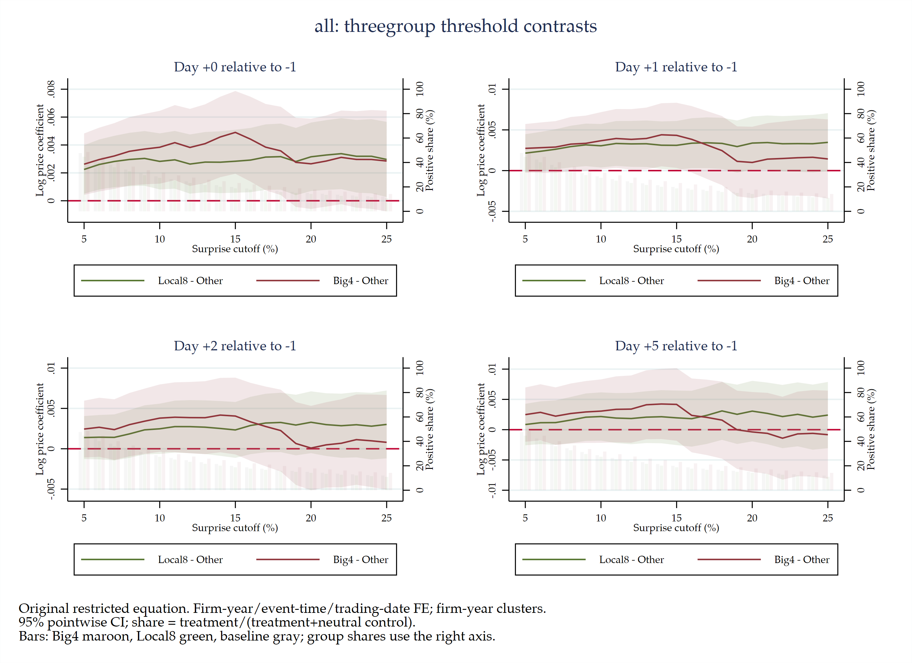
2012年前
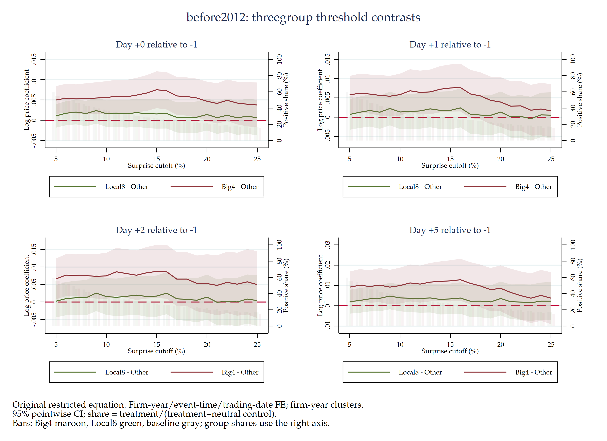
提高门槛会减少正向组，并将部分中等正向消息纳入中性组。因此扫描同时反映消息幅度、样本构成与估计精度的变化。
2012前后：声誉与优质审计稀缺的两条机制假说
这一时间模式对应两条机制：改制前四大的国际声誉可能提供更强的独立认证；非四大优质审计替代供给较少时，四大筛选所传递的未知客户质量信息可能更有价值。

市场结构背景。 蓝色、绿色、红色分别为四大、本土八大与Other按报告数量计算的年度份额。本土八大在2012年前后覆盖更多上市客户，提供了非四大大型事务所供给扩展的背景；份额本身衡量客户覆盖，审计质量另由失败与盈余指标衡量。
| 机制假说 | 可对应的已有结果 | 尚不能由这些结果直接推出什么 |
|---|---|---|
| 改制前四大声誉认证较强 | 2012前后好消息路径、滚动反应差、三组审计师比较 | 分期市场反应没有独立分离声誉与客户构成 |
| 改制前非四大优质审计较稀缺，四大筛选信号更强 | 四大／八大／Other比较、费用与市场结构、质量差异 | 四大差值缩小不等于八大质量已追上；尚未直接量化优质审计供给或市场未知信息 |
2012作为既定分期边界有制度背景：财政部本土化转制方案自2012年5月10日起施行；财政部进程说明记载四家在2012年7月至2013年3月相继转制。因此既有“2001—2011／2012—2024”是财年分组，不是四家同日在2012年被随机处理。本土大型所也有此前转制与发展过程，现有时间证据不将所有变化归因于单一制度日。
门槛路径与滚动结果支持早期差异较强的时间模式；连续ERC分期没有呈现同样统一的结果。2012分期用于讨论机制，识别对象是前后市场反应差异，而非转制政策的因果效应。
1.3.4 时间变化：10%门槛的7年滚动结果
仍使用 式 4，在中心财年\(m\)对应的\(\mathcal S_m=\{(i,f,t):m-3\leq f\leq m+3\}\)内单独估计，令\(T_{if}=\mathbf{1}\{S_{if}>0.10\}\)并保留\(S_{if}\geq-0.10\)。横轴各点为不同\(\mathcal S_m\)的\(\Delta_k(m)\)；它们不是一条含“窗口年份交互项”的合并回归。
沿用正向惊喜超过10%、中性惊喜在±10%内的分组。横轴为7年窗口的中心财年，每次向前移动一年，例如中心2008对应2005—2011财年。仅展示完整窗口：中心2004—2020；中心2003需要2000年数据，未纳入。各图分别显示第0、+1、+2、+3日相对−1日的差值；纵轴为对数股价的系数差。
四大−非四大
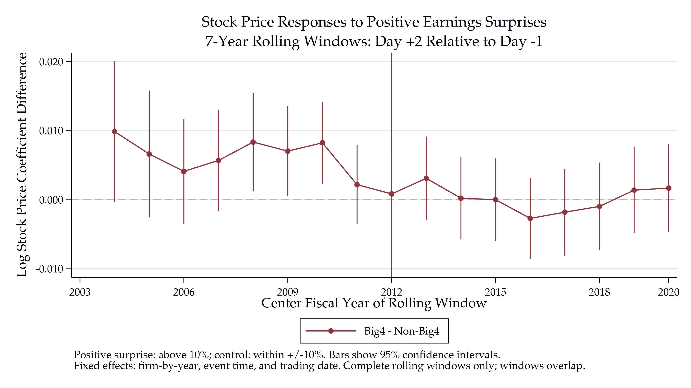
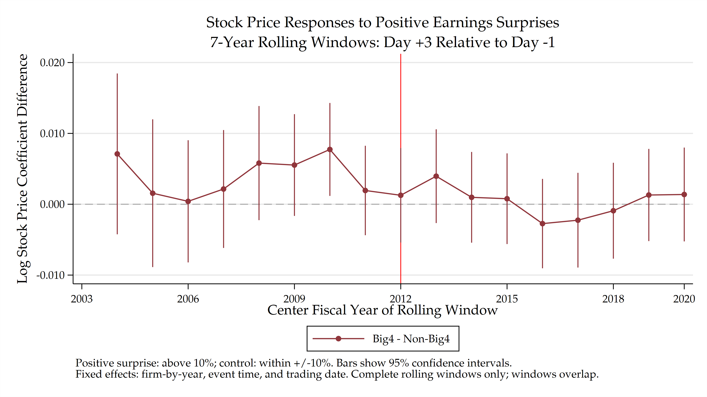
四大−Other、八大−Other
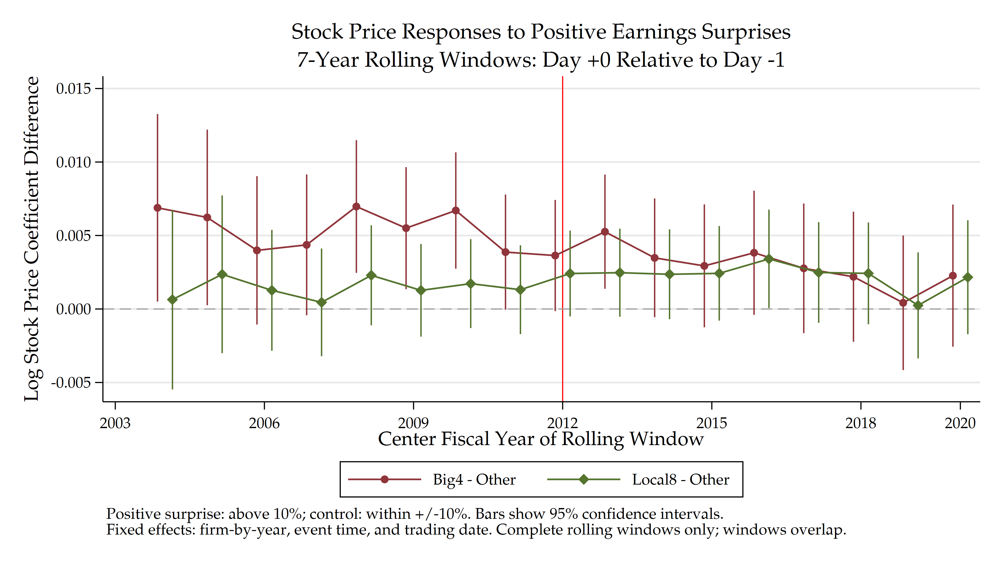
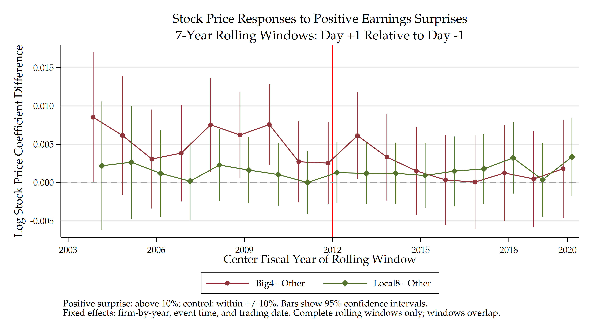
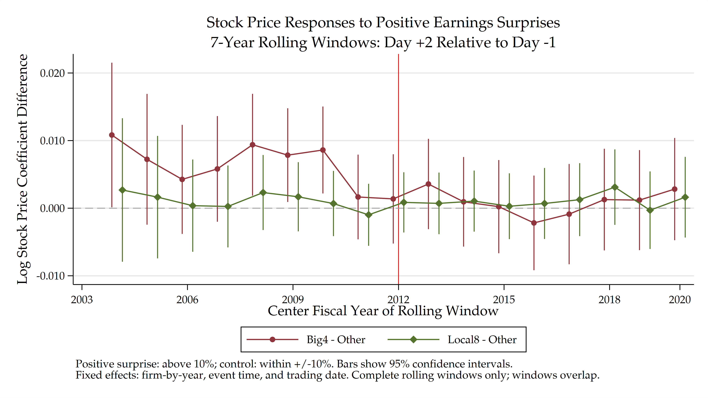
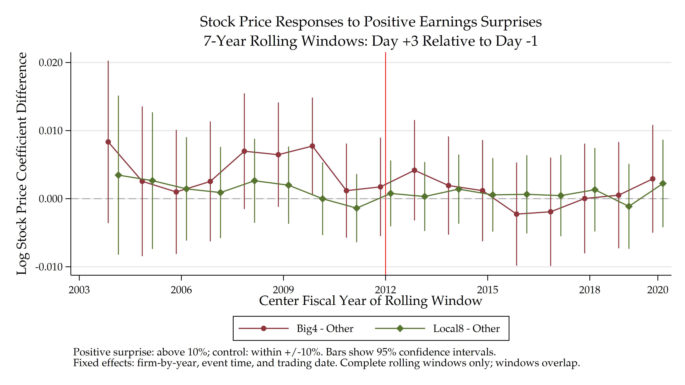
各窗口正向与中性年报数量；3年和5年结果位置
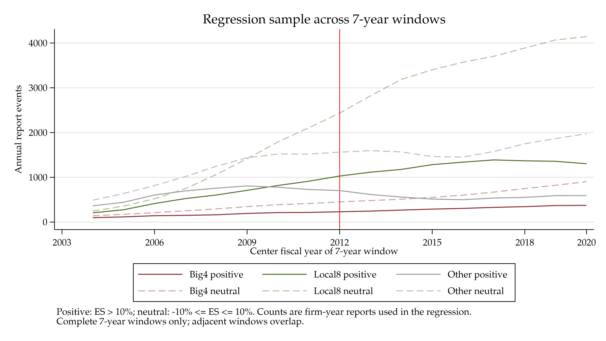
3年和5年窗口见补充材料。相邻滚动窗口包含重复财年，图中时间变化反映一系列重叠样本的估计。
1.3.5 时间变化：共同分位数组的7年滚动结果
同样在\(\mathcal S_m\)内估计 式 4，但使用固定全时期分位点\(T_{if}=\mathbf{1}\{S_{if}>P75\}\)、\(S_{if}\geq P25\)。只改变分组和样本，不增加另一套回归方程。
改用上述全时期共同top25%对中间50%分组，固定P25与P75。横轴为7年窗口的中心财年，每次向前移动一年，例如中心2008对应2005—2011财年。仅展示完整窗口：中心2004—2020；中心2003需要2000年数据，未纳入。各图分别显示第0、+1、+2、+3日相对−1日的差值；纵轴为对数股价的系数差。
四大−非四大
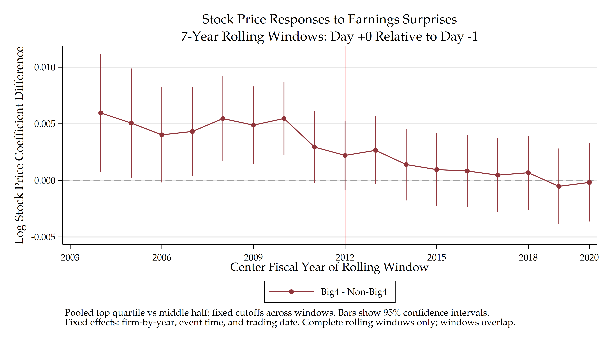
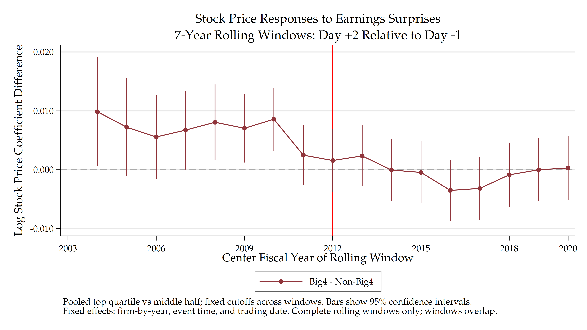
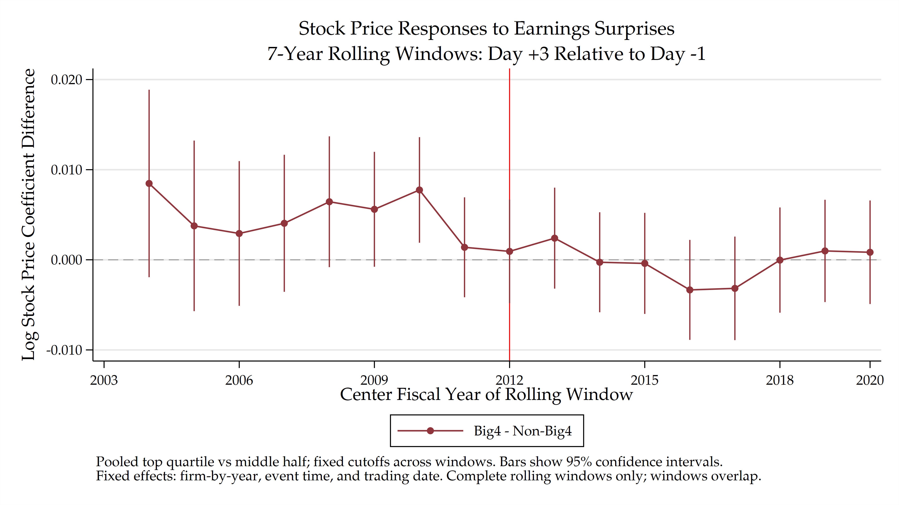
四大−Other、八大−Other
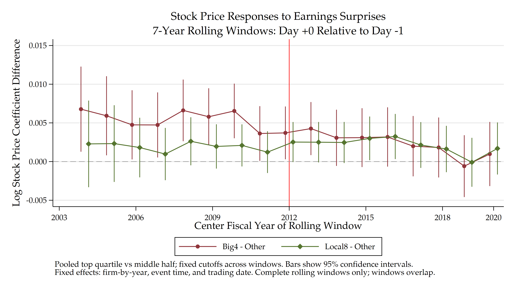
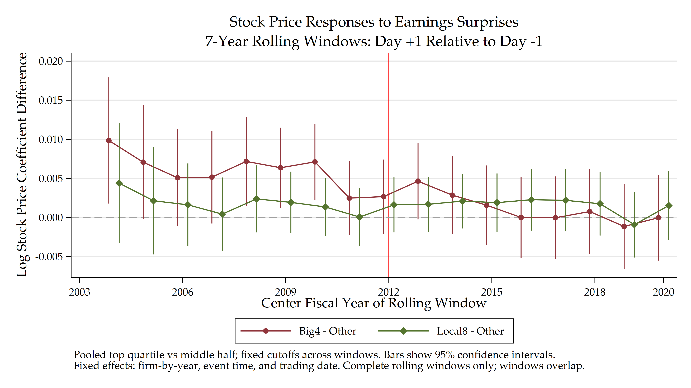
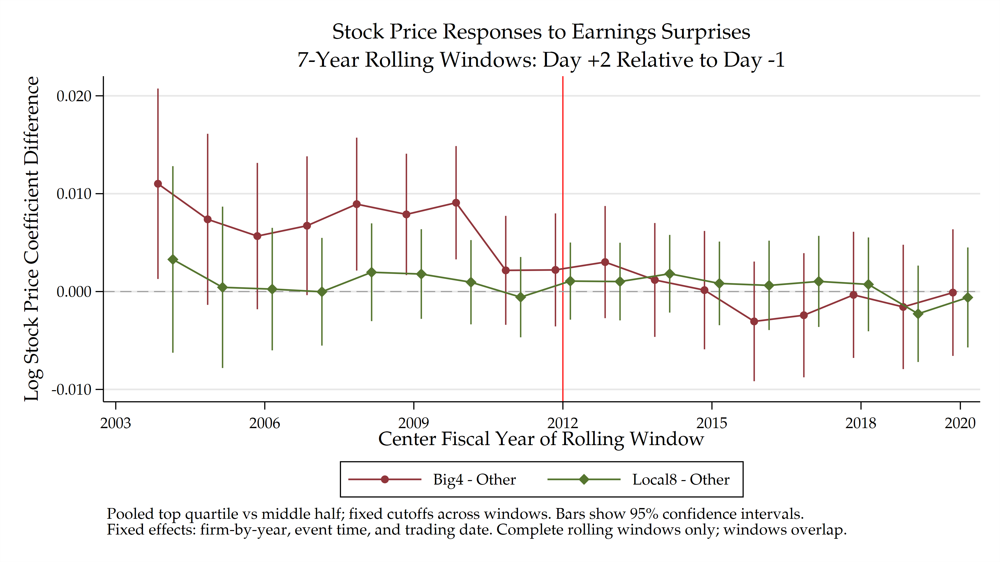
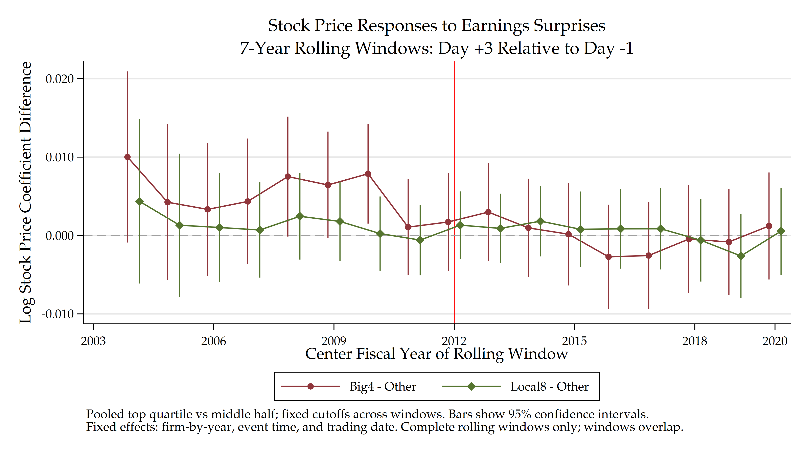
各窗口正向与中性年报数量；3年和5年结果位置
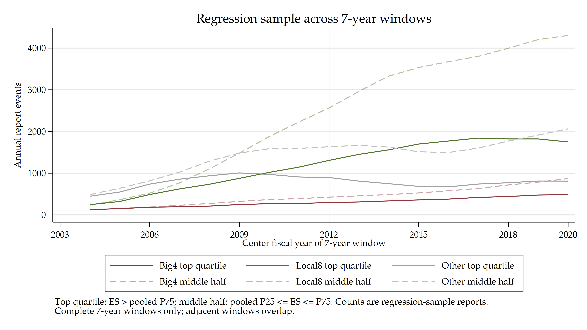
3年和5年窗口见补充材料。相邻滚动窗口包含重复财年，图中时间变化反映一系列重叠样本的估计。
结果含义。 早期部分窗口四大−非四大的反应差较强，后期减弱；三组比较分别展示四大−Other及八大−Other，帮助观察非四大构成变化。部分窗口存在公告前差异，完整路径因此同时展示事前系数。
补充检验：连续消息、消息可比性与年度CAR曲线（1.3.6—1.3.8）
1.3.6 连续消息检验
连续消息模型。 以下三组模型以Other为参照，记\(\mathcal H=\{Local8,Big4\}\)，\(x_{if}=S_{if}/0.10\)，\(F_{ift}=\text{firm × year FE}+\text{event time FE}+\text{trading date FE}\)。线性与分段线性回归统一写为：
\[ Y_{ift}=F_{ift}+\sum_{k\in\mathcal K}D^k_{ift} \left[ \sum_{g\in\mathcal H}a_{gk}A^g_{if} +\sum_{j=1}^{J}\left(b_{jk}+\sum_{g\in\mathcal H}c_{gjk}A^g_{if}\right)B_j(x_{if}) \right]+u_{ift}. \tag{5}\]
线性模型取\(J=1\)、\(B_1(x)=x\)；分段线性模型取\(J=4\)，\(B_1(x)=x\)，\(B_2(x)=(x-q_{25})_+\)、\(B_3(x)=(x-q_{50})_+\)、\(B_4(x)=(x-q_{75})_+\)，其中\((z)_+=\max(z,0)\)，\(q\)为全样本\(x\)的共同分位点。分段线性只是扩展消息基函数，沿用同一方程。\(Y\)分别为log price或下述累计市场调整CAR的百分点值；本小节已有表图报告后者。均按公司×财年聚类。
\(c_{g1k}\)是消息增加10个百分点的斜率差；固定消息\(s\)的水平差为\(a_{gk}+\sum_j c_{gjk}B_j(s/0.10)\)，包含截距和斜率，不等于ERC。
连续消息与审计师身份的交互对应 Teoh 与 Wong（1993）的 ERC 比较形式；消息分母、窗口和控制不同，斜率与水平差分别解释。
样本与单位。 线性与样条共用30,064份年报事件、330,646条日度观测，吸收公司×财年、事件日及实际交易日期FE，按公司×财年聚类，无额外控制。Y为从−5日起累计的市场调整收益，以百分点计、相对−1日解释；消息变量为比率惊喜S除以0.10。
四大−Other的线性斜率在公告日为0.0084075个百分点（SE=0.003718，CI=[0.001120,0.015695]，p=0.02375），+1为0.0112325（SE=0.005484，p=0.04056），+5为0.000157（p=0.987）。在固定S=0.10处，线性总水平差公告日为0.186834（SE=0.069182，p=0.006925），+1为0.212563（p=0.01945），+5为0.242856（p=0.07762）。截距与斜率共同组成固定水平差，不能称其为ERC斜率。
样条固定S=0.10的四大水平差公告日0.343981（SE=0.109843，p=0.001740），+1为0.378394（p=0.01133），+5仍为0.559373（SE=0.221490，CI=[0.125242,0.993503]，p=0.01156）。较远期结果随规格变化。本土八大的线性斜率证据较弱，样条固定S公告日和+1水平差为正且显著；全表同时保留这些差异。
线性CAR四大前期斜率联合检验p=0.156、全时期斜率联合p=0.024；样条前期联合p=0.087、全时期p<0.001。样条存在10%水平的事前差异；这些结果仍为条件相关。


1.3.7 其他规格与消息可比性
二组完整交互模型。 记\(Big4_{if}=\mathbf{1}\{Big4\}\)、\(T_{if}=\mathbf{1}\{S_{if}>0.10\}\)，保留\(S_{if}\geq-0.10\)：
\[ Y_{ift}=F_{ift}+\sum_{k\in\mathcal K}D^k_{ift} \left[\theta_kT_{if}+\eta_kBig4_{if}+\delta_kT_{if}Big4_{if}\right]+u_{ift}. \tag{6}\]
按公司×财年聚类，\(Y\)分别为log price或累计市场调整CAR的百分点值。\(\eta_k\)允许四大与非四大中性组有不同事件路径；\(\delta_k\)才是两组各自正向对中性反应差的差值。它不能直接替代 式 4 的受限系数差。
控制变量比较。 在 式 4 中加入控制变量与事件日的交互：
\[ \log P_{ift}=F_{ift} +\sum_{k\in\mathcal K}\sum_{g\in\mathcal G}\beta_{gk}A^g_{if}T_{if}D^k_{ift} +\sum_{k\in\mathcal K}D^k_{ift}\,\boldsymbol\gamma_k'\mathbf X_{if} +u_{ift}. \tag{7}\]
\(\mathbf X_{if}\)为对数市值、市净率及对数预测数量；有／无控制使用同一有效样本，按公司×财年聚类，无控制列令\(\boldsymbol\gamma_k=0\)。
原三组门槛模型的四大−Other公告日差为0.003837（SE=0.001331，p=0.004，对数价格单位）。完整二组模型合并八大与Other，并允许中性消息组的路径不同；公告日差为0.000903（SE=0.001458，p=0.536），CAR差为0.093442个百分点（SE=0.146302，p=0.523）。两者的参照组和规格不同。
要求预测DeclareDate严格在年报公告前，随后重新选择每机构最新合格预测，四大−Other公告日差仍为0.003606（SE=0.001338，p=0.007）。再按已确认四变量1%—99%共同区间筛选，公告日差0.002905（SE=0.001653，p=0.079），+1和+5不显著；共同样本加入控制后公告日0.001510（SE=0.001671，p=0.366）。相应事件数20,336→20,221→16,115。变化同时包含比较对象和精度变化，不能作为selection份额。
共同支持样本无控制的本土八大−Other公告日0.002295（p=0.049），加controls后0.001990（p=0.088）；四大−本土八大仍不显著。筛后市值和覆盖并未完全平衡。连续消息与门槛比较回答不同问题，结果分别保留。
1.3.8 年度CAR曲线
一行一事件的年度CAR模型。 对窗口\([-1,d]\)，\(d\in\{0,1,2,3\}\)，分别拟合：
\[ CAR_{if}^{[-1,d]}=\text{firm FE}+\text{year FE} +\sum_{g\in\mathcal H}\zeta_g^{(d)}A^g_{if} +\sum_{j=1}^{4}\left[\pi_j^{(d)}+\sum_{g\in\mathcal H}\omega_{gj}^{(d)}A^g_{if}\right]\widetilde B_j(S_{if}) +e_{if}^{(d)}. \tag{8}\]
\(\text{firm FE}\)、\(\text{year FE}\)为公司与财年固定效应，Other为参照，\(\widetilde B_j\)是基于原始surprise及共同P25/P50/P75节点的四个分段线性基函数。\(CAR_{if}^{[-1,d]}=\sum_{k=-1}^{d}(r_{ifk}-r_{mk})\)，使用已确认的市场调整收益、小数单位。四个收益窗口共用这一方程，分别估计系数，不重复列式。图中三条条件预测曲线将吸收的固定效应设为共同估计样本均值；标准误按公司×财年聚类，一行一公司财年时这一聚类不覆盖同一公司的跨年相关性。
年度四窗口CAR图使用29,397公司年度、4,181公司、24财年，吸收公司和财年FE，按公司×财年聚类，纵轴为小数收益而非百分点。它展示一行一事件的窗口收益，区别于前面的日度累计路径；图中为95%逐点置信区间。

1.4 ERC：盈利意外与公告期 CAR 的斜率
ERC（盈利反应系数）衡量公告期市场调整收益对盈利意外的敏感度：同样的盈利消息对应更大的收益反应，意味着市场给予该消息更高权重。Teoh、Wong（1993）使用ERC比较大型与其他事务所客户的盈利可信度。本节比较四大与非四大客户的消息反应斜率。
变量与样本。 \(UE=(EPS_{used}-EPS_{forecast})/P_{-1}\)，预测取公告前180天中位数，\(P_{-1}\)为公告前一交易日收盘价；实际EPS以FAR为主，缺失时补算，价格不以年末值补缺。Y为市场调整CAR的小数收益，分别使用[−1,+1]、[−2,+2]、[−3,+3]完整交易日窗口，不缩尾。
回归方程。 非四大为基准，主规格为：
\[ CAR_{it}=\text{firm FE}+\text{year FE}+\delta Big4_{it}+\beta UE_{it} +\theta(Big4_{it}\times UE_{it})+\gamma'X_{it}+\varepsilon_{it}. \tag{9}\]
\(X\)为市值、MB和预测覆盖的主项，标准误按公司聚类；另外报告无FE／无控制、仅firm FE和year FE两套规格，各用其有效样本。非四大的ERC为\(\beta\)，四大为\(\beta+\theta\)，表中“四大−非四大”就是斜率差\(\theta\)；非四大包括本土八大和其他事务所；三组模型则分别比较四大−Other、八大−Other。
主要结果。 全样本CAR[−1,+1]中，非四大ERC为0.041339、四大为0.154483，差值0.113144（p=0.0116）；[−2,+2]及[−3,+3]的差值为0.156270和0.128447，均达到5%显著水平。UE增加0.01时，最短窗口交互项对应额外收益0.00113144。市场对四大客户盈利消息的反应更敏感，支持信息可信度的解释；服务、声誉与客户选择的来源由后续检验进一步考察。
有效样本。 主规格要求实际与预测EPS、公告前价格、完整CAR窗口和三项控制均有效，再删除固定效应单例观测。三个窗口的实际N依次为30,008、29,805、29,657个公司年度，标准误按公司聚类。
全样本（2001—2024财年）
补充：ERC的2012年前后结果
2012年前（2001—2011财年）
2012年起（2012—2024财年）
1.5 长窗口 PEAD：盈利消息的后续价格反应
PEAD是盈利公告后价格继续沿消息方向调整的现象，用于观察市场消化盈利信息的速度。Ferguson、Matolcsy（2004）使用PEAD研究审计质量与后续价格反应。本节展示四大−非四大的累计市场调整收益路径，包含公告初期收益；好消息后的长期收益差为负，与四大客户PEAD较低的解释一致。
与公告初期反应的联系。 短期路径与较低PEAD共同指向消息消化速度的差异：四大客户在最初几天反应较充分，非四大客户在后续交易日继续反应。这一解释连接两组价格事实；各自有效样本与累计窗口如下。
收益、样本与固定效应
当前正式数据覆盖财年2001—2024。盈利惊喜定义为\(S_i=(EPS_i-\widehat{EPS}_{i,180})/|\widehat{EPS}_{i,180}|\)，预测为公告前180天券商预测中位数。正向组为\(S_i>0.10\)，中性组为\(-0.10\leq S_i\leq0.10\)。只保留−5至+60共66个交易日的市场调整收益全部有效的年报事件，以免跨缺失收益累计。
日市场调整收益为\(AR_{ij}=r_{ij}-r_{mj}\)，市场基准沿用前一交易日流通市值加权收益；个股收益使用既有含现金红利再投资的收益口径。图中因变量为
\[ C_{ik}=\sum_{j=-5}^{k}AR_{ij}-\sum_{j=-5}^{-1}AR_{ij},\qquad C_{i,-1}=0. \]
因此，\(k\geq0\)时，\(C_{ik}=\sum_{j=0}^{k}AR_{ij}\)。它是简单日收益相加，不是复利累计；−1日归零只是确定基准，并没有排除公告初期的收益。0.01表示1个百分点。
令\(Big4_i=1\)表示四大，\(T_i=1\{S_i>0.10\}\)，\(D_{jk}=1\{j=k\}\)。两套模型均吸收公司×财年、事件日、实际交易日期固定效应，按公司聚类，无额外控制变量。图中的阴影为95%逐点置信区间，没有调整整个路径的多重检验。
A：好消息内部的四大−非四大路径差
只保留\(S_i>0.10\)，估计
\[ C_{ij}=\text{firm × year FE}+\text{event time FE}+\text{trading date FE} +\sum_{k\ne-1}\theta_k Big4_iD_{jk}+\varepsilon_{ij}. \]
图画\(\theta_k\)，即好消息样本中四大相对非四大的累计路径差。实际样本为3,811份年报，其中四大602份、非四大3,209份，涉及1,706家公司、251,280条日度观测。该比较没有中性组，也没有控制正向组内部的惊喜幅度。
B：正向相对中性的组间反应差
保留正向及中性组，沿用原pooled交互项结构，估计
\[ C_{ij}=\text{firm × year FE}+\text{event time FE}+\text{trading date FE} +\sum_{k\ne-1}\left[\beta_{B,k}Big4_iT_iD_{jk} +\beta_{N,k}(1-Big4_i)T_iD_{jk}\right]+\varepsilon_{ij}. \]
图画\(\beta_{B,k}-\beta_{N,k}\)，对应“[四大：正向−中性]−[非四大：正向−中性]”的模型内反应差。实际样本为14,918份年报、4,019家公司、984,432条日度观测。这一规格没有另加\(Big4_iD_{jk}\)项，因而没有单独估计两类事务所中性组的事件日路径；上述解释依赖该pooled结构，不应视为完全放开所有组别路径的饱和比较。
补充：选定事件日结果与文献解释
结果与解释
*** p<0.01，** p<0.05，* p<0.10。第+60日，A差值为−0.020188，B为−0.020489，分别约为−2.02和−2.05个百分点。两套差值在公告初期没有显著差异，较明显的负差值集中在后段；首次5%逐点显著分别出现在+33及+36日，不能将其当作估计得到的结构断点。公告前−5至−2日联合检验p值分别为0.4591和0.4885，事前系数联合检验未发现显著差异。
在超过10%的正向盈利惊喜样本中，四大客户相对非四大的长期累计市场调整收益较低；以中性惊喜为对照的组间反应差也得到相近的负差值。这提供了与四大客户PEAD较低相一致的证据。负差值表示相对非四大较低，不表示四大客户自身累计收益为负。
文献依据
Andrew Ferguson与Zoltan Matolcsy（2004）的《Audit quality and post earnings announcement drift》正式发表于 Asia-Pacific Journal of Accounting & Economics 11(2):121–137。作者的理论链条是：好消息增加信息不确定性，部分抵消利好，导致初始反应不足；随着不确定性消退，价格继续反映消息，形成漂移。高质量审计提高盈利可信度、降低初始不确定性，因此大型事务所客户的PEAD较低。 这是原文明确提出的H1。Ferguson、Matolcsy（2004）、Ferguson、Matolcsy（2004）。
结果表明：四大客户在较大正向盈利惊喜后的长期累计市场调整收益较低。这与Ferguson、Matolcsy（2004）提出的高质量审计降低信息不确定性、减轻初始反应不足的解释一致。
1.6 分析师：共同信息依赖与预测修正
分析师预测反映专业投资者如何使用财报更新盈利预期。本节以\(\Delta\rho\)衡量共同信息权重的变化，以\(\Delta h\)和\(\Delta s\)衡量共同及私人信息精度的变化，并考察预测修正与误差。He、Sidhu、Taylor（2019）使用前三项信息指标研究审计质量；Behn、Choi、Kang（2008）使用预测准确度与分歧。这些指标衡量信息使用和预期调整，补充股价反应证据。
共同信息三个Y及方程。 公告前后固定同一券商集合、预测同一下一财年的EPS；\(n\)为配对券商数。令\(A\)为该目标财年的实际EPS、\(\bar f_q\)为平均预测、\(v_q\)为预测样本方差，\(q\in\{pre,post\}\)。现有构造先定义
\[ D_q=v_q/|A|,\quad SE_q=(\bar f_q-A)^2/|A|,\quad c_q=SE_q-D_q/n, \] \[ \rho_q=\frac{c_q}{c_q+D_q},\quad h_q=\frac{c_q}{(c_q+D_q)^2},\quad s_q=\frac{D_q}{(c_q+D_q)^2}. \tag{10}\]
Y分别为\(\Delta\rho\)、\(\Delta h\)、\(\Delta s\)，均为post−pre；\(\rho\)为共同信息相对权重，\(h\)和\(s\)分别为共同／私人信息精度。这里的缩放是D和SE各除以\(|A|\)，不是先缩放EPS再平方。BKLS有效样本要求\(n\ge2\)、\(A>0\)、前后精度有限且共同精度非负；这也是准确度指标保留的原有效样本。
\[ \Delta Info^m_{it}=a_m+b_m Big4_{it}+X'_{it}\gamma_m+e^m_{it}. \tag{11}\]
回归不含固定效应，标准误按公司聚类。三项控制为绝对盈利惊喜、MB和配对券商数，四项另加市值。完整信息样本为7,990个公司年度，控制共同样本为7,862个；大市值子样本为4,439及4,367个。
本节比较四大−非四大。三个信息指标使用同券商公告前后最近的预测，目标为同一下一财年EPS，不限制前后天数；样本要求下一财年实际EPS为正、至少两家配对券商及有效的有限信息精度。
主表并列无控制、三项控制和四项控制。三项控制为公告前60天绝对盈利惊喜、MB及配对券商数，第四项为市值对数。三项与四项控制使用同一共同样本；行业×财年排序及市值前25%结果置于补充部分。
大市值子样本先在现有全市场A股年度正总市值中排名，再匹配信息指标样本；市值取该财年最后可用交易日，不要求有分析师预测覆盖。以\((\text{平均并列市值名次}-0.5)/\text{当年有效公司数}\geq0.75\)定义前25%，不是在信息指标样本内部取前25%。匹配后保留4,439个公司年，其中四大961条，占完整样本四大公司年的91.52%；完整控制样本为4,367条，其中四大945条。
排序版将三个Y与四项控制都转换为行业×财年内分位秩，定义为\((\text{平均并列名次}-0.5)/\text{该变量组内非缺失数}\)。排序基准是完整7,990条有效信息指标样本，大市值子样本不重新排序。排序系数表示相对秩位置差异，不能与原值系数直接比较量级。
完整信息指标样本
加入市值等客户特征控制后，共同信息权重及信息精度没有稳定的四大优势。
补充：排序结果、大市值子样本及控制变量比较
全市场当年市值前25%子样本
表列双侧p值，N为实际回归公司年数。*** p<0.01，** p<0.05，* p<0.10；按未舍入p值打星，未调整多重检验。
完整样本中，Δρ原值从无控制的0.02500（p=0.0087）降至三项控制的0.01676（p=0.0984），加入市值后为−0.00452（p=0.6849）。Δρ排序结果依次为0.01853（p=0.0475）、0.01265（p=0.2000）和0.00920（p=0.3610）。Δh排序在无控制时显著为正，三项控制下已不显著；Δs原值无控制时显著为正，加控制后不显著。全市场市值前25%子样本中，三个Y各规格均未达到5%显著性，仅Δh排序无控制在10%水平显著。
补充：市值与其他控制的分解
固定同一7,862条完整控制样本，Δρ原值无控制为0.02277（p=0.0190），仅加入市值后为−0.00156（p=0.8870）；仅加入绝对盈利惊喜后为0.02279（p=0.0189），几乎没有变化。市值使原值Δρ系数下降最明显，且这一比较没有混入样本数量变化；
加入客户特征控制后，共同信息优势没有稳定保留。
完整结果、既有分期与FE补充
下载三列表精确结果、样本口径、旁支模型核验记录、Δρ原值固定样本逐项控制结果。
既有两套无FE分期结果、coverage分析及FE补充结果保留，均只包含四大−非四大。它们不是本轮新增的市值前25%分期或coverage回归，不能混用规格。
补充：预测修正与准确度
同券商对同一下一财年EPS预测，取公告前最近及公告后最早可用预测，不限制前后天数。同一最近日期预测值冲突的配对不纳入。
令\(f_{j,pre}\)、\(f_{j,post}\)为第\(j\)家配对券商预测，\(r_j=f_{j,post}-f_{j,pre}\)，\(A\)为目标财年实际EPS。四个Y为
\[ \begin{aligned} MeanRevision&=n^{-1}\sum_j r_j,\\ MeanAbsRevision&=n^{-1}\sum_j|r_j|,\\ FractionRevised&=n^{-1}\sum_j\mathbf1\{|r_j|>10^{-10}\},\\ \Delta AbsError&=|\bar f_{post}-A|-|\bar f_{pre}-A|. \end{aligned} \tag{12}\]
前三项分别是有符号修正、绝对修正幅度和修正比例；修正原值以EPS元／股计，比例为0—1。准确度是平均预测的绝对误差变化，不是平均每家券商绝对误差的变化；负值才表示误差改善。这些Y不按股价或实际EPS再缩放。
回归仍为 式 11，替换四个Y：无FE、公司聚类、不缩尾。每张表四列依次为各指标可用样本无控制、四项控制共同样本无控制、共同样本三项控制、共同样本四项控制。前两列分开，避免把样本变化算作控制效果。
样本限制。 三个修正Y沿用\(n\ge2\)且目标实际EPS非负或尚未观察到的原样本；准确度沿用BKLS有效样本，不能将两者样本视为相同。完整样本修正Y无控制N=22,427、控制共同N=13,719；准确度N=7,990／7,862。全市场市值前25%中，两组分别为10,101／6,787和4,439／4,367。修正样本1,935条缺市场排名，保留在全样本，不能进入前25%子样本。排序按每个指标完整有效样本在行业×财年计算，子样本不重排。
四项控制的原值有符号修正在全样本为0.041274（p=0.0092）、前25%为0.040738（p=0.0282）；绝对修正幅度分别−0.064203（p=0.0107）、−0.061738（p=0.0351）。但绝对修正幅度排序版不显著；准确度变化所有规格均未达到5%显著性。
完整来源：结果与说明 · 结果CSV · 独立核验。
2. 审计服务的 treatment effect：同一客户是否改善？
主线是Fin重述与实际失败；其他质量指标、费用和准实验用于判断改善的范围与解释。
平均DID、动态DID与样本。 换入者与全观察期始终非四大客户比较，换出者与始终四大客户比较。批次c为换所财年，处理指示为\(G_{ic}\)，\(Post_{ct}=1\{t\ge c\}\)；Y为相应口径的重述、违规或未预警综合失败指示变量。平均方程为
\[ Y_{ict}=\text{firm × cohort FE}+\text{cohort × industry × year FE} +\beta G_{ic}Post_{ct}+X'_{it}\gamma+\varepsilon_{ict}. \tag{13}\]
批次堆叠的PSM-DID吸收批次×公司、批次×行业×年份FE，按原公司聚类；未堆叠的自然样本DID用公司和行业×年份FE，不能把二者N或系数当作同一规格。\(X\)保留九项及mis_dummy。动态版将平均处理项替换为
\[ \sum_{k\ne-1}\beta_k G_{ic}\mathbf1\{t-c=k\}, \]
以−1财年为基期，报告事前联合检验。原合格进入要求此前连续三年非四大、进入起连续三年四大；扩展窗口为−4至+4、短窗口−3至+2，窗口和未来留任要求不是相同概念。取消未来留任的版本单列，不混入基准资格。
匹配步骤。 在换入前一年，以九项客户特征、mis_dummy、行业和年份预测进入四大的概率。为每个进入者选择同年概率最接近的一个非四大对照；对照可重复使用，不另限制最大匹配距离。随后固定名单及权重，在前后窗口估计DID。加权与不加权列使用同一名单，未匹配列使用完整候选对照。
其他Y的同一设计。 应计／REM沿用结果特定七项控制；审计费Y为\(\log(1+AuditFee)\)，控制规模、杠杆、亏损、ROA及mis_dummy；市值Y为log市值，控制九项加收入增长及标记。各结果沿用相应的控制变量。费用换入+0.370、换出−0.242显示价格随身份变化，不能单凭价格识别质量机制。
2.1 同一客户变化：换入与换出四大
未堆叠DID方程。 \(G_i=1\)表示相应换入或换出处理公司，\(Post_{it}\)从其换所财年起取1；Y为重述、违规或未预警综合失败指示变量：
\[ Y_{it}=\text{firm FE}+\text{industry}\times\text{year FE}+\tau(G_i\times Post_{it})+\gamma'X_{it}+\varepsilon_{it}. \]
换入回归包含204家处理公司、4,993家始终非四大对照，64,707个公司年度；换出包含117家处理、189家始终四大对照，3,664个公司年度。
换入以始终非四大客户为对照，换出以始终四大客户为对照，保留既有稳定事件要求、九项controls、公司及行业×年份FE和公司聚类。当前自然样本换入严格综合失败−2.37个百分点（SE=1.09，p=0.030），严格重述−1.09（SE=0.77，p=0.158），违规−1.58（SE=0.85，p=0.062）。中间综合失败与重述分别−8.58和−8.08，宽口径分别−9.52和−8.96；换出未出现同样清楚的对称上升。
Fin与Broad重述的负向变化较明确，换出没有呈现对称上升；下节通过匹配及动态路径进一步检查换入结果。
2.2 匹配后的客户变化：基准 PSM-DID
平均与动态方程。 在进入批次c的匹配样本中，处理组为进入四大的公司，对照为同年事前倾向最接近的非四大公司；G表示处理身份，Post从进入财年取1：
\[ Y_{ict}=\text{firm}\times\text{cohort FE}+\text{cohort}\times\text{industry}\times\text{year FE}+\tau(G_{ic}\times Post_{ct})+\gamma'X_{it}+\varepsilon_{ict}. \]
动态版将平均处理项替换为
\[ \sum_{k\ne-1}\tau_k G_{ic}\mathbf1\{t-c=k\}. \]
Y为相应定义的未预警综合失败、重述或违规；X为九项客户特征及mis_dummy，按公司聚类。匹配在进入前一年完成，每个进入者选一个同年最近对照，对照可重复使用，不设最大倾向得分距离；加权回归保留被重复使用的对照份额。下文分别说明[−4,+4]与[−3,+2]窗口的最终样本和结果。
扩展窗口：−4 至 +4 的匹配 DID
Fin口径下，换入四大后综合失败概率下降12.59个百分点（SE=3.48个百分点，95%CI=[−19.45,−5.73]个百分点，p<0.001），重述概率下降10.04个百分点（SE=2.87个百分点，95%CI=[−15.70,−4.38]个百分点，p<0.001）。Fin重述从换入当年起下降，第0、+1、+4年在5%水平显著，第+2、+3年在10%水平显著；综合失败在第0、+1、+2、+4年达到5%显著性，第+3年达到10%。Fin综合失败与重述的联合事前检验p值分别为0.943和0.938，未发现显著事前趋势。
这些回归沿用换入前一年的九项变量、mis_dummy、行业和年份进行匹配，使用既定匹配名单与权重；结果方程保留九项 controls、批次×公司及批次×行业×年份固定效应，标准误按原公司聚类。加权回归有 1,763 条堆叠观测、125 家处理公司及 107 家对照公司。Strict、Fin 和 Raw 使用同一匹配样本，主要差别是结果变量定义。 Strict 要求明确的财务数据更正并影响盈余；Fin 不要求盈余调整，并保留部分多选或分类不明确的记录。因此，Fin 的更强结果表明下降更多发生在严格口径以外的更正事件，不能把所有这类公告都等同于已确认的盈余差错。未预警指标均为事件发生且 MAO=0 的联合事件，在全部有效公司年度中估计。
以下第一张图上排是 Fin 综合失败和重述，下排是更宽的 Raw 口径；点估计与 95% 置信区间均以换所前一年为基准，纵轴为原始概率系数及置信区间。
严格口径的平均效应也显著，但逐期证据较弱。 严格综合失败概率下降6.44个百分点（p=0.0101），重述概率下降3.77个百分点（p=0.0207）；违规概率下降3.61个百分点，但不显著（p=0.1143）。严格重述仅第+4年在5%水平显著，严格综合失败仅第+4年在10%水平显著。第+4年处理组有90家公司，其中78.9%仍使用四大；较远期路径按原换入事件定义，不要求持续由四大审计。
补充：未匹配、匹配不加权，以及盈余质量的全部扩展窗口图
以下保留其余七张图，便于比较匹配、权重和指标口径。未匹配回归与匹配回归的样本不同；匹配不加权与匹配加权沿用同一名单。盈余质量八个指标的加权平均效应均未达到 5% 显著性；DD 异常应计绝对值在第 +1、+2、+4 年显著下降，属于逐期支持，未形成所有盈余指标的一致平均改善。
未匹配 DID：Fin 与 Raw 口径
未匹配 DID：Strict 口径
匹配 DID：不加权：Fin 与 Raw 口径
匹配 DID：不加权：Strict 口径
盈余质量：未匹配
盈余质量：匹配不加权
盈余质量：匹配加权
补充：短窗口估计及匹配支持
较短窗口：−3 至 +2 的平均效应与逐批次诊断
本小节使用[−3,+2]短窗口；上节动态主结果使用[−4,+4]扩展窗口。
事前匹配与前后比较可与 Jiang 等（2019）的设计对照；该文的事务所收购处理与本项目普通换入不同，本节没有采用其收购工具变量。
匹配在换入前一年进行，窗口为[−3,+2]，使用九项事前控制和mis_dummy、行业与年份，不加入失败历史。回归吸收stack×公司、stack×行业×年份FE，保留九项结果controls，按原公司聚类。最终匹配加权回归包含1,194个堆叠行、113家处理和102家对照；公司可在多个批次出现，不能把堆叠N当作唯一公司年度。
中间口径综合失败−11.85个百分点（SE=3.78，CI=[−19.30,−4.40]，p=0.002）、重述−9.11（SE=3.11，CI=[−15.24,−2.97]，p=0.004）。17次逐一剔除cohort时，两者系数均为负、95%区间均不含零。严格综合失败−5.28（SE=2.56，CI=[−10.32,−0.25]，p=0.040），但剔除2017后变为−1.44、CI=[−4.26,1.39]。严格重述、违规和宽口径的非显著区间在下表保留。
短窗口最终样本仍有可观察差异：ROA均值4.60%对3.28%，报告时滞93.64对97.57天，标准化均值差（SMD）分别为0.247、−0.211。标准化均值差以两组均值之差除以合并标准差，衡量匹配后的可比性；这些残留差异是该短窗口结果的具体限制。
2.3 排除替代解释的补充检验
排除意见指标构造的解释：实际失败与未预警失败的分解
实际财务重述本身也显著下降，为排除“未预警重述减少只是审计意见变化造成的”解释提供了证据。 我们将每个失败指标分为实际失败 \(F\)、未预警失败 \(F(1-M)\) 和已预警失败 \(FM\)，其中 \(M=1\) 表示 MAO，并单独估计 MAO 的变化。四项回归使用同一最终样本，满足 \(F=F(1-M)+FM\)，因此能够直接区分失败事件减少与意见覆盖变化。
结果方程。
\[ Y_{ict}=\text{firm}\times\text{cohort FE}+\text{cohort}\times\text{industry}\times\text{year FE}+\tau(G_{ic}\times Post_{ct})+\gamma'X^{(-Y)}_{it}+\varepsilon_{ict}. \]
\(Y\in\{F,F(1-M),FM,M\}\)，分别为实际失败、未预警失败、已预警失败及MAO。 窗口为[−4,+4]财年，\(Post\)从进入年取1，标准误按公司聚类；失败分解、留任及风险匹配回归保留完整九项控制。
原加权PSM-DID中，Fin实际重述概率下降8.01个百分点（p=0.015），未预警重述概率下降10.04个百分点（p<0.001），已预警重述概率上升2.04个百分点（p=0.095）。Fin实际综合失败概率下降9.34个百分点（p=0.019）；其未预警部分下降12.59个百分点（p<0.001），已预警部分上升3.25个百分点（p=0.035）。MAO概率下降2.03个百分点（p=0.570），不显著。这组结果将改善证据从未预警失败扩展到实际失败，并显示实际失败减少与意见覆盖变化同时存在。Strict实际重述概率下降3.73个百分点（p=0.023）；Raw实际重述和违规的匹配平均变化未达到5%显著水平。
未匹配Fin实际重述概率下降6.35个百分点（p<0.001），与未预警重述下降6.24个百分点（p<0.001）相近；匹配不加权的实际重述概率下降8.62个百分点（p=0.008）。三种规格均支持Fin实际重述下降。以下表格保留七个失败结果及其分解。完整比较：未匹配、匹配不加权与失败／意见四格发生率
四格表为最终回归样本中的描述率，前期为 −4 至 −1，后期为 0 至 +4；加权规格使用匹配权重。描述率没有净化固定效应，因此与调整后的 DID 系数分别解读。
排除未来留任筛选的解释：保留后来退出四大的进入者
取消未来留任要求后，Fin 与 Raw 重述仍显著下降，为排除“结果仅来自选择未来继续留在四大的客户”提供了证据。 原事件资格要求换入后连续留在四大；这里仅要求进入当年使用四大、此前连续三年使用非四大，取首次符合条件的进入。后来退出四大的公司仍保留，未来年份缺失不视为退出。对照组仍为始终非四大公司，并要求换所前一年可观察。窗口保持 −4 至 +4，九项 controls、mis_dummy、批次×公司和批次×行业×年份固定效应及公司聚类均不变。
结果方程。
\[ Y_{ict}=\text{firm}\times\text{cohort FE}+\text{cohort}\times\text{industry}\times\text{year FE}+\tau(G_{ic}\times Post_{ct})+\gamma'X^{(-Y)}_{it}+\varepsilon_{ict}. \]
\(Y\)为Fin、Raw及Strict口径的未预警重述或综合失败，\(G_{ic}\)按不要求未来留任的进入事件定义。 窗口为[−4,+4]财年，\(Post\)从进入年取1，标准误按公司聚类；失败分解、留任及风险匹配回归保留完整九项控制。
新的资格包含279家进入公司，比原定义增加75家，另有4家进入批次提前。全批次最终回归包含414,556条堆叠观测、271家处理公司和4,993家对照公司。Fin未预警重述概率下降5.33个百分点（p<0.001），Raw下降6.87个百分点（p<0.001）；Fin和Raw综合失败概率分别下降6.32和7.64个百分点，均p<0.001。仅保留与原设计共有的进入批次时，Fin与Raw重述概率分别下降5.62和7.32个百分点，均p<0.001，结果并非新增批次单独驱动。Strict重述和违规未达到5%显著水平。
Fin 重述的事前联合检验在全批次和共有批次中的 p 值分别为 0.383 和 0.525，均未拒绝事前系数共同为零。可观察进入者中，+1、+2、+3、+4 年仍使用四大的比例分别为 92.7%、81.6%、73.0% 和 66.7%；因此后期结果包含了实际退出者。这个检验放松的是事件资格中的未来信息限制，采用未匹配 DID；下一节的风险路径匹配是独立检验。完整动态比较：原稳定进入、全部新进入批次与共有批次
排除已测量事前风险路径差异的解释：扩展倾向得分匹配
匹配进入前财务与公告风险路径后，Fin 未预警重述仍下降，为排除“结果完全由这些已测量的事前风险差异驱动”提供了进一步证据。 在原九项 controls、mis_dummy、行业和年份之外，选择模型加入进入前三年的 ROA、杠杆和亏损均值、前一年相对前三年的变化以及有效财务年份数，并加入 Strict、Fin、Raw 重述和违规的公告历史。财务特征按上一年财报使用；公告历史仅使用进入前自然年已经公告的事件，不使用后来披露并追溯到以前财年的失败记录。
保留全部候选事件，公告历史按可覆盖年份计算均值，加入覆盖年数及mis_dummy。重述与违规公告来源最早分别为 2001 年和 2000 年；原 204 个进入事件中，46 个的前三年重述历史不足三年，12 个没有覆盖。未覆盖年份记缺失而不记零；零覆盖均值沿用既定中位数插补并保留标记。匹配仍采用合并 Logit、同年 1:1 最近邻、有放回、不设卡尺，回归口径保持原基准。
结果方程。
\[ Y_{ict}=\text{firm}\times\text{cohort FE}+\text{cohort}\times\text{industry}\times\text{year FE}+\tau(G_{ic}\times Post_{ct})+\gamma'X^{(-Y)}_{it}+\varepsilon_{ict}. \]
\(Y\)为相应未预警失败指标；\(G_{ic}\)及匹配权重来自加入事前风险路径的选择模型。 窗口为[−4,+4]财年，\(Post\)从进入年取1，标准误按公司聚类；失败分解、留任及风险匹配回归保留完整九项控制。
风险路径匹配后，Fin未预警重述概率下降5.30个百分点（SE=2.76个百分点，95%CI=[−10.73,0.14]个百分点，p=0.056），达到10%显著水平。处理后五个年份的点估计均为负；事前联合检验p=0.484。原匹配下降10.04个百分点，扩展匹配后的降幅缩小，说明事前风险信息及对照构成解释了部分差异。Fin综合失败概率下降5.03个百分点（p=0.199）；Strict、Raw和违规均未达到5%显著水平。
新匹配的最终回归为 1,748 条观测、129 家处理公司和 98 家对照公司，原基准为 1,763 条、125 家及 107 家。匹配后最大绝对 SMD 为 0.263，最大倾向得分距离为 0.691；两套匹配交集的回归为 756 条观测、92 家处理公司和 8 家对照公司，完整结果在下方保留。这里调整的是已观察到的风险路径；原匹配与扩展匹配的比较同时包含样本及权重变化。完整动态与共同样本比较：七个结果、两套匹配
检验同步经营改善的解释：财务状况作为结果变量
审计失败下降没有伴随四项财务指标的一致显著改善，为区分财报质量变化与同步经营改善提供了对照证据。 我们把原始 ROA、杠杆率、收入增长率和亏损概率分别作为结果变量，沿用原匹配名单与权重，不插补结果变量。每项回归从九项 controls 中移除其自身及对应mis_dummy，其他控制保留。分别报告各指标有效样本与四项指标共同有效样本，动态路径使用共同样本。
结果方程。
\[ Y_{ict}=\text{firm}\times\text{cohort FE}+\text{cohort}\times\text{industry}\times\text{year FE}+\tau(G_{ic}\times Post_{ct})+\gamma'X^{(-Y)}_{it}+\varepsilon_{ict}. \]
\(Y\in\{ROA,Leverage,RevenueGrowth,Loss\}\)；\(X^{(-Y)}\)从九项控制中移除Y自身及对应缺失标记。 窗口为[−4,+4]财年，\(Post\)从进入年取1，标准误按公司聚类；失败分解、留任及风险匹配回归保留完整九项控制。
共同样本的加权 PSM-DID 包含 1,678 条观测。ROA 为 −0.0061（SE=0.0116，p=0.597），杠杆率为 −0.0116（SE=0.0216，p=0.594），收入增长率为 −0.8357（SE=0.6100，p=0.172），亏损概率下降6.20个百分点（SE=4.32个百分点，p=0.152）。对应事前联合检验 p 值为 0.818、0.959、0.872 和 0.578。共同样本的未匹配及匹配不加权平均结果同样未达到 5% 显著水平；各指标有效样本中，未匹配杠杆率显著上升（+0.2509，p=0.026），其余结果未达到 5%。因此，这组结果没有呈现出足以直接解释重述下降的普遍经营改善模式。
财务指标使用原始比例单位，其中 ROA 和收入增长率存在小分母导致的极值。供应商原表中，000892 在 2008 年总资产约 5.11 万元，对应 ROA=23509.77；600706 的收入从 2011 年约 8469 元增至 2012 年约 11.40 亿元，对应增长率=134607.06。回归使用原值，不缩尾。财务回归区间覆盖一定幅度的变化，且控制了其他财务特征；这里据此描述“未观察到一致改善”，不把非显著系数当作经营状况完全不变。完整比较：各指标有效样本、未匹配与匹配不加权动态
补充检验的共同含义。 实际 Fin 重述也下降，取消未来留任要求后 Fin/Raw 下降仍然存在，加入已测量事前风险路径后 Fin 重述仍呈负向平均变化。这些结果分别为排除意见指标构造、未来留任筛选和已测量风险差异的解释提供了证据，进一步支持四大审计改善财报质量的主线。财务路径提供同步经营变化的对照。四个检验分别保持各自的比较对象；目前尚未将风险路径匹配与取消未来留任要求合并。
完整数值与诊断材料
- failure_opinion_decomposition: coefficient_identities · four_cell_rates · mean_estimates · mean_estimates_wide · previous_result_reproduction · sample_flow
- financial_condition_did: dynamic_estimates · mean_estimates · raw_financial_source_audit · sample_coverage
- risk_path_matching: baseline_matching · cohort_matching_counts · covariate_balance · matched_pairs · propensity_overlap · score_exclusions · unsupported_baselines
- risk_path_matching_did: dynamic_estimates · mean_estimates · sample_coverage
- entry_without_retention: entry_comparison · retention_coverage
- entry_without_retention_did: dynamic_sample_flow · psm_did_dynamics · psm_did_estimates
全部英文 LaTeX 表 · 汇总 PDF
2.4 动态估计与其他财报质量指标
Sun–Abraham动态回归以换所前一年为基准，加入九项客户控制及mis_dummy，按公司聚类。换入样本为62,665条、5,191家公司，换出为2,530条、294家公司。换入第+5年严格综合失败与重述概率分别下降5.11个百分点（p=0.024）、3.90个百分点（p=0.027），第0至+4年均未达到5%显著水平；这套严格口径结果的改善主要出现在较远期。
补充：各动态估计器的完整原设定结果
补充：其他动态估计器与历史规格
动态路径与多种前沿估计器检验
以换所前一年（\(k=-1\)）为基期，我们并列检验 TWFE、Sun & Abraham (2021)、Callaway & Sant’Anna (2021)、de Chaisemartin & D’Haultfœuille (2020) 以及 Stacked DID 估计结果。
TWFE 动态估计
换入后各期的综合失败与违规置信区间均跨越零线；且换入前两年的重述系数已经显著为负（\(-2.3\) 个百分点），存在显著的事前趋势（pre-trends）。换出四大后亦未出现对称的失败率上升。


Sun & Abraham (2021) 异质性稳健估计
以下为历史SA输出；控制项位置与主回归不同，仅作为历史规格归档。


Callaway & Sant’Anna (2021) CS-DID 估计
换入四大的平均综合失败效应为 \(-1.46\) 个百分点（95% 区间 \([-4.82, 1.90]\)，包含零线）；平均违规效应为 \(+0.23\) 个百分点。


de Chaisemartin & D’Haultfœuille (2020) 估计


堆叠事件研究（Stacked DID）与稳健性检验


在按市值加权或排除低市值对照公司后，估计结果依然未见显著下降：


补充：收费、市值与其他质量指标
审计费用与公司市值
费用及估值的换所方程。
\[ Y_{it}=\text{firm FE}+\text{industry}\times\text{year FE}+\tau DID_{it}+\gamma'X_{it}+\varepsilon_{it}. \]
换入组与始终非四大比较，换出组与始终四大比较；\(DID\)为处理组×换所后。Y分别为\(\log(1+AuditFee)\)、\(\log(1+FeeIncrease)\)及log市值，控制按费用或估值结果设置，标准误按公司聚类。换入三项N为62,596、48,583、63,602，换出为57,388、44,793、57,592。
审计收费随身份变化：换入四大后审计费用对数增加约 0.370（约高出 45%），换出后减少约 0.242。同时，换入后企业市值对数上升 0.104。
本节进一步考察盈余质量、监管门槛操纵与失败严重程度等替代口径。
应计与真实盈余管理
盈余质量的换所方程。
\[ EQ_{it}=\text{firm FE}+\text{industry}\times\text{year FE}+\tau DID_{it}+\gamma'X^{EQ}_{it}+\varepsilon_{it}. \]
\(EQ\)为Jones、DD、非线性异常应计及REM绝对值，使用七项盈余质量控制及mis_dummy，按公司聚类。换入四项N为56,646、49,928、52,309、52,175，换出为51,605、45,633、47,328、47,485。
换入四大后，Jones 异常应计与真实盈余管理未见系统性下降；Dechow-Dichev 异常应计绝对值反而略升 0.034（\(p=0.006\)）。
ROE 监管门槛检验
门槛样本及方程。 ROE为净资产收益率。只保留门槛左右各1个百分点的公司年度，以右侧指示\(R_{it}=1\)、左侧为0：0%门槛使用截至2020年的[−1%,1%)，6%门槛使用2002年起[5%,7%)，10%门槛使用截至2001年的[9%,11%)。合并门槛样本合并这些有效记录。门槛聚集与盈余指标分别估计：
\[ \begin{aligned} R_{it}&=FE+\beta Big4_{it}+\gamma'X^{Failure}_{it}+\varepsilon_{it},\\ EQ_{it}&=FE+\beta Big4_{it}+\delta R_{it}+\theta(Big4_{it}\times R_{it})+\gamma'X^{EQ}_{it}+u_{it}. \end{aligned} \]
第一式控制九项客户特征，第二式的Y为有符号或绝对DD应计及REM，控制七项盈余质量特征；均含mis_dummy。FE为行业和年份，10%门槛因历史样本支持只使用year FE；按公司聚类，N按各门槛有效记录列于表中。\(\beta\)检验四大客户是否更常位于门槛右侧，\(\theta\)检验门槛两侧的盈余指标差异是否随四大身份变化。
在 0%、6% 和 10% 等配股与监管门槛附近，四大客户的聚集与盈余管理交互项未见一致的抑制模式。


失败严重程度与文本挖掘
严重程度的方程与Y。 延续公司及行业×年份FE的类别或换所方程，加入九项客户特征及mis_dummy，按公司聚类：
\[ Severity_{it}=\text{firm FE}+\text{industry}\times\text{year FE}+\beta Big4_{it}+\gamma'X_{it}+\varepsilon_{it}, \]
换所列将\(Big4\)替换为处理组×换所后。Y包括严重重述、严重违规、被监管推动更正及舞弊文本的联合未预警指示；金额以万元计、涉及年度数保留全样本零值，并分别取\(\log(1+x)\)。各指标按有效样本分别估计，实际N见表。
严重违规的固定效应差异为 \(-1.78\) 个百分点；换入四大的系数为 \(-1.66\) 个百分点（10% 水平边缘显著）。严重程度的抑制证据主要局限于违规，在重述上未见显著改变。


子样本换所 DID
子样本设计。 在亏损、低Z-score或长期审计任期等限定样本内，分别估计
\[ Y_{it}=\text{firm FE}+\text{industry}\times\text{year FE}+\tau DID_{it}+\gamma'X_{it}+\varepsilon_{it}. \]
Y为未预警综合失败、重述或违规，九项客户控制及mis_dummy、公司聚类；各子样本的筛选及实际N列于表中。
在财务困境（当年亏损或 Z-score 偏低）与长期任期子样本中，换入四大的失败率系数部分为负，但伴随较宽的置信区间。
其他质量指标的描述比较
在真实盈余管理分项、盈余平滑度与激进度、会计稳健性及隐含资本成本（ICC）等指标上，四大客户均未显现出单调占优的质量梯度。


2.5 补充识别：供应链网络冲击 IV
本节分别使用供应商转入四大和客户或供应商转入四大的网络冲击，预测本企业四大采用。第一阶段系数为0.0129与0.0048，Kleibergen–Paap弱工具统计量（KP F）分别为4.52和0.97，工具相关性偏弱；约化式重述下降较明确，2SLS则很不精确。
网络事件、X与Y
网络关系剔除招投标来源。冲击事件为已匹配的供应商或客户从Other、本土八大实际转入四大；事件年由对手方换所确定，与本企业当年四大身份分别构造。
两组分别构造一个工具、分别估计：仅供应商组取首次供应商转四大的网络事件年；并集组取客户或供应商任一发生真实转四大事件的最早年份。同年两端均有事件只计一次。并集不是把客户和供应商各作为一个工具同时放入回归。
令 \(k\) 表示网络工具组别，\(G_i^k\) 为企业 \(i\) 在该组的首次shock年，\(Z_{it}^k=1\{0\leq t-G_i^k\leq5\}\)；无该网络事件的企业取0。内生变量 \(Big4_{it}\) 是本企业当年是否使用四大，来自当前审计底表，不是“曾经进入四大”的累积指标，也不只保留四大任期内的企业年。
三个年度结果 \(Y_{it}\) 分别是：财务重述或违规且MAO=0、财务重述且MAO=0、违规且MAO=0。重述采用 fin_not_no 中间口径。它们是全样本的“失败且未预警”联合事件，不是仅在MAO=0子样本中计算的失败率。
估计与样本
有网络事件的企业保留冲击前五年（−5至−1）与当年起六个年份（0至5）；无网络事件的企业保留原共同资格样本年份。不要求每家企业都有完整前后十一年的平衡观测。
第一阶段、约化式与二阶段分别估计网络冲击对采用、对审计结果，以及网络冲击所预测的四大采用与审计结果的关系：
\[ \begin{aligned} Big4_{it} &= \pi_k Z_{it}^{k}+C_{it}'\gamma_k+\text{firm FE}+\text{industry × year FE}+u_{it},\\ Y_{it} &= \rho_k Z_{it}^{k}+C_{it}'\delta_k+\text{firm FE}+\text{industry × year FE}+v_{it},\\ Y_{it} &= \beta_k Big4_{it}+C_{it}'\theta_k+\text{firm FE}+\text{industry × year FE}+\varepsilon_{it}, \qquad Big4_{it}\text{以 } Z_{it}^{k}\text{为工具}. \end{aligned} \]
\(\pi_k\) 是第一阶段，\(\rho_k\) 是约化式，\(\beta_k\) 是2SLS。\(C_{it}\) 包含规模、杠杆、亏损、ROA、Z-score、杠杆变化、报告滞后、经营现金流及企业年龄和各自mis_dummy；\(\text{firm FE}\) 为企业固定效应，\(\text{industry × year FE}\) 为行业×年份固定效应。标准误按企业聚类。完全共线的控制项按第一阶段保留的列空间省略，其他研究口径不变。
每组内部第一阶段、约化式、OLS和2SLS共用完全相同的样本。在单工具、同样本和同控制列空间下，\(\hat\beta_k=\hat\rho_k/\hat\pi_k\)。组间的事件年份、处理组及窗口筛选不同，采用各自的事件时点及有效样本。
| 网络工具 | 面板中曾发生shock的企业 | 回归中网络处理企业 | 前后均有观测 | 仅有前期 | 仅有后期 |
|---|---|---|---|---|---|
| 仅供应商 | 662 | 662 | 623 | 0 | 39 |
| 客户或供应商并集 | 1312 | 1,309 | 1,187 | 0 | 122 |
并集在原面板中覆盖1,312家有事件的企业，回归中保留1,309家；仅供应商组的662家均留在回归样本。前后均有观测的企业分别为1,187和623家。仅有后期观测的企业没有被另外排除，仍按既有规格保留。
第一阶段：本企业当年四大采用
两组均使用冲击前−5至−1及后0至5窗口、上述九项控制及mis_dummy、企业和行业×年份固定效应、企业聚类。系数及SE为原始0/1单位，F为聚类第一阶段检验，KP F另列。
仅供应商组第一阶段在5%水平显著，但KP F为4.515；并集组KP F为0.970。两组均存在弱工具问题，尤其并集组。
约化式与2SLS：三个年度审计结果
下表系数及SE均为原始0/1单位；仅供应商组共63,857个公司年度、5,625家企业，并集组共57,996个企业年、5,622家企业。三个Y在各组内共用相同样本。控制项、固定效应及聚类与第一阶段一致。区间及p值是常规聚类推断，未作弱工具稳健调整。
约化式中，仅供应商组的未预警综合失败和财务重述分别低约2.10及2.19个百分点；并集组分别低约1.33及1.65个百分点。两组重述约化式的常规p值均约0.01，违规则没有精确的变化估计。这些是网络冲击与结果之间的约化式关系；只有网络冲击满足外生性及反事实趋势要求，才能进一步作ITT式因果解释。它们不是已经换入四大的企业在整个任期内的处理效应。
综合失败的2SLS在仅供应商组为−1.6196（SE=1.0429），并集组为−2.7652（SE=3.1634），常规区间均很宽。仅供应商组约化式−0.0210除以第一阶段0.0129，得到约−1.62；并集的第一阶段更接近0，放大了比值及不确定性。第一阶段接近零使比值极不稳定，二阶段不能作可靠的概率变化解释。
同样本OLS对照
系数（企业聚类SE；常规p值）。Y、窗口、控制项、固定效应及各组样本与上表相同。OLS记录条件相关性，不替代2SLS的识别要求。
识别边界
第一阶段相关性之外，上下游冲击仍可能通过业务、共同经营环境或其他网络传导直接影响本企业结果，排除限制并未得到验证。历史并集关系也不必等同于冲击当年已存在的真实连接。错位发生的冲击、年度采用状态与动态异质性，使当前TWFE-IV系数不能自动获得简单的complier LATE解释。
由于工具相关性偏弱、上下游冲击还可能直接影响本企业经营，现有2SLS不足以形成稳健的四大审计因果结论。约化式和第一阶段分别保留，展示网络冲击与结果、采用之间的关系。
2.6 补充识别：安永—大华转入四大
比较对象。 处理名单固定为2001财年大华客户，对照为同年其他非四大客户，观察1997—2007财年；主表剔除2002转入年，实际样本9,769个公司年度、1,102家公司。三个Y均按Fin口径构造未预警综合失败、重述及违规。
固定2001财年大华的46家客户，以2002财年实际转入四大为处理时点，估计收购暴露DID及以该暴露预测四大身份的IV，不按事后留任筛选35家承接客户。剔除转入年后，四大采用概率的第一阶段估计为上升38.13个百分点（SE=5.85个百分点，KP F=42.56），但未预警综合失败概率的DID估计为下降1.70个百分点（SE=2.02个百分点，p=0.401），2SLS估计为下降4.45个百分点（SE=5.35个百分点，p=0.406），重述与违规也不显著；综合失败的事前联合检验p=0.022，因果解释仍受事前趋势差异限制。市场反应检验中，分析师盈利消息的最终样本仅有2条处理组事前事件，交互项IV较弱（KP F约1.37—1.49），尚未形成稳健的市场认证因果证据。收购专用匹配版因倾向得分未收敛暂停，不影响已完成的公司换所PSM-DID。
审计结果：回归方程与单位
令 \(G_i=1\) 表示公司是2001财年固定名单中的大华客户，\(Post_t=\mathbf{1}(t\geq2002)\)，工具变量为 \(Z_{it}=G_i\times Post_t\)。\(Big4_{it}=\mathbf{1}(\text{当年由四大审计})\) 是实际四大身份，\(Y_{it}\) 分别为三个未预警失败指标，均取0或1。\(C_{it}\) 包含既定九项控制及mis_dummy；\(\text{firm FE}\) 为公司固定效应，\(\text{industry × year FE}\) 为行业×年份固定效应。
第一阶段：用收购暴露预测四大采用。 因变量是四大身份dummy，采用线性概率模型：
\[ Big4_{it}=\pi Z_{it}+C_{it}'\gamma+\text{firm FE}+\text{industry × year FE}+v_{it}. \]
DID／约化式：收购暴露对审计结果的影响。
\[ Y_{it}=\delta Z_{it}+C_{it}'\theta+\text{firm FE}+\text{industry × year FE}+u_{it}. \]
二阶段：用第一阶段预测的四大身份估计结果变化。
\[ Y_{it}=\beta\widehat{Big4}_{it}+C_{it}'\eta+\text{firm FE}+\text{industry × year FE}+\varepsilon_{it}. \]
因变量是0/1的四大身份，系数衡量控制客户特征及固定效应后，事前大华客户的四大采用概率在转入前后的变化相对于对照组的差异。与单年度35／46承接比例不同，回归比较多个前后财年、调整对照变化，并剔除了2002转入年。三个失败结果的有效样本相同，所以第一阶段重复相同数值。在本项恰好识别、同样本IV中，\(\widehat\beta=\widehat\delta/\widehat\pi\)；综合失败为 \(-0.01695/0.38129\approx-0.04445\)，即表中的二阶段系数。标准误按公司聚类，由2SLS程序计算。
结果含义。 事前46家大华客户中35家下一财年记录为安永大华；采用事前名单避免按实际承接结果筛选处理组。第一阶段较强，但失败结果不显著且综合失败存在事前趋势，因而这次收购未提供清楚的质量改善证据。中国可用背景集中于安永—大华单一事件，难以区分事件特有变化与普遍四大作用。收购匹配版的倾向得分模型未收敛，未纳入结果。
2.7 同一签字人员—客户转入四大：平台变化的补充检验
样本与对照。 每个转入批次固定前一年非四大签字人员—客户关系，处理组为人员及其客户共同转入四大的关系；对照来自该批次没有转入四大的签字人员所服务的既有客户关系。对照关系实际转入四大后不再作为未处理对照。Y为Fin未预警失败、实际重述或违规、Jones与DD绝对应计，实际观测数分别列于表中。
保持同一签字人员—客户关系，考察其从非四大转四大的变化，尝试减少人员和客户同时变化造成的解释。人员ID是签字人员，不等于已核实合伙人职位；关系留存仍可能内生。固定前一年关系，在±2／±5财年窗口内分别估计全部批次和排除2002批次。
\[ Y_{pct}=\text{relationship × cohort FE}+\text{cohort × industry × year FE} +\beta G_{pc}Post_{ct}+X'_{it}\gamma+e_{pct}. \tag{14}\]
\(p\)为人员—客户关系；吸收关系×批次、批次×行业×年份FE，九项控制，公司聚类、不缩尾。匹配版在转入前一年用九项、行业和批次预测项，按同批次最近邻固定权重，随后使用同一方程。
全部批次的失败结果最终支持约21家处理客户，匹配约13家；排除2002后支持进一步减少。全部批次主要结果不显著；排除2002的DD异常应计有负向支持，但样本小，不能概括为全面质量改善。匹配版部分Y被FE完全吸收，必须标为不可估计而非零效应。完整七项Y和四种窗口／批次规格如下。
3. 客户筛选：四大如何形成高质量的客户组合？
客户筛选分为两步：先比较客户事前特征，再考察审计意见与进入、退出的关系。年度匹配首先估计当年四大身份的选择概率：
\[ P(Big4_{it}=1\mid W_{it})=\Lambda(a+W'_{it}\pi+\text{industry FE}+\text{year FE}), \tag{15}\]
\(W\)为五项／九项特征及mis_dummy，行业和年份进入Logit，不是精确匹配约束。年度PSM比较当年身份，换所PSM-DID比较进入批次，回答不同问题。匹配后质量差异仍可能包含服务和未测量选择，不能仅由剩余差异确认unobservable。
意见—风险回归方程为
\[ Risk_{it\text{或}t+1}=\text{firm FE}+\text{industry × year FE} +bBig4_{it}+dM_{it}+hBig4_{it}M_{it}+X'_{it}\gamma+e_{it}. \tag{16}\]
\(M\)分别取MAO或GC；预警客户内四大差异是\(b+h\)，意见关系的组间差异是\(h\)，两者不是同一检验。进入／退出方程在各自风险集中以次年进入或退出指示为Y，用\(M\)及原控制解释；当前四大组的退出为次年非四大，四大之间换所不是退出。缺次年身份不能记退出。
| 既有证据 | 实际限制 | 解释 |
|---|---|---|
| 进入前特征 | 原204个合格进入者、批次对照；有事后留任资格 | 部分客户差异在进入前存在，不是所有指标都显示更好 |
| 年度PSM | 70,677候选公司年、4,782四大观测；单边支持及两条极值排除仅适用于该隔离诊断 | 公共特征调整后仍有差异，不等于选择被完全消除 |
| MAO／GC风险与分类 | 当前问题按所属财年、次年违规按公告年，预警分母不同 | 检查风险判断，不能简单由“预警后没出问题”推断更严格 |
| 原意见后客户流动 | 严格相邻年度、九项控制、公司及行业×年份FE | 支持组合调整；辞任与客户改聘尚未区分 |
客户筛选可能同时涉及公开可见的经营与风险特征，以及事务所在接受、续聘客户时获得的额外信息。本节首先展示进入前的可观察差异和控制变量，再考察意见与进入、退出的关系。前者衡量可观察选择，后者提供客户组合随风险调整的证据。
3.1 可观察选择：客户是否原本就更好？
当前控制变量与匹配变量
审计失败基准使用九项控制；年度 PSM 另保留五项选择模型作为比较。换所 PSM 用进入前一年的九项特征预测四大选择，结果方程使用当年九项控制。盈余质量采用七项结果特定控制，匹配名单仍来自九项失败风险模型。
| 变量 | 代码名称 | 当前构造／含义 | 审计失败九项 | 年度 PSM 五项 | 盈余质量七项 |
|---|---|---|---|---|---|
| 公司规模 | size |
总资产自然对数 | ✓ | ✓ | ✓ |
| 杠杆率 | lev |
数据源资产负债率 | ✓ | ✓ | ✓ |
| 亏损 | loss |
净利润小于零的指示变量 | ✓ | ✓ | ✓ |
| 资产收益率 | roa |
数据源资产收益率 A | ✓ | ✓ | — |
| 破产风险 | zscore |
数据源 Z 值 | ✓ | ✓ | — |
| 杠杆变动 | chg_lev |
当年与上一年杠杆率之差 | ✓ | — | — |
| 报告时滞 | report_lag |
年报公布日减财年截止日，天数 | ✓ | — | — |
| 经营现金流 | cfo |
经营活动现金流净额／总资产 | ✓ | — | ✓ |
| 上市年限 | age |
ln（财年−首次上市年份＋1） | ✓ | — | — |
| 收入增长 | growth |
主营业务收入较上年增长率 | — | — | ✓ |
| 市净率 | mtb |
股价／每股净资产 | — | — | ✓ |
| 应计 | accruals |
（净利润−经营活动现金流净额）／总资产；构建代码中现金流缺失以零代入该分子 | — | — | ✓ |
九项及七项控制配有各自的mis_dummy。数值按年份中位数插补，年份内无法插补时以全样本中位数补充；mis_dummy保留原始缺失信息。行业和年份在选择模型中作为类别变量进入。
| 其他模块 | 当前使用的控制口径 |
|---|---|
| 意见回归基准 | 九项失败控制，另加融资 financing、滞后 GC l1_gc 及其mis_dummy；统一机制表各 Panel 按实际设定单列 |
| 审计收费 | size、lev、loss、roa 及mis_dummy |
| 公司估值 | 九项失败控制，另加 growth 及mis_dummy |
| 财务状况作为结果 | 九项失败控制，删除结果变量本身及其mis_dummy；收入增长不在原九项中 |
| 事前风险路径匹配 | 九项事前特征，加前三年 ROA／杠杆／亏损路径、公告历史、覆盖年数及mis_dummy |
| 年度 ERC、PEAD | 完整规格加入 ln_market_cap、mb_current、ln_forecast_n 三项主项；不与盈利意外交互；递进规格分别为无 FE／控制、仅公司与财年 FE、FE＋控制 |
| 分析师信息与预测修正 | 最新展示无FE、公司聚类；三项为 abs_surprise_60、mb_current、配对券商数 n，四项另加 ln_market_cap；共同样本无控制列单列 |
| 门槛市场事件研究 | 保留既定事件、交易日和事件时间 FE；具体表中明确列示是否加入额外控制 |
共同样本嵌套控制：共同样本下的三列递进比较
三个层次使用同一有效样本，依次估计
\[ \begin{aligned} Y_{it}&=a+b_1Big4_{it}+e_{it},\\ Y_{it}&=\text{firm FE}+\text{industry × year FE}+b_2Big4_{it}+e_{it},\\ Y_{it}&=\text{firm FE}+\text{industry × year FE}+b_3Big4_{it}+X'_{it}\gamma+e_{it}. \end{aligned} \tag{17}\]
三列的\(b\)均衡量同样本中的四大差异：第一列为原始差异，第二列调整公司和行业年度共同因素，第三列再调整当期客户特征。列间变化用于观察结果对调整的敏感性。
这一比较与 Chen 等（2022）区分客户输入质量和审计输出的思路相关；我们只能调整公共财务特征，未观察其私有审计前报表。
共同样本为71,241个公司年度、5,626家公司。严格未预警综合失败概率的组间差异由无调整时四大低3.66个百分点，变为加入公司及行业×年份FE后低1.18个百分点（p=0.082），再加入九项控制后低1.64个百分点（p=0.017）。完整规格中，四大重述概率低0.42个百分点（p=0.367），违规概率低1.51个百分点（p=0.008）。调整后的质量差异主要来自违规及综合失败。
九项控制为规模、杠杆、亏损、ROA、Z-score、杠杆变动、年报披露时滞、CFO、上市年限及各自mis_dummy；沿用年份中位数插补、全样本中位数回退。固定效应和controls调整的是本模型可观测差异，不自动解决时间变化的客户选择。
回归结果含义。 同一有效样本中的四大未预警失败较少，说明公共特征调整后仍保留质量梯度；下一步检查这些差异是否在进入前已经存在。
进入前客户特征
首次合格换入要求此前连续三年非四大、从进入年起连续三年四大。204家公司的进入年份为1999—2022，193家此前没有四大观测，11家已有四大经历；因此“首次合格换入”不等于全部为首次聘用四大。对照为全观察期始终非四大的公司，按进入者批次组成比较相同日历年。事后三年留任要求也界定了这项比较的适用对象。
这里先报告进入者与对应批次对照的逐年均值；进入者内部的前后变化采用配对比较
\[ Y_{i,c-1}-Y_{i,c-3}=\mu+u_i. \]
\(\mu\)为同一进入者从进入前三年至前一年的平均变化，只使用两年均有效的配对。Y包括失败指示、亏损及公司规模，结果样本数按指标列于表中。
严格口径违规率在进入前第三年为1.96%，对照4.79%；进入前一年仍为1.96%，对照5.45%。亏损率和规模也显示事前差异。相反，进入者严格重述率由1.47%升至3.43%；公司内配对变化为+1.96个百分点，SE=1.20，95%CI=[−0.40,4.32]，p=0.103。中间口径变化+4.90（SE=2.67，CI=[−0.36,10.17]，p=0.068），宽口径+10.78（SE=3.39，CI=[4.10,17.47]，p=0.002）。这些是未经日历冲击调整的描述变化，不支持统一的“质量改善后进入”过程。

年度客户匹配：可观察调整后仍有质量差异
客户特征调整采用倾向得分匹配：先用客户特征预测聘用四大的概率，再为每个四大公司年度寻找预测概率最接近的一个非四大公司年度。采用有放回匹配，即同一个非四大观测可以作为多个四大观测的对照；不设卡尺，即不另外限制配对之间的最大倾向得分距离。下表的推断采用匹配估计的Abadie–Imbens稳健标准误，没有另按公司聚类。五项与九项客户特征分别用于两套选择模型，具体变量及结果如下。
匹配后差异。 对每个四大公司年度j，令\(\mathcal M(j)\)为其匹配对照，\(w_{j\ell}\)为对照份额，则报告
\[ \widehat\tau=\frac{1}{N_{Big4}}\sum_{j:Big4_j=1}\left(Y_j-\sum_{\ell\in\mathcal M(j)}w_{j\ell}Y_\ell\right). \]
Y为Strict未预警综合失败、重述或违规，\(N_{Big4}\)为参与匹配的四大公司年度数；负值表示四大客户失败概率较低。
年度匹配比较当年四大与非四大客户。候选样本排除905条只有单一审计师类型的行业或年份观测，以及两条极端非四大观测（000506的2006年、000892的2008年）。最终候选样本70,677个公司年度、4,782条四大观测；五项和九项匹配分别选中3,359、3,320条不同非四大对照。
五项选择模型包含规模、杠杆、亏损、ROA、Z-score及mis_dummy；九项另含杠杆变动、报告时滞、CFO和上市年限。行业、年份进入Logit，但不是精确匹配限制；使用有放回的1:1最近邻、无卡尺。五项匹配后，四大客户的未预警综合失败、重述和违规概率分别低1.57、0.67和1.07个百分点；九项匹配后分别低1.88、1.19和0.80个百分点，六项均在其AI稳健推断下达到1%显著水平。
两套匹配后失败差异均为负，说明纳入的客户特征未解释全部质量差异。标准误采用Abadie–Imbens匹配稳健推断；重复使用对照导致权重集中，五项、九项对照权重的有效样本量（ESS）分别为270.47、371.30。九项匹配后ROA和CFO仍有尾部差异，剩余差异可能同时包含服务与未测量客户特征。
3.2 客户组合调整：进入、意见与退出
Johnstone 与 Bedard（2004）直接观察事务所的客户接受和终止决定；本节仅观察公共数据中的进入与退出，二者不能互相替代。
流动回归。 分别在当前四大与当前非四大客户中估计：
\[ Transition_{i,t+1}=\text{firm FE}+\text{industry}\times\text{year FE}+\beta Signal_{it}+\gamma'X_{it}+\varepsilon_{it}. \]
当前四大组的\(Transition\)是次年退出，当前非四大组是次年进入；\(Signal\)分别为MAO、GC、违规公告或未预警综合失败。只保留相邻两年身份可观察的公司，控制九项客户特征及mis_dummy，按公司聚类。
相邻年度风险集中，非四大进入为342/61,459（0.56%），四大退出为283/4,396（6.44%）。MAO四大客户44/103次年退出（42.72%），非MAO客户239/4,293（5.57%）；44个事件涉及40家公司，其中一个后任事务所名称与ID缺失。没有次年观测不能记为退出。
沿用九项控制、mis_dummy、公司和行业×年份固定效应、公司聚类，MAO对应四大客户次年退出概率高30.40个百分点（SE=7.35，CI=[15.96,44.84]，p<0.001）；非四大进入概率低0.249个百分点（SE=0.121，CI=[−0.485,−0.012]，p=0.039）。GC对应退出高20.62个百分点（p=0.042），进入差异不显著。意见与流动的关联支持客户组合调整；公开数据未区分辞任与改聘。
补充：客户变更公告与意见预测的完整证据
变更公告中的微观线索
对收到 MAO 后更换事务所的案例分析进一步佐证了双方的动态博弈：
- 深圳华强（2001→2002）： 数据库记录为辞任，公告称服务未达要求，改聘本土所；
- 退市拉夏（2019→2020）： 公告提及“合理控制审计成本”，另一来源为收费分歧；尚无明确风险分歧证据；
- 卓郎智能（2019→2020）： 集团控股股东主导更换；
- 上海临港（2014→2015）： 重大资产重组导致审计机构重新洗牌；
- 新城控股（2023→2024）： 业务发展与整体审计需求调整；
- 鼎信通讯（2023→2024）： 连续服务超过十年，基于独立性与招投标程序轮换。
这些案例提供任期、费用、集团安排及重组等具体线索。深圳华强的“辞任”原因码与董事会改聘文字不一致；新城控股公告还明确不存在工作、费用或意见分歧，不能将这些记录统一归为四大主动辞任。
以下综合机制表沿用其独立回归样本；Panel A为原流动规格，严格相邻年度的流动结果以正文表为准，两者不混作同一估计。Panels B—E保留意见预测、分类概率和客户特征证据。
综合机制表：流动、预警与风险构成
Table M1 将客户进入、退出、预警后风险差异及财务特征整合汇报：


3.3 三年风险检验：历史问题、意见预测与退出者风险
三项检验分别比较未来进入者的历史风险、意见对后来风险的预测关系，以及退出者与留任者的风险。观察起点为当年审计报告签署日，向后三年，以签署日代理信息时点。完整三年观察截至2025-12-31，71,584个输入公司年度中49,716个具备共同观察窗口，各风险集再形成以下实际样本。
令\(a_{ie}\)为公司问题\(e\)的首次合格公告日，\(f_e\)为所属财年；每个公司×所属财年×Strict／Fin／Raw／违规定义取最早合格公告。特殊Y定义为
\[ H^m_{it}=\mathbf1\{\exists e:m_e=m,\ f_e\le t,\ d_{it}<a_{ie}\le d_{it}+3\text{年}\}, \] \[ L^m_{it}=\mathbf1\{\exists e:m_e=m,\ d_{it}<a_{ie}\le d_{it}+3\text{年}\}. \tag{18}\]
\(H\)只指后来暴露的历史问题；\(L\)不限制所属财年，可能包含审计服务后问题。缺有效所属财年的记录被排除；零表示三年内没有匹配到该口径的合格公告。重复公告不重复算首次暴露。三项都保留九项控制及mis_dummy、公司和行业×年份FE、公司聚类、不缩尾；本项控制未另加入已公告风险历史。
A．未来进入者是否已有较少的历史问题？
风险集为当前非四大、下一财年身份可观察；\(Enter_{i,t+1}=1\)指次年四大，对照为次年仍非四大，不要求永远非四大，也不要求未来留任。估计
\[ H^m_{it}=\text{firm FE}+\text{industry × year FE}+\beta_m Enter_{i,t+1} +X'_{it}\gamma_m+e^m_{it}. \tag{19}\]
最终45,494公司年、4,179公司簇，247转入／45,247未转入。历史违规概率低1.72个百分点（p=0.0917），Strict／Fin／Raw历史重述均不显著。存在部分事前风险选择证据，不是全部历史财报质量更好；后任审计师还可能影响历史问题发现。
B．四大意见对后来披露问题的关系是否更强？
\[ L^m_{it}=\text{firm FE}+\text{industry × year FE}+b_m Big4_{it}+d_m M_{it} +h_m Big4_{it}M_{it}+X'_{it}\gamma_m+e^m_{it}. \tag{20}\]
非四大意见关系为\(d_m\)，四大为\(d_m+h_m\)，组间差异为\(h_m\)，后两项使用完整聚类协方差推断。最终49,049公司年、4,390公司簇；MAO四大67／非四大2,860，GC四大35／非四大1,529。MAO×Big4对Raw重述为0.163487（p=0.0360），GC×Big4为0.232141（p=0.0317）；其他重述口径和违规交互不显著。交互项直接检验两组预测关系的差异；后续重述同时包含发现与纠正过程。
C．退出者与留任者的风险究竟有何差异？
风险集为当前四大、下一财年身份可观察，\(Exit_{i,t+1}=1\)指次年非四大。总体和意见交互分别估计
\[ Y^m_{it}=\text{firm FE}+\text{industry × year FE}+b_m Exit_{i,t+1} +X'_{it}\gamma_m+e^m_{it}, \] \[ Y^m_{it}=\text{firm FE}+\text{industry × year FE}+b_m Exit_{i,t+1}+d_mM_{it} +h_m Exit_{i,t+1}M_{it}+X'_{it}\gamma_m+e^m_{it}. \tag{21}\]
\(Y\)分别取后来违规\(L\)和历史违规\(H\)。意见组内退出−留任为\(b_m+h_m\)，不单独截取极小意见子样本改变FE。最终2,944公司年、418公司簇；132退出／2,812留任，MAO19／30，GC8／17。
总体退出者的历史违规概率高3.53个百分点（p=0.0876），MAO组退出者的后来违规概率低7.64个百分点（p=0.3013），不显著。风险窗口可能包含退出前披露，结果衡量退出状态与风险的关联；这一组尚未提供清楚的四大主动剔除坏客户证据。
完整来源：侧检验说明 · 历史选择CSV · 意见关系CSV · 退出风险CSV。
3.4 不可观察选择与市场信号
控制和匹配后仍然存在质量差异，说明已纳入的可观察特征不能解释全部差异；剩余部分可能包括审计服务的作用，也可能包括未测量的客户特征。换所 DID 与风险路径匹配进一步调整固定客户差异和已测量的事前风险，为四大的质量作用提供了证据，但没有将这两部分完全分解。
若事务所能够识别市场尚未掌握的客户质量，成为四大客户就可能携带额外信息。这个机制需要同时满足“筛选利用额外信息”和“市场尚未掌握该信息”两个条件。这种 selection 可以通过 signaling 产生四大的经济作用，即使审计服务对某项财报结果的增量改善尚未被确认。 第四部分考察调整客户差异后市场是否仍更重视四大客户的盈利消息；这些市场结果可以支持信息可信度的解释，但本身不能区分这种信任来自更好的审计服务、审计师声誉还是客户筛选所传递的信息。Titman、Trueman（1986）的非对称信息模型说明企业的审计师选择可向投资者传递私人信息；本节的客户流动结果尚未识别投资者如何使用该信号。
4. 市场认证：客户调整后是否仍有四大作用？
第一部分已经展示市场事实；这里集中问客户调整后差异是否保留，以及是否存在独立声誉或身份变化的证据。市场更认可四大客户，可能来自服务、声誉或筛选，不能由一个市场交互系数完成三者分解。
4.1 客户匹配后的 ERC：PSM＋匹配加权回归
四大的 ERC 优势在这套可观察客户特征匹配后仍然存在。 三个 CAR 窗口的四大−非四大斜率差分别为 0.144033、0.198599、0.189861，公司聚类标准误分别为0.040925、0.052374、0.050325，p值分别为0.000458、0.000161、0.000174。它们衡量同样盈利消息对应的反应斜率差，样本同时包含好消息与坏消息；不是匹配后平均CAR差异，也不是正向消息单独估计的结果。
加权ERC方程。
\[ CAR_{it}^{(w)}=\text{firm FE}+\text{year FE}+\delta Big4_{it}+\beta UE_{it}+\theta_w(Big4_{it}\times UE_{it})+\gamma'X_{it}+\varepsilon_{it}. \]
\(UE=(EPS_{actual}-EPS_{forecast})/P_{-1}\)，预测为公告前180天中位数；\(w\)依次为[−1,+1]、[−2,+2]、[−3,+3]，Y为市场调整CAR。\(X\)包含市值对数、MB及预测覆盖对数，以匹配权重估计，按公司聚类。
做法。 将前文审计结果年度客户 PSM 的匹配步骤扩展到市场样本：以当年四大身份为处理状态，非四大合并本土八大与Other，Logit包含规模、杠杆、亏损、ROA、Z-score、杠杆变化、报告时滞、经营现金流、年龄及原始mis_dummy，并加入行业与年份预测项。沿用按年份中位数、必要时全样本中位数插补的规则；采用1:1最近邻、有放回、无卡尺，并列匹配分摊权重。行业和年份进入Logit，不是行业×年份内精确匹配。四大事件权重为1，对照权重为被选中的累计匹配份额。匹配后用这些权重估计本节加权ERC方程，保留公司与财年固定效应、原三项控制和公司聚类；不缩尾。
样本。 三个CAR窗口、UE和三项ERC控制共同有效的候选样本为30,319个事件。排除552条所在行业没有四大客户的非四大事件，以及12条经营现金流缺失状态没有四大对应观测的非四大事件后，进入匹配29,755条，全部四大候选事件保留。未匹配列采用同样的支持筛选。
| 阶段 | 四大事件 | 非四大事件 | 总事件 |
|---|---|---|---|
| 支持筛选后的共同候选样本 | 3,277 | 26,478 | 29,755 |
| 匹配选中的不同事件 | 3,277 | 1,971 | 5,248 |
| 未匹配回归经FE singleton删除后 | 3,246 | 25,839 | 29,085 |
| 匹配加权回归经FE singleton删除后 | 3,211 | 1,341 | 4,552 |
三个窗口在每套规格内使用完全相同的事件。匹配加权回归包含774家公司；对照事件权重ESS为95.43，反映重复使用导致的权重集中，按权重折算的对照有效观测数。最终回归样本的多项特征差异明显缩小：杠杆SMD由0.424降至0.044、ROA由−0.152变为0.026、对数预测数量由0.556变为−0.012；但年龄0.196、报告时滞−0.170、Z-scoremis_dummy0.187、对数市值−0.183仍有差异，匹配后仍有残留差异。
结果含义。 客户特征匹配后，四大的ERC优势在三个公告窗口均保留，支持市场赋予四大客户盈利消息更高权重的事实。匹配样本及权重与未匹配列不同，系数变化同时反映比较对象变化；目前仍有部分特征不平衡，标准误未计入第一步匹配的不确定性。因此市场优势不能单独分配给服务、声誉或筛选信号。
完整材料：结果CSV · 样本覆盖 · 最终样本平衡 · do-file · 完成日志。
匹配后回归方程。 使用 式 9 的完整主项和交互，保留公司／财年FE、三项控制与公司聚类，回归按固定匹配权重\(w_{it}\)最小化
\[ \sum_{it\in\mathcal S_{match}}w_{it} \left[CAR_{it}-\text{firm FE}-\text{year FE}-\delta Big4_{it}-\beta UE_{it} -\theta Big4_{it}UE_{it}-X'_{it}\gamma\right]^2. \tag{22}\]
匹配先在全部正负消息共同可估计样本上进行，本节不按10%好消息筛选。各年是否超预期会改变好消息资格；整体ERC不需要先整体匹配再筛好消息，因此不借用筛后样本的原配对平衡。这里保留已接受的整体PSM＋ERC结果。
4.2 声誉渠道：安达信中国客户的事件检验
识别思路。 声誉消息改变既有客户的审计师信誉，而非要求客户当天主动聘用四大；但中国消息到达时点、事件日客户身份和共同冲击仍需核查。主消息为安达信2002年1月10日公开承认销毁安然审计文件，中国暂对齐1月11日，[0,+2]为1月11、14、15日。
\[ CAR_i^{[0,2]}=a+\delta_A Andersen_i+\delta_B Big4_i +\text{industry FE}+e_i,\qquad CAR_i^{[0,2]}=\sum_{d\in\{1/11,1/14,1/15\}}(r_{id}-r_{md}). \tag{23}\]
其他非四大（含本土八大）为基准，安达信相对四大为\(\delta_A-\delta_B\)。行业FE、HC1标准误、不缩尾，系数保留小数收益单位。名单为2001财年末批客户，不按事件日前独立名册构造，存在事后留任选择。剔除江西铜业600362，因为其1月11日A股上市首日约+103%收益混淆比较。
并集安达信27家；境内、境外各20家，重叠13、各独有7。三种定义对照均为四大40、其他非四大1,022。境外检验只改安达信身份字段，四大／其他仍为境内AuditorType；所有收益都是A股，不是境外股价，也不限定在有境外报告的客户中比较。
并集相对其他非四大CAR为−0.007987（p=0.3617），境内为0.000420（p=0.9638），境外为−0.012479（p=0.1756）；相对四大的差异也不显著。三种客户定义均未得到显著负向反应，未提供明确的声誉事件支持。
补充：其他声誉窗口与年度EPS检验
其他已做事件和年报检验
原[-1,+1]窗口为1月10、11、14日，江西铜业因缺1月10日收益原本不入样本；并集相对其他非四大0.01060（p=0.096），相对四大0.00979（p=0.187）。窗口和实际样本改变，不能与主窗口混作同一规格。
2001年11月8日安然重述消息，中国暂对齐11月9日，[0,+2]为11月9、12、13日，沿用2001财年客户。并集29家、境内22、境外19；该窗口含Dynegy收购消息，不能解释为纯审计可信度冲击。
31家安达信A股客户的180日分析师预测全部缺失，真正的分析师surprise ERC无法估计。既有替代检验使用
\[ UE_i=\frac{EPS_{2001}-EPS_{2000}}{P_{公告前}},\quad CAR_i=a+\delta_A A_i+\delta_B Big4_i+\beta UE_i +\theta_A A_iUE_i+\theta_B Big4_iUE_i+\text{industry FE}+e_i. \tag{24}\]
EPS年度差未经额外拆股／重述调整，不等于分析师surprise。年报CAR[-1,+1]要求三日完整，单财年、行业FE版本及无FE版本，公司聚类，没有公司FE。并集ERC有效953家（安达信25、四大34、其他894），境内947家（19、34、894）；安达信相对四大斜率没有显著较低。
年报event study以EPS增加／不变或下降分组，令\(T_i=1\{\Delta EPS_i>0\}\)、\(A_i^g\)表示安达信／四大／其他组，原受限方程为
\[ \log P_{ik}=\text{firm FE}+\text{event time FE}+\text{trading date FE} +\sum_{k\ne-1}\sum_g\beta_{gk}A_i^gT_iD^k+e_{ik}. \tag{25}\]
窗口−5至+5、−1基期，原方程没有额外组别×事件日低阶项；公司、事件日和实际交易日FE，公司聚类。并集候选925家、实际10,172日记录；境内920家、10,117日记录。四项公告前组间联合检验均显著，不能将公告后路径解释为声誉冲击的因果效应。
共同限制。 中国首次报道时点和同期公司消息未充分核准；事件后年报名单尚未逐家核准事件日聘任状态；单一共同事件的横截面标准误不能排除共同冲击；消息日CAR与年报ERC回答不同问题。
来源：主窗口说明 · 境内／境外说明 · 年报ERC CSV · 年报路径CSV。
处理名单和2002财年服务转入见审计收购设计。市场有效样本中分析师消息处理组事前仅2条事件，交互工具KP F约1.37—1.49；这不是审计质量第一阶段强度。ΔEPS替代消息版本和三个CAR窗口分别保留，未形成稳健的认证因果证据。
4.3 安永—大华：市场消息斜率的DID与IV
处理与样本。 固定2001财年46家大华客户为处理组，以同年其他非四大客户为对照；\(G_i\)为处理身份，\(Post_t=1\{t\ge2002\}\)，\(Z_{it}=G_iPost_t\)。审计收购面板覆盖1997—2007财年，市场回归再要求公告消息、完整CAR窗口及控制有效。分析师消息版三个窗口分别有1,049、1,007、984条事件，处理组事前仅2条；年度EPS变化代理版有8,094、7,977、7,867条，处理组事前分别163、162、162条。
分析师消息为实际EPS减公告前180天预测中位数，再除公告前股价；代理消息为\((EPS_t-EPS_{t-1})/P_{-1}\)。Y为[−1,+1]、[−2,+2]、[−3,+3]市场调整CAR。
令 \(U_{it}\) 为按公告前价格缩放的盈利消息，\(CAR_{it}^{(w)}\) 为窗口 \(w\) 的公告累计收益；\(M_{it}\) 包含市值对数、市净率，分析师消息版本另加预测数对数。市场回归使用公司固定效应 \(\text{firm FE}\)、年份固定效应 \(\text{year FE}\)，按公司聚类。
\[ \begin{aligned} CAR_{it}^{(w)}={}&\delta_0 Z_{it}+\delta_1 Z_{it}U_{it} +aU_{it}+bG_iU_{it}+cPost_tU_{it}\\ &+M_{it}'\theta+\text{firm FE}+\text{year FE}+e_{it}. \end{aligned} \]
表中“DID × earnings news”报告 \(\delta_1\)，即处理组相对对照组在转入前后的盈利消息反应斜率变化。IV则把实际四大身份 \(Big4_{it}\) 和交互项 \(Big4_{it}U_{it}\) 都视为内生变量，用 \(Z_{it}\) 和 \(Z_{it}U_{it}\) 两个工具联合预测。令 \(X_{1,it}=Big4_{it}\)、\(X_{2,it}=Big4_{it}U_{it}\)，\(W_{it}=(U_{it},G_iU_{it},Post_tU_{it},M_{it}')'\)，两条第一阶段与二阶段为：
\[ X_{k,it}=\pi_{k1}Z_{it}+\pi_{k2}Z_{it}U_{it}+W_{it}'\gamma_k+\text{firm FE}+\text{year FE}+v_{k,it},\quad k=1,2, \]
\[ CAR_{it}^{(w)}=\beta_0\widehat X_{1,it}+\beta_1\widehat X_{2,it}+W_{it}'\eta+\text{firm FE}+\text{year FE}+\varepsilon_{it}. \]
主要结果。 分析师消息版DID交互在两个较宽窗口显著为正，但处理组事前仅2条事件；IV交互不显著，KP F为1.37—1.49。EPS变化代理版的DID与IV交互均不显著，KP F约0.91。这组结果的主要限制是事前市场事件支持及弱工具，未提供稳定的转入后市场认证证据。
表中“IV: Big4 × earnings news”报告 \(\beta_1\)。交互项由它自己的第一阶段预测，不能用 \(\widehat{Big4}_{it}\times U_{it}\) 替代。市场表保留原始斜率单位；其双内生变量的KP诊断也不能用审计结果表的42.56替代。
5. 四大的经济作用：服务、声誉与筛选信号
四大客户的实际失败率较低，盈利消息获得更强的公告反应，整体ERC较高，好消息后的PEAD较低，同时收费存在明显溢价。解释这些共同事实，需要区分审计服务改善、声誉认证和客户筛选三条作用路径。
审计服务改善财报质量。 同一客户换入四大后，Fin重述在DID及PSM-DID中下降；扩展窗口的匹配动态结果没有显著事前趋势。实际重述本身也下降，取消未来留任要求后结果保留，加入事前财务与公告风险路径后下降减弱但仍有支持。这些证据共同支持四大对部分财报更正事件的改善作用。改善并未一致扩展到全部传统盈余质量指标；收购和同一人员—客户转入的结果也没有提供全面改善的证据。
声誉与认证提高市场对盈利消息的反应。 四大客户整体ERC较高，在可观察客户特征匹配后，三个公告窗口的ERC优势仍显著。短期好消息路径与较低PEAD共同指向消息进入价格的速度：非四大客户的好消息也会被市场消化，但可能需要更长时间。四大声誉可能提供额外认证，不过现有匹配结果仍同时包含服务和筛选；安达信声誉事件及安永—大华市场检验尚未单独识别声誉渠道。
客户筛选也可能创造信息价值。 未来进入者在规模、亏损和风险上已有差异，MAO与次年退出正相关、与进入负相关，说明客户组合并非随机形成。可观察选择解释了部分质量及市场差异；如果四大接受与留任客户时还利用市场不知道的质量信息，四大身份就能作为良好客户类型的信号，进一步提高市场对财报的信任。现有三年风险检验仅提供部分风险选择支持，尚未直接确认筛选使用了市场未知的信息，因此这条路径是已有选择证据与市场证据之间的机制解释。
2012年前的模式连接声誉与筛选信号。 早期好消息反应优势更明显，滚动公告日差异随时间减弱；同期本土八大的市场占比扩大。这与两种解释相容：早期四大的国际声誉认证更强；非四大优质审计替代供给较少，使四大身份所传递的筛选信号更有价值。这一解释主要来自门槛路径和市场结构，连续ERC分期并未呈现相同的统一模式。
费用溢价贯穿三条路径。 四大收费更高，而且同一客户换入后收费上升、换出后下降。服务投入、声誉认证和筛选信息都可能解释客户为何愿意支付溢价；当前费用结果确定了价格随四大身份变化，但没有分解三个来源的贡献。
| 作用路径 | 主要证据 | 当前解释 |
|---|---|---|
| 审计服务的treatment effect | Fin与Broad换所DID／PSM-DID、实际失败分解、取消未来留任、事前风险匹配 | 支持部分重述改善，Fin证据最清楚 |
| 声誉认证的treatment effect | ERC、匹配后ERC、安达信事件、收购市场检验 | 市场消息反应优势保留，独立声誉作用尚未分离 |
| Selection与signaling | 进入前差异、意见与客户流动、三年风险检验 | 客户选择有证据；利用市场未知信息的信号渠道仍待识别 |
| 消息消化速度与时间变化 | 早期公告路径及滚动结果、PEAD、市场结构 | 与早期较强认证及稀缺筛选信号的解释一致 |
| 四大价格溢价 | 收费差异、换所费用变化 | 价格随身份变化，可能对应服务及信息价值 |
数据、方法及完整估计材料
按研究模块列出本报告所用程序与结果材料。样本筛选、变量定义及回归方程见对应章节；各回归表保留TeX与PDF下载。
财报质量、费用与估值：估计程序。
- 00_run_big4_effect.do
- 00_big4_effect_inputs.do
- 01_audit_outcomes_descriptive.do
- 02_other_outcomes_descriptive.do
- 35_earnings_quality_nested.do
- 40_audit_fee_did.do
- 41_firm_valuation_did.do
换所DID、匹配DID及补充检验：估计程序。
- 00_big4_effect_did_models.do
- 10_audit_failure_did.do
- 11_failure_eventstudy_twfe.do
- 14_failure_eventstudy_sa.do
- 34_failure_psm_did.do
- 36_earnings_quality_switch_did.do
- 37_earnings_quality_psm_did.do
- 42_failure_opinion_decomposition.do
- 44_risk_path_matching.do
- 46_risk_path_matching_did.do
- 47_entry_without_retention_did.do
客户选择、意见与三年风险：估计程序。
- 26_client_selection_opinion_mechanism.do
- 27_pre_entry_characteristics.do
- 28_failure_nested_controls.do
- 29_failure_psm.do
- 49_exit_future_disclosure.do
- 49_opinion_future_disclosure.do
- 49_preexisting_quality_selection.do
公告反应、ERC、PEAD及分析师信息：估计程序。
- 119_erc_pead_unified.do
- 121_information_firm_cluster_sequential.do
- 124_eventstudy_anchor_erc_pead.do
- information_market_top25_no_fe.do
- information_controls_ablation_no_fe.do
- 145_forecast_revision_latest_framework.do
- 141_psm_erc.do
收购、人员迁移及声誉事件：估计程序。
- 01_ey_dahua_acquisition_did.do
- 02_ey_dahua_acquisition_iv.do
- 03_ey_dahua_acquisition_erc.do
- 04_same_partner_big4_did.do
- 05_same_partner_big4_psm_did.do
- andersen_reputation_event_side.do
- andersen_field_split_side.do
- andersen_annual_eps_side.do
1. Big4 effect 的事实：财报、市场反应与价格溢价：结果、样本与方法材料。
- 三列表精确结果
- 样本口径
- 旁支模型核验记录
- Δρ原值固定样本逐项控制结果
- 两套无FE分期结果
- coverage分析
- FE补充结果
- 结果与说明
- 结果CSV
- 独立核验
2. 审计服务的 treatment effect：同一客户是否改善？：结果、样本与方法材料。
- coefficient_identities
- four_cell_rates
- mean_estimates
- mean_estimates_wide
- previous_result_reproduction
- sample_flow
- dynamic_estimates
- mean_estimates
- raw_financial_source_audit
- sample_coverage
- baseline_matching
- cohort_matching_counts
- covariate_balance
- matched_pairs
- propensity_overlap
- score_exclusions
- unsupported_baselines
- dynamic_estimates
- mean_estimates
- sample_coverage
- entry_comparison
- retention_coverage
- dynamic_sample_flow
- psm_did_dynamics
- psm_did_estimates
3. 客户筛选：四大如何形成高质量的客户组合？：结果、样本与方法材料。
- 侧检验说明
- 历史选择CSV
- 意见关系CSV
- 退出风险CSV
4. 市场认证：客户调整后是否仍有四大作用？：结果、样本与方法材料。
- 结果CSV
- 样本覆盖
- 最终样本平衡
- do-file
- 完成日志
- 主窗口说明
- 境内／境外说明
- 年报ERC CSV
- 年报路径CSV
供应链IV程序。 run_zero5_channels.do